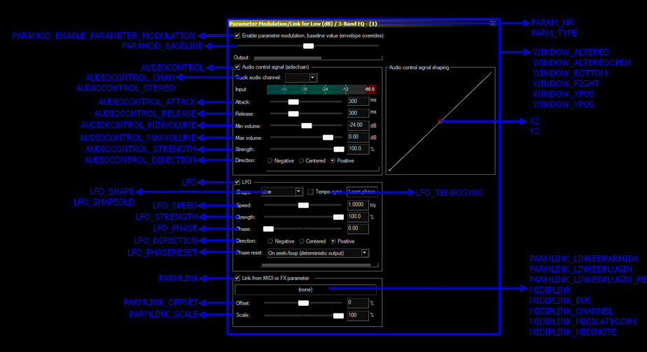

^ Introduction |
| Introduction to the Ultraschall API | How to install Ultraschall API | Introduction: How to use Ultraschall API | Introduction: Bugreporting and Feature Requests | Introduction: License |
^ API-Variables |
| API-Variables |
^ Arrangeview Snapshots |
| Arrangeview Snapshots: Introduction | Arrangeview Snapshots: How to store, retrieve, delete | Arrangeview Snapshots: How to restore |
^ Navigation |
| Navigation: Introduction | Navigation: Move Play and Editcursor | Navigation: Go to markers, regionedges and itemedges | Navigation: Center View | Navigation: Autoscroll and Followmode |
^ Get/Set Project/Track/MediaItem-States |
| Get/Set States for Project, Tracks and Items(including StateChunks) |
^ File Management |
| File Management: Introduction | File Management: Read | File Management: Write | File Management: Analyse | File Management: Background Copying | File Management: Misc |
^ Project Management |
| Project Management: Introduction | Project Management: Check for changed projecttabs |
^ Background-Scripts |
| Background Scripts: Introduction |
^ TrackStates |
| Trackstate Management: Introduction |
^ Routing |
| Routing: Introduction | Routing: Send and Receives | Routing: Hardware Outs | Routing: Mass manipulation of Routings |
^ Marker Management |
| Markers and Regions: Introduction | Markers and Regions: General How To | Markers and Regions: Helpers and Manipulation | Markers and Regions: Custom-Markers and Custom-Regions |
^ Child Scripts |
| Child Scripts: Introduction | Child Scripts: The unique ScriptIdentifier | Child Scripts: Running Childscripts | Child Scripts: Passing Parameters and Returnvalues |
^ Localize Scripts |
| Localize Scripts: Introduction | Localize Scripts: Language-pack-fileformat | Localize Scripts: Functions |
^ Helper Functions |
| Helper_Functions: Introduction | Helper_Functions: Clipboard Management | Helper_Functions: Data Manipulation | Helper_Functions: Undo Management | Helper_Functions: Miscellaneous |
^ Final Words |
| Final words |
The Ultraschall-Extension is intended to be an extension for the DAW Reaper, that enhances it with podcast functionalities. Most DAWs are intended to be used by musicians, for music, but podcasters have their own needs to be fulfilled. In fact, in some places their needs differ from the needs of a musician heavily. Ultraschall is intended to optimise the Reaper's workflows, by reworking them with functionalities for the special needs of podcasters.
The Ultraschall-Framework itself is intended to include a set of Lua-functions, that help creating such functionalities. By giving programmers helper functions to get access to each and every corner of Reaper. That way, extending Ultraschall and Reaper is more comfortable to do.
This API was to be used within Ultraschall only, but quickly evolved into a huge 1000+ function-library, that many 3rd-party programmers and scripters may find use in, with many useful features, like:
Rendering - you can render your projects without having to use the render-dialog. You can customize the rendering-workflow in every way you want. Just create a renderstring and pass it over to RenderProject or RenderProject_Regions
EventManager - run actions when certain events happen. You can fully customize that the way you want and need.
Navigation, Follow and Arrangeview-Manipulation - get/set cursors, zoom, autoscroll-management, scroll, etc
ArrangeView-Snapshots - you can save, retrieve snapshots of the arrangeview, including position, zoomstates to quickly jump through parts of your project
Trackstates - you can access and set all(!) track-states available
Mediaitem-states - you can access and set many mediaitem-states (more will follow)
ItemExtStates/TrackExtStates - you can save additional metadata easily for specific tracks and items using ItemExtStates and TrackExtStates
File access - many helperfunctions for reading, writing, copying files. No more hassle writing it yourself! e.g ReadFullFile, WriteValueToFile, or even Background copying of filesetc
Cough-Mute-management - you can write your own cough-buttons, that set the state of the mute-envelope of a track easily
Marker - extensive set of marker functions, get, set, export, import, enumerate, etc
Spectrogram - you can program the spectrogram-view
Routing - you can set Sends/Receives and HWOuts more straightforward than with Reaper's own Routing-functions, including TrackStateChunks and mass manipulation of routings. Includes mastertrack as well.
Get MediaItems - you can get all media-items within a time-range AND within the tracks you prefer; a 2D-approach e.g. GetAllMediaItemsBetween and GetMediaItemsAtPosition, etc
Gaps between items - you can get the gaps between items in a track, using GetGapsBetweenItems
Edit item(s) - Split, Cut, Copy, Paste, Move, RippleCut, RippleInsert, SectionCut by tracks AND time/start to endposition e.g. RippleCut, RippleInsert, SectionCut, SplitMediaItems_Position, MoveMediaItemsBefore_By, MoveMediaItemsSectionTo and many more
Previewing MediaItems and files - you can preview MediaItems and files without having to start playback of a project
KB-Ini-Management - manipulate the reaper-kb.ini-file with custom-settings
Checking for Datatypes - check all datatypes introduced with Ultraschall-API and all Lua/Reaper-datatypes
UndoManagement - functions for easily making undoing of functions as well as preventing creating an undo-point
Run an Action for Items/Tracks - apply actions to specific items/tracks
Checking for changed projecttabs - check, if projecttabs have been added/removed
ExtState-Management - an extensive set of functions for working with extstates as well as ini-files
Data Manipulation - manipulate a lot of your data, including bitwise-integers, tables, etc
Clipboard-Management - get items from clipboard, put them to clipboard, even multiple ones
Error Messaging System - all functions create useful error-messages that can be shown using, eg: ShowLastErrorMessage, for easier debugging
Child-scripts - start scripts numerous times and be able to pass parameters and returnvalues back and forth; adds uniqe scriptidentifier to do that
Defer-function-alternative - run defer-cycles only every nth cycle/seconds and be able to stop a defer loop from inside and outside of a script instance
tons of other helper-functions
my Reaper-Internals Documentation AND
it's documented with this documentation. :D
Happy coding and let's see, what you can do with it :D
Meo-Ada Mespotine (mespotine.de) (ultraschall.fm/api)
For more information about Ultraschall itself, see ultraschall.fm and if you want to support us, see ultraschall.fm/danke for donating to us.
PS: In this documentation, I assume you have some basic knowledge in Lua and in using Reaper's own API-functions. Explaining both of these is beyond the scope of this doc.
Installing Ultraschall-API is quite easy.
First make sure, you use the right versions of Reaper, SWS and JS-extension: Reaper 6.02 and higher, SWS 2.10.0.1 and higher and Julian Sader's plugin 1.215 and higher. You can download them at reaper.fm and sws-extension.org respectively. Julian Sader's plugin can be installed using ReaPack or gotten from his own github-site
To install the Ultraschall-API, just follow the following steps:
Installation via ReaPack:
The easiest way is to install the Ultraschall-API using ReaPack. ReaPack is a package-manager for extensions and helper-stuff for Reaper, which allows you to easily install and update content done by the Reaper community. Many Scripts, Themes, JSFX-FX, etc are available through that.
Install ReaPack. Get it from https://reapack.com/. There's also a real good User guide for it available, that explains, how to do it.
Copy the downloaded dll(Windows), dylib(Mac) or so(Linux)-file into the UserPlugins-folder in the Resources-folder of Reaper. You can find the correct Resources-path in the Reaper-menu "Options -> Show REAPER resource path in explorer/finder...".
(Re-)Start Reaper
Go into the Menu Extensions -> ReaPack -> manage Repositories
Click on Import/export...-button and choose Import repositories
Paste into the dialog the following link
https://github.com/Ultraschall/ultraschall-lua-api-for-reaper/raw/master/ultraschall_api_index.xmland hit OK.
Doubleclick on the Ultraschall-API-entry. A dialog will pop up with a description of the Ultraschall-API
Hit the Install/update Ultraschall-API-button and select Install all packages in this repository
ReaPack will ask you, if you want to install new packages/updates the next time you synchronize ReaPack.
Hit Yes.
ReaPack installs the Ultraschall-API. If no error appears, it will tell you to restart Reaper, as a new extension has been installed
Restart Reaper.
To update the Ultraschall-API in the future, choose in the menu Extensions -> ReaPack -> Synchronize packages. If an update is available, it will install it automatically.
For more information on ReaPack and it's usage, refer User guide.
Manual Installation:
If you can't or don't want to install ReaPack, you can also install it manually.
In the next chapter, I'll explain, how to use Ultraschall-API.
Usage is really simple. First, create a new script. For this, go into the menu "Actions", hit "Show action list", click the "New action"-button and select "New ReaScript". In the file-requester, you enter a filename for the new script. Just test it by naming it "Test_Ultraschall_Api.lua" Now an editor appears, in which you can enter the code.
Add the following line at the beginning of your script:
dofile(reaper.GetResourcePath().."/UserPlugins/ultraschall_api.lua")
and you can immediately use the functions of Ultraschall-API. For instance, you can test now, if Ultraschall-API works and if installation went alright. Just add the following function underneath the dofile-line:
ultraschall.ApiTest()And hit Cmd+S/Ctrl+S. A messagebox should appear, that tells you, that the API is up and running. If an error-message pops up, please try installing again, according to the manual.
If you are already familiar with programming Reaper's own API-functions, you know, that all of Reaper's functions are placed in a table called "reaper."
e.g. reaper.ShowConsoleMsg("msg")
The Ultraschall-API is quite the same, but is using the table "ultraschall." instead.
e.g. ultraschall.ApiTest()
See the functions-reference for all available functions or read on in this documentation for a collection of concepts introduced by the Ultraschall-API.
You can also find all documentations(including the Lua-Reference Manual) when searching for "Ultraschall Help" in the actionlist(when installed via ReaPack).
Oh, before I forget: The ultraschall_api-folder holds a folder "Scripts_Examples" in which you can find some demos and example-scripts using this API. If you have installed Ultraschall-API via ReaPack, you can also run the action "Script: ultraschall_Add_Developertools_To_Reaper.lua" to install them.
If you find any bugs or itches and want to report them, I suggest you the following procedure:
Make notes of: what operating-system you use(Mac, Win, Linux), which Reaper-version, which SWS-Version and which Ultraschall-Framework-Version.
Write down, what you wanted to do, what you expected to happen and what has happened instead. Make it as detailed as possible(a code-fragment that triggers a bug, a screenvideo i.e. would be perfect), as more information helps to find out, where the problem lies. It's always better to write too much, than the other way around. Please keep in mind when sending code-fragments: they need to be able to trigger the bug without any of your other code. And please don't send me hundreds of lines of your code, as I can't debug it for you. Just concentrate on the line(s), that trigger the bug successfully.
Send these notes either as:
Issue at the GitHub-Repository of the Ultraschall-API(preferred): https://github.com/Ultraschall/Ultraschall-Api-for-Reaper.git
eMail: lspmp3@yahoo.de(for framework-related stuff only!!)
Sendegate: sendegate.de into the Ultraschall-section.
Bugreports that contain only a "it doesn't work" and "I expected it to work" will be ignored gracefully ;)
If you have feature-requests, we have open ears. Keep in mind, not everything you find a good idea actually is one. So we may or may not take on your idea, change and rework it into a way, that benefits all, not just your particular use-case. When in doubt, just try it! Keep also in mind: there are limitations. Some cool features we all would love to have, simply aren't implementable.
Que sera, sera...
For your comments just send a mail at: lspmp3@yahoo.de(for framework-related stuff only!!) or go to sendegate.de into the Ultraschall-section.
PS: If you know how to implement impossible things or do things better than the current implementation, you are welcome to donate your improved codes. :)
Copyright (c) 2014-2019 Ultraschall (http://ultraschall.fm)
Permission is hereby granted, free of charge, to any person obtaining a copy of this software and associated documentation files (the "Software"), to deal in the Software without restriction, including without limitation the rights to use, copy, modify, merge, publish, distribute, sublicense, and/or sell copies of the Software, and to permit persons to whom the Software is furnished to do so, subject to the following conditions:
The above copyright notice and this permission notice shall be included in all copies or substantial portions of the Software.
THE SOFTWARE IS PROVIDED "AS IS", WITHOUT WARRANTY OF ANY KIND, EXPRESS OR IMPLIED, INCLUDING BUT NOT LIMITED TO THE WARRANTIES OF MERCHANTABILITY, FITNESS FOR A PARTICULAR PURPOSE AND NONINFRINGEMENT. IN NO EVENT SHALL THE AUTHORS OR COPYRIGHT HOLDERS BE LIABLE FOR ANY CLAIM, DAMAGES OR OTHER LIABILITY, WHETHER IN AN ACTION OF CONTRACT, TORT OR OTHERWISE, ARISING FROM, OUT OF OR IN CONNECTION WITH THE SOFTWARE OR THE USE OR OTHER DEALINGS IN THE SOFTWARE.
Reaper and the Reaper-Logo are trademarks of Cockos inc and can be found at reaper.fm
The SWS-logo has been taken from the SWS-extension-project, which can be found at sws-extension.org
Ultraschall-API written by Meo-Ada Mespotine mespotine.de with contributions from Udo Sauer and Ralf Stockmann
If you want to donate to our project, head over to ultraschall.fm/danke.
Kudos to lokasenna, who suggested some cool things, that made some functions much faster and sparkled new ones. Cheers!
MakeCopyOfTable-function adapted from Tyler Neylon's (twitter.com/tylerneylon) function, found at Stack Overflow
Thanks to him for allowing me to use it :)
Parameters and returnvalues are usually of specific types. Let's look at the following function:
integer number_of_items, array MediaItemArray, array MediaItemStateChunkArray =
ultraschall.GetMediaItemsAtPosition(number position, string trackstring)The returnvalues number_of_items is of type integer, MediaItemArray is of type array/type, MediaItemStateChunkArray if of type array. The parameters position is of type number, trackstring is of type string. These parameters/returnvalues only accept/return data of these given types.
The Ultraschall-API uses a lot of the standard-datatypes provided by Lua and Reaper/SWS, which are:
If a datatype has "optional" before it, this parameter/returnvalue is optional. That means, such parameters don't need to be given, such return-values can be nil.
In addition to the already used datatypes, the Ultraschall-API introduces some more datatypes, like:
These Ultraschall-API-specific datatypes are described in more detail in the following chapters.
Many functions allow you to process through multiple tracks. As good as this is, this provided some difficulty in telling a function, to which track it shall be applied to.
Hence the datatype: trackstring
A trackstring is just a simple string with all tracknumbers that you want a certain function to be applied to.
Examplecode:
trackstring = "1,2,5,7,9"These tracknumbers must be separated from each other using a comma. Whitespaces are not allowed.
With trackstrings, passing the wanted tracks to a function is really easy.
Many functions allow you to process through multiple mediaitems. To be able to pass multiple mediaitems at once to a function, I added the datatype MediaItemArray.
A MediaItemArray is an array with many MediaItems, indexed by an integer.
Examplecode:
-- get the MediaItems
MediaItem1=reaper.GetMediaItem(0,0)
MediaItem2=reaper.GetMediaItem(0,1)
MediaItem3=reaper.GetMediaItem(0,2)
MediaItem4=reaper.GetMediaItem(0,3)
-- create and fill the MediaItemArray
MediaItemArray={}
MediaItemArray[1]=MediaItem1
MediaItemArray[2]=MediaItem2
MediaItemArray[3]=MediaItem3
MediaItemArray[4]=MediaItem4MediaItemArrays will be read, until an index of the MediaItemArray is nil. In the above example, MediaItemArray[5] would be nil and therefore seen as the end of the array, even if there's a MediaItemArray[6]!
With MediaItemArray, passing the wanted MediaItems to a function is really easy.
Many functions allow you to process through multiple mediaitem-statechunks. To be able to pass multiple mediaitem-statechunks at once to a function, I added the datatype MediaItemStateChunkArray.
A MediaItemStateChunkArray is an array with many MediaItemStateChunks, indexed by an integer.
Examplecode:
-- get the MediaItems
MediaItem1=reaper.GetMediaItem(0,0)
MediaItem2=reaper.GetMediaItem(0,1)
MediaItem3=reaper.GetMediaItem(0,2)
MediaItem4=reaper.GetMediaItem(0,3)
-- get the MediaItemStateChunks
StateChunk1=reaper.GetItemStateChunk(MediaItem1, "", false)
StateChunk2=reaper.GetItemStateChunk(MediaItem2, "", false)
StateChunk3=reaper.GetItemStateChunk(MediaItem3, "", false)
StateChunk4=reaper.GetItemStateChunk(MediaItem4, "", false)
-- create and fill the MediaItemStateChunkArray
MediaItemStateChunkArray={}
MediaItemStateChunkArray[1]=StateChunk1
MediaItemStateChunkArray[2]=StateChunk2
MediaItemStateChunkArray[3]=StateChunk3
MediaItemStateChunkArray[4]=StateChunk4MediaItemStateChunkArrays will be read, until an index of the MediaItemStateChunkArray is nil. In the above example, MediaItemStateChunkArray[5] would be nil and therefore seen as the end of the array, even if there's a MediaItemStateChunkArray[6]!
With MediaItemStateChunkArrays, passing the wanted MediaItemStateChunks to a function is really easy.
When working with envelope-points, handling all the attributes such an envelope-point is quite unhandy. So I introduced the datatype EnvelopePointObject, containing all it's attributes.
An EnvelopePointObject is an array with all attributes an envelope-point has.
Examplecode:
MediaTrack=reaper.GetTrack(0,0) -- get MediaTrack
TrackEnvelope=reaper.GetTrackEnvelope(MediaTrack, 0) -- get TrackEnvelope
retval, EnvelopePointObject = ultraschall.CreateEnvelopePointObject(TrackEnvelope, 1, 20, 10, 0, 0, false) -- create EnvelopePointObjectAn EnvelopePointObject is an array with all the attributes of an envelope-point, containing the following values:
EnvelopePointObject[1] - Trackenvelope; The TrackEnvelope-object, in which the point lies
EnvelopePointObject[2] - integer; Envelope-idx, with 0 for the first envelope-point; 1, for the second, etc
EnvelopePointObject[3] - number; the time in seconds
EnvelopePointObject[4] - number; the raw value of the envelope-point
EnvelopePointObject[5] - integer; the shape of the envelope-point, with
0 - Linear
1 - Square
2 - Slow start/end
3 - Fast start
4 - Fast end
5 - Bezier
EnvelopePointObject[6] - number; tension of the envelope-point; -1 to 1; 0 for no tension
EnvelopePointObject[7] - boolean; if the envelope-point is selected(true) or not(false)
EnvelopePointObject[8] - number; dBValue converted from valueEnvelopePointObjects make handling of envelope-points and it's attributes much easier.
When working with multiple EnvelopePointObjects, I introduced the datatype EnvelopePointArray, containing multiple EnvelopePointObjects.
An EnvelopePointArray is an array with multiple EnvelopePointObjects, indexed by an integer.
Examplecode:
-- create EnvelopePointObjects
MediaTrack=reaper.GetTrack(0,0) -- get MediaTrack
TrackEnvelope=reaper.GetTrackEnvelope(MediaTrack, 0) -- get TrackEnvelope
retval, EnvelopePointObject1 = ultraschall.CreateEnvelopePointObject(TrackEnvelope, 1, 20, 10, 0, 0, false) -- create EnvelopePointObject1
retval, EnvelopePointObject2 = ultraschall.CreateEnvelopePointObject(TrackEnvelope, 1, 20, 10, 0, 0, false) -- create EnvelopePointObject2
retval, EnvelopePointObject3 = ultraschall.CreateEnvelopePointObject(TrackEnvelope, 1, 20, 10, 0, 0, false) -- create EnvelopePointObject3
-- creating EnvelopePointArray
EnvelopePointArray={}
EnvelopePointArray[1]=EnvelopePointObject1
EnvelopePointArray[2]=EnvelopePointObject2
EnvelopePointArray[3]=EnvelopePointObject3EnvelopePointArray makes passing multiple EnvelopePointObjects to functions much easier.
When having to work with many colors, like MediaTrack-colors or the colors set to individual MediaItems, one may wish to have a proper datastructure to store these colorvalues. For that, I introduce the ColorTable.
A ColorTable is an array containing the multiple colors, indexed by an integer.
Structure:
ColorTable[index]["r"]=red color-value(0-255)
ColorTable[index]["g"]=green color-value(0-255)
ColorTable[index]["b"]=blue color-value(0-255)
ColorTable[index]["gfxr"]=red color-value, useable by gfx-related-functions(0-1)
ColorTable[index]["gfxg"]=green color-value, useable by gfx-related-functions(0-1)
ColorTable[index]["gfxb"]=blue color-value, useable by gfx-related-functions(0-1)
ColorTable[index]["nativecolor"]=the r-g-b-color-value converted to the native-color, used in your system
ColorTables can be used to store gradients, or temporary track-colors, or anything related to multiple colors.
When working with rendering, you have to deal with dozens of potential options. I tried to add all these options as parameters into the rendering-functions but, I failed miserably.
This is mostly because, there are so many.
So I added a new construct, called: the RenderTable.
A Rendertable is a table, which stores all rendersettings you can set in Reaper. And with all, I mean all!
Important: You should never create RenderTables "by hand" but rather use my functions for that. That way your RenderTables will stay valid when I add new features to them in the future. You can, however, alter them, after you've created them with my functions.
Structure:
RenderTable["AddToProj"] - Add rendered items to new tracks in project-checkbox; true, checked; false, uncheckedRenderTable["BrickwallLimiterEnabled"] - true, brickwall limiting is enabled; false, brickwall limiting is disabled
RenderTable["BrickwallLimiterMethod"] - brickwall-limiting-mode; 1, peak; 2, true peak RenderTable["BrickwallLimiterTarget"] - the volume of the brickwall-limit RenderTable["Bounds"] - 0, Custom time range; 1, Entire project; 2, Time selection; 3, Project regions; 4, Selected Media Items(in combination with Source 32); 5, Selected regions 6, Razor edit areas 7, All project markers 8, Selected markers RenderTable["Channels"] - the number of channels in the rendered file; 1, mono; 2, stereo; higher, the number of channels RenderTable["CloseAfterRender"] - true, closes rendering to file-dialog after render; false, doesn't close it RenderTable["Dither"] - &1, dither master mix; &2, noise shaping master mix; &4, dither stems; &8, dither noise shaping stems RenderTable["EmbedMetaData"] - Embed metadata; true, checked; false, unchecked RenderTable["EmbedStretchMarkers"] - Embed stretch markers/transient guides; true, checked; false, unchecked RenderTable["EmbedTakeMarkers"] - Embed Take markers; true, checked; false, unchecked
RenderTable["Enable2ndPassRender"] - true, 2nd pass render is enabled; false, 2nd pass render is disabled RenderTable["Endposition"] - the endposition of the rendering selection in seconds
RenderTable["FadeIn_Enabled"] - true, fade-in is enabled; false, fade-in is disabled RenderTable["FadeIn"] - the fade-in-time in seconds RenderTable["FadeIn_Shape"] - the fade-in-shape - 0, Linear fade in - 1, Inverted quadratic fade in - 2, Quadratic fade in - 3, Inverted quartic fade in - 4, Quartic fade in - 5, Cosine S-curve fade in - 6, Quartic S-curve fade in RenderTable["FadeOut_Enabled"] - true, fade-out is enabled; false, fade-out is disabled RenderTable["FadeOut"] - the fade-out time in seconds RenderTable["FadeOut_Shape"] - the fade-out-shape - 0, Linear fade in - 1, Inverted quadratic fade in - 2, Quadratic fade in - 3, Inverted quartic fade in - 4, Quartic fade in - 5, Cosine S-curve fade in - 6, Quartic S-curve fade in RenderTable["MultiChannelFiles"] - Multichannel tracks to multichannel files-checkbox; true, checked; false, unchecked
RenderTable["Normalize_Enabled"] - true, normalization enabled; false, normalization not enabled RenderTable["Normalize_Method"] - the normalize-method-dropdownlist 0, LUFS-I 1, RMS-I 2, Peak 3, True Peak 4, LUFS-M max 5, LUFS-S max RenderTable["NormalizeOnlyFilesTooLoud"] - Only normalize files that are too loud,checkbox - true, checkbox checked - false, checkbox unchecked RenderTable["NormalizeStemstoMasterTarget"] - true, normalize-stems to master target(common gain to stems) false, normalize each file individually RenderTable["Normalize_Target"] - the normalize-target as dB-value RenderTable["NoSilentRender"] - Do not render files that are likely silent-checkbox; true, checked; false, unchecked RenderTable["OfflineOnlineRendering"] - Offline/Online rendering-dropdownlist; 0, Full-speed Offline 1, 1x Offline 2, Online Render 3, Online Render(Idle) 4, Offline Render(Idle) RenderTable["OnlyMonoMedia"] - Tracks with only mono media to mono files-checkbox; true, checked; false, unchecked RenderTable["OnlyChannelsSentToParent"] - true, option is checked; false, option is unchecked RenderTable["ProjectSampleRateFXProcessing"] - Use project sample rate for mixing and FX/synth processing-checkbox; true, checked; false, unchecked RenderTable["RenderFile"] - the contents of the Directory-inputbox of the Render to File-dialog RenderTable["RenderPattern"] - the render pattern as input into the File name-inputbox of the Render to File-dialog RenderTable["RenderQueueDelay"] - Delay queued render to allow samples to load-checkbox; true, checked; false, unchecked RenderTable["RenderQueueDelaySeconds"] - the amount of seconds for the render-queue-delay RenderTable["RenderResample"] - Resample mode-dropdownlist; 0, Sinc Interpolation: 64pt (medium quality) 1, Linear Interpolation: (low quality) 2, Point Sampling (lowest quality, retro) 3, Sinc Interpolation: 192pt 4, Sinc Interpolation: 384pt 5, Linear Interpolation + IIR 6, Linear Interpolation + IIRx2 7, Sinc Interpolation: 16pt 8, Sinc Interpolation: 512pt(slow) 9, Sinc Interpolation: 768pt(very slow) 10, r8brain free (highest quality, fast) RenderTable["RenderStems_Prefader"] - true, option is checked; false, option is unchecked RenderTable["RenderString"] - the render-cfg-string, that holds all settings of the currently set render-output-format as BASE64 string RenderTable["RenderString2"] - the render-cfg-string, that holds all settings of the currently set secondary-render-output-format as BASE64 string RenderTable["RenderTable"]=true - signals, this is a valid render-table RenderTable["SampleRate"] - the samplerate of the rendered file(s) RenderTable["SaveCopyOfProject"] - the "Save copy of project to outfile.wav.RPP"-checkbox; true, checked; false, unchecked RenderTable["SilentlyIncrementFilename"] - Silently increment filenames to avoid overwriting-checkbox; true, checked; false, unchecked RenderTable["Source"] - 0, Master mix; 1, Master mix + stems; 3, Stems (selected tracks); 8, Region render matrix; 16, Tracks with only Mono-Media to Mono Files; 32, Selected media items; 64, selected media items via master; 128, selected tracks via master 4096, Razor edit areas 4224, Razor edit areas via master RenderTable["Startposition"] - the startposition of the rendering selection in seconds RenderTable["TailFlag"] - in which bounds is the Tail-checkbox checked &1, custom time bounds; &2, entire project; &4, time selection; &8, all project regions; &16, selected media items; &32, selected project regions &64, razor edit areas RenderTable["TailMS"] - the amount of milliseconds of the tail
This rendertable can be used by, e.g. RenderProject_RenderTable
When you work with data of different sources but need to work with data of a specific type, it would be handy to have ways of checking, whether a certain variable has data of a specific type.
Lua provides ways of checking for valid datatypes(type() and math.type()) as well as Reaper(ValidatePtr() and ValidatePtr2()).
However, sometimes you want to have one function to check them all, and all these functions do not include Ultraschall-API-specific datatypes, so I added some stuff for that.
type
works like Lua's own type-function, but checks for Reaper's own datatypes as well, like:
Lua: nil, number: integer, number: float, boolean, string, function, table, thread, userdata,
Reaper: ReaProject, MediaItem, MediaItem_Take, MediaTrack, TrackEnvelope, AudioAccessor, joystick_device, PCM_source
userdata: will be shown, if object isn't of any known type to get of which type a variable is, just use
datatype_of_variable = ultraschall.type(variable)where the return-value datatype_of_variable will hold a string describing the type of the variable.
Due some API-restrictions, SWS-specific datatypes are not (yet) supported.
Ultraschall-API specific or other Reaper-datatypes
To check for Ultraschall-API specific or other Reaper-datatypes, you can use the following functions:
Ultraschall-API-specific:
Other Reaper-datatypes:
They will be part of ultraschall.type() someday.
other types of data
These aren't datatypes, but you may want to check them for validity as well
When working with the Ultraschall-API or general programming in Reaper, some additional things may or may not be helpful to know.
So I added some API-variables, like:
These can be accessed using:
scriptpath = ultraschall.Script_Path
which would put the current-scriptpath to the variable scriptpath.
You could change them as well, but that would be pointless.
The Ultraschall-API provides functions for rendering your projects, without having to use the Rendering-dialog of Reaper. This gives you a wide range of possibilities to customize your rendering-needs.
There are two basic ways to render a file.
The easy way:
creating a renderstring with all format-specific-settings, using the accompanying functions:
CreateRenderCFG_AIFF, CreateRenderCFG_AudioCD, CreateRenderCFG_DDP ,CreateRenderCFG_FLAC, CreateRenderCFG_M4AMAC, CreateRenderCFG_MP3ABR,CreateRenderCFG_MP3CBR, CreateRenderCFG_MP3MaxQuality, CreateRenderCFG_MP3VBR, CreateRenderCFG_OGG, CreateRenderCFG_Opus, CreateRenderCFG_WAV, CreateRenderCFG_WAVPACK CreateRenderCFG_AVI_Video, CreateRenderCFG_GIF, CreateRenderCFG_LCF, CreateRenderCFG_MKV_Video, CreateRenderCFG_MOVMAC_Video, CreateRenderCFG_MP4MAC_Video, CreateRenderCFG_QTMOVMP4_Video, CreateRenderCFG_WebMVideo, CreateRenderCFG_CAF, [CreateRenderCFG_FLV_Video(US_Api_Functions.html#CreateRenderCFGFLVVideo)], CreateRenderCFG_MPEG1_Video, CreateRenderCFG_MPEG2_Video
passing the render-string to one of the Render-functions
RenderProject, RenderProject_Regions
So the following code should render the current project into an MP3 with a Constant Bitrate of 128kbps.
-- create Render-string
render_cfg_string = ultraschall.CreateRenderCFG_MP3CBR(11, 2)
-- Pass this Render-string to the rendering-function
retval, rendered_files_count, rendered_files_MediaItemStateChunk, rendered_files_array
= ultraschall.RenderProject(nil, "c:\\exportfile.mp3", 0, -1, false, false, false, render_cfg_string, nil)The full control way:
creating a RenderTable, which holds all settings you can set for the rendering-process, using one of the following functions:
CreateNewRenderTable(new rendertable), GetRenderTable_Project(create from the current project), GetRenderTable_ProjectFile(create from an rpp-projectfile), GetRenderPreset_RenderTable(create from render-preset)
optionally exchanging the renderstring(which holds all format-specific-settings) in the RenderTable, using the accompanying functions:
CreateRenderCFG_AIFF, CreateRenderCFG_AudioCD, CreateRenderCFG_DDP ,CreateRenderCFG_FLAC, CreateRenderCFG_M4AMAC, CreateRenderCFG_MP3ABR,CreateRenderCFG_MP3CBR, CreateRenderCFG_MP3MaxQuality, CreateRenderCFG_MP3VBR, CreateRenderCFG_OGG, CreateRenderCFG_Opus, CreateRenderCFG_WAV, CreateRenderCFG_WAVPACK CreateRenderCFG_AVI_Video, CreateRenderCFG_GIF, CreateRenderCFG_LCF, CreateRenderCFG_MKV_Video, CreateRenderCFG_MOVMAC_Video, CreateRenderCFG_MP4MAC_Video, CreateRenderCFG_QTMOVMP4_Video, CreateRenderCFG_WebMVideo, CreateRenderCFG_CAF, [CreateRenderCFG_FLV_Video(US_Api_Functions.html#CreateRenderCFGFLVVideo)], CreateRenderCFG_MPEG1_Video, CreateRenderCFG_MPEG2_Video
Render the project, using the function:
RenderProject_RenderTable
So the following code should render the current project, using the settings stored in a projectfile "c:\testproject.rpp", into an MP3 with a Constant Bitrate of 128kbps.
-- create RenderTable
RenderTable = ultraschall.GetRenderTable_ProjectFile("c:\\testproject.rpp")
-- create Render-string
RenderTable["RenderString"] = ultraschall.CreateRenderCFG_MP3CBR(11, 2)
-- Render project using that RenderTable
rendered_files_count, rendered_files_MediaItemStateChunk, rendered_files_array
= ultraschall.RenderProject_RenderTable(nil, RenderTable, false, false, false)Read the accompanying documentation-entries for CreateRenderCFG_MP3CBR and RenderProject for more details and/or the following chapters.
Render-strings(or render_cfg, as they are named in Reaper) are strings, that contain all settings for a specific Render-Output-format, as MP3, WAV, AIF, FLAC, etc.
They are usually stored into RPP-projectfiles and are quite cryptic(for those of you, who know what that means: BASE64-encoded).
These are essential for rendering a project using the provided rendering-functions, so the Ultraschall-API provides functions who create or analyze such render-strings.
All these functions start with CreateRenderCFG_ in their name, so if you are looking for a specific format, use CreateRenderCFG_audioformat (like CreateRenderCFG_FLAC, etc).
The parameters of these functions represent all format-options as you are used from the Render-dialog. They should be fairly complete, though some formats (Video, OGG) are limited with some of their options(fps only supported up to 2000.00 in Ultraschall-API for API-limitations).
Example for FLAC:
render_string = ultraschall.CreateRenderCFG_FLAC(integer BitDepth, integer EncSpeed)creates the render-string for the FLAC-fileformat. Just provide the BitDepth(e.g 0 for 24 Bit) and the encoding-speed(EncSpeed) (e.g 5 for the default encoding speed).
Have a look into the functions-reference to get the possible values for these parameters.
render_string = ultraschall.CreateRenderCFG_FLAC(0, 5)This will create a render-string for FLAC with 24bit-depth and the encoding-speed of 5(which is the default-setting in the render-dialog).
This renderstring can then be passed over to SetProject_RenderCFG to set it into a project-file, or to RenderProject to render a projectfile using the format-settings in the Render-string or put into RenderTables, that can be used for the rendering function RenderProject_RenderTable.
The following render-string-functions are available in Ultraschall-API:
CreateRenderCFG_AIFF, CreateRenderCFG_AudioCD, CreateRenderCFG_DDP ,CreateRenderCFG_FLAC, CreateRenderCFG_M4AMAC, CreateRenderCFG_MP3ABR,CreateRenderCFG_MP3CBR, CreateRenderCFG_MP3MaxQuality, CreateRenderCFG_MP3VBR, CreateRenderCFG_OGG, CreateRenderCFG_Opus, CreateRenderCFG_WAV, CreateRenderCFG_WAVPACK, CreateRenderCFG_AVI_Video, CreateRenderCFG_GIF, CreateRenderCFG_LCF, CreateRenderCFG_MKV_Video, CreateRenderCFG_MOVMAC_Video, CreateRenderCFG_MP4MAC_Video, CreateRenderCFG_QTMOVMP4_Video, CreateRenderCFG_WebMVideo CreateRenderCFG_CAF, [CreateRenderCFG_FLV_Video(US_Api_Functions.html#CreateRenderCFGFLVVideo)], CreateRenderCFG_MPEG1_Video, CreateRenderCFG_MPEG2_Video
If you have already a Base64-encoded-renderstring but would love to know, which settings it holds, you can analyze them as well. First, you need to determine, which format is stored in this render-string, using:
string outputformat, string renderstring = ultraschall.GetOutputFormat_RenderCfg(string Renderstring, optional ReaProject ReaProject)
This allows you to get the output-format stored in a Renderstring. If you set it to nil, it will return the output-format set in the current active project.
You can also pass a ReaProject as optional second parameter, so the function will return the output-format of it as well.
To make life easier, it also returns the analysed render-string. So if you want to know the renderoutput-format of a ReaProject, you also get the render-string to work on further.
Now that we know, of which format the renderstring is, we can get the settings stored in it. So let's assume, it is a renderstring of the format FLAC, you can use the following function to analyse it's settings:
integer encoding_depth, integer compression = ultraschall.GetRenderCFG_Settings_FLAC(string rendercfg)Pass to this function the renderstring of the flac-format and it will return the settings for encoding_depth and compression, as settable in the Render to File-dialog.
The following functions are available for analysing the render-strings in all kinds of formats:
GetRenderCFG_Settings_AIFF, GetRenderCFG_Settings_AudioCD, GetRenderCFG_Settings_DDP, GetRenderCFG_Settings_FLAC, GetRenderCFG_Settings_M4AMac, GetRenderCFG_Settings_MP3, GetRenderCFG_Settings_MP3ABR, GetRenderCFG_Settings_MP3CBR, GetRenderCFG_Settings_MP3MaxQuality, GetRenderCFG_Settings_MP3VBR, GetRenderCFG_Settings_OGG, GetRenderCFG_Settings_OPUS, GetRenderCFG_Settings_WAV, GetRenderCFG_Settings_WAVPACK, GetRenderCFG_Settings_AVI_Video, GetRenderCFG_Settings_GIF, GetRenderCFG_Settings_LCF, GetRenderCFG_Settings_MKV_Video, GetRenderCFG_Settings_MOVMac_Video, GetRenderCFG_Settings_MP4Mac_Video, GetRenderCFG_Settings_QTMOVMP4_Video, GetRenderCFG_Settings_WebMVideo GetRenderCFG_CAF, [GetRenderCFG_FLV_Video(US_Api_Functions.html#GetRenderCFGFLVVideo)], GetRenderCFG_MPEG1_Video, GetRenderCFG_MPEG2_Video
RenderTables are tables, who hold all settings, that one can set in Reaper for the rendering-process. Most of the stuff about them, I've told already in the chapter RenderTables.
The main goal behind them is, to make passing the dozens of render-settings much easier and comfortable.
But even then, creating one is very painful, so I made functions, who create valid RenderTables.
It is always a good idea to use the US-API-functions for creating RenderTables, as I may add more settings into RenderTables(when Reaper gets new ones). If you would create a RenderTable by hand without my functions, you not only miss out the new features. In fact, your old RenderTable would be seen as invalid by the API, as it's missing new settings.
So be advised to always use the CreateRenderTable-functions from the API. They will always create valid RenderTables, setting unset settings to useful defaults.
That way, your old scripts will not break, even if you don't update them to use new settings.
After a RenderTable is created, you can safely alter it's settings to valid values, but creating them must be done by US-API's functions.
I wrote numerous functions to create and work with RenderTables.
Create new RenderTable:
Get render-settings a RenderTable:
Apply settings from a RenderTable:
Check for validity:
With that, you can interoperate with RenderTables and render-settings from/to projects, projectfiles and presets in any way you wish.
The rendering-functions let you render a project, either a stored rpp-project-file or the currently opened one.
They provide you with a wide range of functionality, so the rendering process should be quite close to Reaper's "official"-own-process using the Render to File-dialog.
They also return the filenames of the rendered files, as well as MediaItemStateChunks of all rendered files, so you can easily import them into your project.
There are currently three different render-functions available:
are basically the same, with the only difference, that with the first one you can set a specific startposition and endposition, while the second one, you set it to a region-number.
That said, a lot of the parameters are the same.
projectfilename_with_path - the projectfile with path, that you want to render. Set it to nil, if you want to render the
currently opened project
renderfilename_with_path - the filename with path of the output-file
overwrite_without_asking - if you want to overwrite already existing outputfiles, set this to true; else, set it to falseThe following two are directly connected to some of Reaper's dialogs:
renderclosewhendone - the render-progress-window, that is shown during the actual rendering can be closed automatically after
rendering is finished(there's a checkbox in that window to set this). Set this to true to automatically
close it; set it to false to keep it shown; set it to nil and it will use the setting the user set with
the checkbox
filenameincrease - another of Reaper's dialogs, that will pop up, when an output-file already exists and overwrite_without_asking
is set to false. It will ask you to automatically increase the filename with a number to prevent accidental
overwriting. Set this to true to automatically increase filename;
set it to false to show the dialog; set it to nil to use the settings the user choseThe last parameter is the place for your render-string:
rendercfg - the renderstring, as created using a CreateRenderCFG_XXX-function, as described in
the chapter "Rendering: About Renderstrings"
if you omit it or set it to nil, it will use the format-settings already set in the project or projectfile
rendercfg2 - the same like rendercfg, but for the secondary render-format(see Render to File-dialog for what that means)
It also returns some interesting return-values:
retval - 0, if rendering was successful; -1, in case of an error(like invalid parametervalues or user aborted rendering)
renderfilecount - the number of rendered files. Usually 1, but can be higher, when rendering stems as well
MediaItemStateChunkArray - an array with MediaItemStateChunks of the rendered projects, ready to include into a project of your choice
the first entry is for the master-track-rendered-file
Filearray - an array with filenames-with-path of all rendered files, with the first entry being the one of
the master-track-rendered-fileworks different and uses a RenderTable, which stores all rendersettings(and I mean: ALL).
This gives you full control over the rendering-process and you can customize it in anyway you want.
You can set the following parameters:
projectfilename_with_path - You can pass here the filename+path of the project that you want to render.
To render the current active project, set this parameter to nil.
RenderTable - a RenderTable, which holds all render-settings you want to set; to use the already set settings, set this to nil
This RenderTable allows you to control all render-settings.
AddToProj - when rendering the current project, shall the rendered files be added to the project(true) or not(false)? The following two are directly connected to some of Reaper's dialogs:
CloseAfterRender - the render-progress-window, that is shown during the actual rendering can be closed automatically after
rendering is finished(there's a checkbox in that window to set this). Set this to true to automatically
close it; set it to false to keep it shown; set it to nil and it will use the setting the user set with
the checkbox
SilentlyIncrementFilename - another of Reaper's dialogs, that will pop up, when an output-file already exists and overwrite_without_asking
is set to false. It will ask you to automatically increase the filename with a number to prevent accidental
overwriting. Set this to true to automatically increase filename;
set it to false to show the dialog; set it to nil to use the settings the user chose The return-values should be quite familiar to you from the other render-functions:
renderfilecount - the number of rendered files. Usually 1, but can be higher, when rendering stems as well
MediaItemStateChunkArray - an array with MediaItemStateChunks of the rendered projects, ready to include into a project of your choice
the first entry is for the master-track-rendered-file
Filearray - an array with filenames-with-path of all rendered files, with the first entry being the one of
the master-track-rendered-fileWith that, you should be able to successfully render your project and do some neat stuff afterwards.
For more enhanced customization of projectfiles for Rendering, see Rendering: Change more render-settings in projectfiles.
Sometimes, you want to alter Render-Settings in a projectfile by hand, without using RenderTables for that. So, the API has many useful functions as well, starting with SetProject_ You can alter a projectfile using the following Ultraschall-Framework-functions, that represent certain elements from Reaper's Render-Dialog:
If you want to alter the currently opened project in its rpp-projectfile, you need to save it first. After that, use:
retval, projectfilename_with_path = reaper.EnumProjects(-1,"")to get the projectfilename_with_path of the current project as returnvalue. Use projectfilename_with_path as parameter for the SetProject-functions needed for you alterations.
The functions are just a small selection of the functions to alter project-files, as provided by the Ultraschall-API. Browse through the functions in the "Project-Files"-section of the index of the Ultraschall-API-Functions-Reference for many more of them.
Reaper has the concept of render-presets, who hold all render-settings you can set in the Render to File-dialog and you want to store for quick retrieval.
These can be reused within the Render to File-dialog, when clicking the Preset-button.
Render-presets are split into two main parts: Bounds and Options and Formats, who each hold parts of the full render-settings-package.
Options and Format holds the following settings:
OutputAndFormatPresetname, SampleRate, Channels, offline_online_dropdownlist, useprojectsamplerate_checkbox, resamplemode_dropdownlist, various_checkboxes and rendercfg
Bounds holds the following settings: BoundsPresetname, bounds_dropdownlist, start_position, endposition, source_dropdownlist_and_checkboxes, unknown, outputfilename_renderpattern, tail_checkbox
That means, to get the full render-settings as a Rendertable, you need to get both, the settings for a Renderformat-preset and a Bounds-preset.
And to make that easier, I added numerous functions:
integer bounds_presets, table bounds_names, integer options_format_presets, table options_format_names,
integer both_presets, table both_names = ultraschall.GetRenderPreset_Names()This gets all Bounds-presetnames and all Options and Format-presetnames. These are important, as you need them to for getting them as RenderTable using GetRenderPreset_RenderTable.
As a general rule: RenderPresets who were stored using "All Settings" in the Render-Presets-menu of the Render to File-dialog, share the same presetname.
If you know the preset-names, you can create a RenderTable, that stores all render-settings stored in their presets.
RenderTable RenderTable = ultraschall.GetRenderPreset_RenderTable(string Bounds_Name, string Options_and_Format_Name)This function returns a RenderTable from render-presets. You simply pass to the function the Bounds-presetname and the options and format-presetname and it will take these settings and put them into a RenderTable.
Some settings aren't stored in Render-Presets and therefore will get default values:
TailMS=0, SilentlyIncrementFilename=false, AddToProj=false, SaveCopyOfProject=false, RenderQueueDelay=false, RenderQueueDelaySeconds=falseThis RenderTable can be used for the RenderProject_RenderTable-function.
Using already existing render-presets is nice, but being able to change them is even nicer. Once they are added/set, they are available after (re-)opening the Render to File-dialog.
boolean retval = ultraschall.AddRenderPreset(string Bounds_Name, string Options_and_Format_Name,
RenderTable RenderTable)With this one, you can add a new render-setting, the usage is simple: pass to it a new Bounds-presetname, a new Options and Format-presetname and a RenderTable, which holds all render-settings. If you want to just store one of the render-presets, you pass nil to the other presetname. So if you want to add only a Bounds-preset, the functioncall could look like that:
retval = ultraschall.AddRenderPreset("My new bounds-render-preset", nil, RenderTable)The function will check, whether the chosen name is already in use and return false in that case.
boolean retval = ultraschall.SetRenderPreset(string Bounds_Name, string Options_and_Format_Name,
RenderTable RenderTable)As you can see, it basically works like the aforementioned AddRenderPreset. The only difference is that is checks, whether the preset-name does not exists. In that case, it returns false, otherwise it exchanges the render-preset-settings with the settings stored in the RenderTable.
Now we have get, add and set, so what is still missing? You're right: deleting them.
boolean retval = ultraschall.DeleteRenderPreset_Bounds(string Bounds_Name)This function deletes an already stored bounds-render-preset. Just pass the Bounds-presetname and it deletes it, if existing. If the preset does not exist, it returns false, otherwise it returns true.
DeleteRenderPreset_FormatOptions
boolean retval = ultraschall.DeleteRenderPreset_FormatOptions(string Options_and_Format_Name)Basically like DeleteRenderPreset_Bounds, but deletes an Options and Format-renderpreset. Just pass the Options and Format-presetname and it deletes it from the presets. If the preset does not exist, it returns false, otherwise it returns true.
This should give you a lot of control over render-presets.
Another way to render projects is using the RenderQueue, which is often practical. For that, I included some functions to deal with the render-queue:
integer Filecount, array Filearray = ultraschall.GetRenderQueuedProjects()This function allows you to get the projects currently stored in RenderQueue and the number of queued projects.
The order of the projects in FileArray represent the index, which can be used in RenderProject_RenderQueue, with the first project being index 1, the second being index 2, etc.
You can also render these projects using the other render-functions as well.
boolean retval = ultraschall.RenderProject_RenderQueue(integer index)This renders a project in the render-queue. The index represents the project within the render-queue, with 1 for the first.
To know, which queued project has which index, use GetRenderQueuedProjects.
If you set index to -1, it will attempt rendering all projects in the render-queue. Due API-limitations, this function can not return the rendered files(I hope I can circumvent this limitation at some point).
boolean retval = ultraschall.AddProjectFileToRenderQueue(string projectfilename_with_path)If you have a project, which you want to add to the RenderQueue, but is not currently opened yet, you can use this function.
Just pass to it the projectfilename+path of the project, that you want to add to the RenderQueue and it will do what is needed for that.
When working with big or complex projects:
Sometimes it's a good thing to have quick access to certain parts of the project, certain view-settings, zoom-factors. Arrangeview-snapshots are meant to help with that.
Arrangeview-Snapshots are snapshots that store the current position of the arrangeview as well as it's zoom-factor. You can decide, whether to store only the zoom-factor or the position. You can also give a short description to a ArrangeView-Snapshot, so you can store, what to expect from a certain snapshot.
They can be retrieved and the arrange-view can be set to these settings. That way, quick navigation through often accessed parts of the project is fast and easy.
Arrangeview-Snapshots are stored as ProjExtStates, which means, that the settings are stored in the project itself and can be retrieved the next time the project is loaded.
Due limitations with Reaper's own API, storing the vertical-scroll-position of the arrangeview isn't possible yet. This will change as soon as the limitation is raised from Reaper's own API.
If you want to store the current position and zoom-factor of the Arrangeview, you can use the function StoreArrangeviewSnapshot.
It accepts the following parameters:
slot - the slot for the snapshot, which must be an integer. The function will overwrite an already existing snapshot. To prevent that,
use ultraschall.IsValidArrangeviewSnapshot() to check, if it's already existing.
description - a short description, what the snapshot contains so you know, what to expect from it
position - set to true to store the startposition and endposition of the arrangeview. Otherwise(false),
it will only store the current horizontal zoom-factor
vzoom - set to true, if you want to store the vertical zoom-factor as well; set to false, if you don't want it to be stored.If you want to retrieve the settings of a certain Arrange-View-Snapshot, you can use RetrieveArrangeviewSnapshot, which will return all settings from an Arrangeview-snapshot. The return-values of RetrieveArrangeviewSnapshot basically work the same as the parameters of StoreArrangeviewSnapshot.
If you want to check, whether a slot is already used, you can use IsValidArrangeviewSnapshot, which will return true in that case and false, if the slot is unused.
To delete a certain slot, just use DeleteArrangeviewSnapshot.
When having stored an Arrangeview-Snapshot into a slot, you certainly want to restore it at one point. For that, use RestoreArrangeviewSnapshot.
This function let's you restore an earlier arrange-view completely, but also allows you to individually set, what you want to restore, using the parameters:
slot - is the Arrangeview-Snapshot you want to restorethe other parameters are optional, means, if you omit them or set them to nil, they will restore the setting from the snapshot or use a default setting
position - true, restore the start and endposition of the arrange-view; false, just restore the horizontal-zoom-factor
vzoom - set to true to restore the vertical zoom-factor or set to false to keep the current one
hcentermode - this decides, what shall be in the center of the arrangeview, when position is set to false, with several options possible:
nil, keeps center of view in the center during zoom(default setting)
-1, default selection, as set in the reaper-prefs,
0, edit-cursor or playcursor(if it's in the current zoomfactor of the view during playback/recording) in center,
1, keeps edit-cursor in center of zoom
2, keeps center of view in the center during zoom
3, keeps in center of zoom, what is beneath the mousecursor
This should give you full control in what to restore from an Arrangeview-Snapshot and what to ignore.
When editing and postproducing a project, navigating through it is essential. For that, I added some functions that are not part of Reaper's own API, to help navigation, with functions for:
This should give you more control about programming faster and quicker navigation-capabilities.
The Ultraschall-API provides you with many functions regarding changing the position of the playcursor and the editcursor.
For that we have numerous functions:
Markers and items provide you with much additional helpful information regarding the project. They also provide you with an additional information: useful positions to navigate through.
To make use of that, I added some functions for that:
Let's go into more detail, by examining GetClosestPreviousRegionEdge.
number markerindex, number position, string markername, string edge_type =
ultraschall.GetClosestPreviousRegionEdge(integer cursor_type, optional number time_position)This function allows you to get, which is the previous closest region-edge-position(either the start or the end of a region) as seen from a given position. To set that position, you need to set the parameter cursor_type:
0 - Edit Cursor,
1 - Play Cursor,
2 - Mouse Cursor, or
3 - Timeposition If you set it to 3, you can use the optional parameter time_position, with which you can set any position, at which you want to know the previous closest region-edge.
If you run that function, it will return the markerindex, which is the index of all markers in your project, the position at which the regionedge is located, the markername and the type of the edge, which is either "beg" or "end".
The Marker-functions (from 1) ) work the same, the Item-edge-functions (from 3) ) however have an additional parameter trackstring, with which you can set, from which tracks you want to get the next/previous closest item-edge-position.
The function GetClosestGoToPoints is the combination of all of these functions, which let's you decide fully, which edges/positions you want to check for.
It will also check, if the next/previous closest edge is the beginning or the end of the project.
Sometimes it's a good idea to center the arrangeview to a certain point, may it be different points of interests within your project or just to get back to the playcursor/editcursor out of the view.
For that, I added the function CenterViewToCursor.
Let's have a look at it:
ultraschall.CenterViewToCursor(integer cursortype, optional number position) It has two parameters, of which cursortype allows you to give the type of the cursor to center around:
1 - change arrangeview with edit-cursor centered
2 - change arrangeview with play-cursor centered
3 - change arrangeview with mouse-cursor-position centered
4 - centers arrangeview around the position given with parameter positionThe second parameter position is an optional one and only used, if cursortype is set to 4. It allows you to give a specific position in seconds, which the arrangeview shall be centered around.
This functions only centers the given position/cursor-position to the arrangeview. It keeps the zoom-factor intact.
Reaper allows you to set autoscrolling during playback/recording. It allows you to set it to continuous scrolling or to "page-wise"-scrolling.
This is quite flexible but hidden somewhat within the actions of Reaper. So I added the function ToggleScrollingDuringPlayback.
It turns on autoscrolling for playback and recording AND continuous scrolling.
Let's have a look at it:
ultraschall.ToggleScrollingDuringPlayback(integer scrolling_switch, boolean move_editcursor, boolean goto_playcursor)The parameter scrolling_switch allows you to turn on/off autoscrolling completely, that means, it will turn on autoscroll for playback and recording AND it sets autoscrolling to continuous scrolling.
The parameter move_edit_cursor allows you to set, if the editcursor shall be moved to the current playposition. This has an effect only, if scrolling_switch is set to 1(off).
The last parameter goto_playcursor allows you to change the view to the current playcursor-position, if you turn on autoscrolling. This has an effect only, if scrolling_switch is set to 0(off).
When running the function, it changes, if neccessary, the toggle-states of the actions
41817(View: Continuous scrolling during playback),
40036(View: Toggle auto-view-scroll during playback) and
40262(View: Toggle auto-view-scroll while recording), which means, it sets if a certain autoscrolling behavior is turned on or not.
If you have your own custom actions toggling these actions, you probably shouldn't use this function. Otherwise it probably messes up your workflows.
One of the long-term-goals of the Ultraschall-API is full access to all states within projects, tracks, items, envelopes, including all states only available in StateChunks.
As of the current version, all track-states and many project and item-states are get and settable.
The functions all work after the same principle, with the first parameter being the object to get/set the state from/to (Projectfile, MediaItem-object, MediaTrack-object and TrackEnvelope-Object).
The last parameter, which is an optional one, can be a StateChunk-representation of the object, like ProjectStateChunk, MediaItemStateChunk, TrackStateChunk, TrackEnvelopeStateChunk. This optional parameter will only be seen, when the first parameter(for the object) is set to nil.
That way, you can decide, whether to use the original-object or the StateChunk, whatever works better for you.
In Setting-State-functions, it is basically the same: the first parameter the object and the last parameter is the optional StateChunk(when the first parameter is set to nil). The parameters inbetween set the individual settings for that state.
Let's have a look at two example functions GetProject_CursorPos and SetProject_CursorPos:
Get Project-State:
number cursorpos = ultraschall.GetProject_CursorPos(string projectfilename_with_path, optional string ProjectStateChunk) The first parameter is the filename with path to the RPP-Projectfile. When this is set to nil, you can pass a ProjectStateChunk(which is basically the content of the RPP-projectfile).
Set Project-State:
integer retval = ultraschall.SetProject_CursorPos(string projectfilename_with_path, number cursorpos, optional string ProjectStateChunk) The first parameter is the filename with path to the RPP-Projectfile. When this is set to nil, you can pass a ProjectStateChunk(which is basically the content of the RPP-projectfile). The parameter in the middle, cursorpos, can be set by you. That way, the cursorposition of the Project/ProjectStateChunk can be set to the position you prefer.
The same principle is for MediaTrack-states and MediaItem-states:
-- the first parameter either MediaItem or nil, the last parameter can be a MediaItemStateChunk when first parameter is nil
number length = ultraschall.GetItemLength(MediaItem MediaItem, optional string MediaItemStateChunk)
string MediaItemStateChunk = ultraschall.SetItemLength(MediaItem MediaItem, integer length, string MediaItemStateChunk)
-- the first parameter either MediaTrack or nil, the last parameter can be a TrackStateChunk when first parameter is nil
integer lockedstate = ultraschall.GetTrackLockState(integer tracknumber, optional string TrackStateChunk)
boolean retval, string TrackStateChunk = ultraschall.SetTrackLockState(integer tracknumber, integer LockedState, optional string TrackStateChunk) StateChunks can be gotten using reaper.GetTrackStateChunk(), reaper.SetTrackStateChunk(), reaper.GetItemStateChunk(), reaper.SetItemStateChunk(), reaper.GetEnvelopeStateChunk(), reaper.SetEnvelopeStateChunk().
When working with MediaItems, it often was frustrating for me to code, how to get their MediaItem-objects. Especially when "mass-working" with dozens and more MediaItems.
So I wrote a set of functions to work with MediaItems more comfortably.
These functions include getting MediaItem-objects by time AND track, getting MediaItem-states, editing, inserting, manipulating, spectral edit, previewing, RippleCut, RippleInsert, SectionCut, working with locked, selected items, applying Reaper-actions to MediaItems, etc.
When working with masses of MediaItems, I either use the datatypes MediaItemArrays or MediaItemStateChunkArrays.
When passing over the tracks wanted, I use the datatype trackstring.
All this stuff should help you getting and manipulating MediaItems much more easier.
Let's begin with getting items by time(range) and tracks.
Let's face it, when editing items of a project in Reaper, you either click on the items or select them in a 2D-way, by drawing a boundary box around the items of your choice or using a time-selection.
What you do by that is selecting the items by time. What you also do is, selecting the items by track, as your boundary box may go over several tracks. Or you use a track-selection by clicking on the tracks you want.
In either way, you select them in a 2Dimensional way. Not with Reaper's own API. Sure, you can somehow choose the MediaItems by track or by project, but you can't select them by multiple tracks. And certainly not by a time-range.
This was annoying for me, so to address this, I wrote the two functions GetMediaItemsAtPosition and GetAllMediaItemsBetween (my favorite ones in this api, I have to admit ;) ).
Let's have a closer look at them.
integer number_of_items, array MediaItemArray, array MediaItemStateChunkArray
= ultraschall.GetMediaItemsAtPosition(number position, string trackstring)This function gives you all items at position passed with parameter position and within the tracks given by parameter trackstring.
It returns the number of items, an array with all MediaItems and an array with all StateChunks of the MediaItems returned.
With this function, you can easily get the items from a certain position, without having to deal with looking into the MediaItem-objects for the correct time-position, or even have to care, where to get the corresponding tracks from an item.
This function does this for you.
But what, if you want to get the MediaItems inbetween a startingposition and an endposition?
For this, I wrote the function
integer count, array MediaItemArray, array MediaItemStateChunkArray =
ultraschall.GetAllMediaItemsBetween(number startposition, number endposition, string trackstring, boolean inside) which basically returns the same things, as GetMediaItemsAtPosition. The difference lies in the parameters.
You can pass to the function a startposition and an endposition(which must be bigger than or equal startposition), trackstrings, which is a string with all tracks, separated by commas as well as inside as parameters. When you set inside to true, it will return only items that are completely within startposition and endposition. When setting inside to false, it will also return items, that are partially within start- and endposition, like items beginning before startposition or ending after endposition.
With these two functions, getting items is much, much easier than before.
The returned MediaItems, MediaItemArrays and MediaItemStateChunkArrays can then be passed over to other functions, who accept them, for "mass manipulation" of the MediaItems.
In addition to them, I also added some more functions for getting MediaItems, namely:
Getting MediaItems by time and tracks is cool. Editing them by time and tracks is even better. For that, I also added some functions:
The easiest ones are SplitMediaItems_Position and SplitItemsAtPositionFromArray
Let's have a look at:
boolean retval, array MediaItemArray = ultraschall.SplitMediaItems_Position(number position, string trackstring, boolean crossfade)This splits all items at position, that are in the tracks given by parameter trackstring. If you want to have the items So if you want to split all items in tracks 1,3,4 at position 22, you type:
retval, MediaItemArray = ultraschall.SplitMediaItems_Position(22, "1,3,4", false)There's another parameter crossfade. If you have it set to true or nil and have Automatic-Crossfade enabled (Preferences -> Media Item Defaults -> Overlap and crossfade items when splitting, length), crossfade will be done at the split.
If you want to avoid that, set it to false and a normal split with fadein/fadeout will appear(if set in the preferences: Preferences -> Media Item Defaults -> Create automatic fade-in/fade-out for new items, length).
This function returns, if splitting was successful and the newly "created"-right-hand-split-items as an MediaItemAray.
SplitItemsAtPositionFromArray:
The function SplitItemsAtPositionFromArray works quite similar, but with the difference, that you don't give tracks, but items to the function, that shall be split at position.
boolean retval, array MediaItemArray = ultraschall.SplitItemsAtPositionFromArray(number position, array MediaItemArray, boolean crossfade)position is the position, at which an item shall be split. MediaItemArray is an array with all MediaItems, that shall be split, if possible. crossfade sets if automatic crossfade shall be applied to or not, just as in SplitMediaItems_Position above.
This function will split only items, that have the position in them somewhere. That means, if you want to split at position 22 seconds, an item, that goes from 1 to 4 will not be split, an item from 18 to 25 will be split.
This function returns, if splitting was successful and the newly "created"-right-hand-split-items as an MediaItemAray. Only the right-hand-split-MediaItem of MediaItems, that could be split, will be returned. If a MediaItem could not be split(position outside MediaItemstart and MediaItemEnd), there will be no returned MediaItem for it then.
Deleting of MediaItems is often a useful thing. Unfortunately, this is inconvenient to do within the Reaper-API. The only such function is DeleteTrackMediaItem, but it requires you to give the function the track in which the MediaItem lies too. But often, you want to have a function that simply deletes a MediaItem-object or deletes items at position from numerous tracks, etc.
So I added some functions, that make life easier: DeleteMediaItem, DeleteMediaItemsFromArray, DeleteMediaItems_Position and DeleteMediaItemsBetween
In addition to deleting the MediaItems, all these functions return the statechunks of the deleted MediaItems. These statechunks contain an additional field
"ULTRASCHALL_TRACKNUMBER"which contains the track, in which the MediaItem was located before deleting it.
This may help doing cut and paste functions, as otherwise, you lose the information, in which track a certain MediaItem was located.
boolean retval, string MediaItemStateChunk = ultraschall.DeleteMediaItem(MediaItem MediaItem)This function is simple. Just pass the MediaItem that you want to delete to it and it will delete it. If no such MediaItem exists, it will return false.
boolean retval, array MediaItemArray = ultraschall.DeleteMediaItemsFromArray(array MediaItemArray)This function might be more interesting if you want to delete a number of MediaItems at once. Just pass to it a MediaItemArray(like the one returned by functions like GetAllMediaItemsBetween)
boolean retval, array MediaItemStateChunkArray = ultraschall.DeleteMediaItems_Position(number position, string trackstring)This function deletes all items at position in the tracks, given by trackstring.
If you want to delete all items at position 22, within track 1,4,8 and 9, you just type:
retval = ultraschall.DeleteMediaItems_Position(22, "1,4,8,9") boolean retval, array MediaItemStateChunkArray =
ultraschall.DeleteMediaItems_Between(number startposition, number endposition, string trackstring, boolean inside)This function deletes MediaItems between start and endposition, within the track given by parameter trackstring. You can use the parameter inside to set, if you want to delete only items that are completely within start and endposition(true) or also include items, that are only partially within start and endposition.
This function works like GetAllMediaItemsBetween, with the additional benefit of deleting the MediaItems.
Let's assume, you want to delete all MediaItems between position 33 and 98, within the tracks 3, 5, 10 and 14 and only the items that are completely within the position 33 and 98, you type:
retval, MediaItemStateChunkArray = ultraschall.DeleteMediaItems_Between(33, 98, "3,5,10,14", true)With all these functions, deleting MediaItems is now comfortable to do.
One of Reaper's real great features is Ripple-Edit. On of the big shortcomings, it only allows Ripple Cut all tracks, Ripple Cut one track, no Ripple Cut.
But what if you want to RippleCut two or more tracks, but not all of them? What, if you want to RippleCut only selected tracks? What if you just want to cut a section without rippling?
Impossible you say!
With naked Reaper, yes. But possible with the Ultraschall-API.
For that I added the following functions: RippleCut, RippleCut_Reverse, RippleInsert, SectionCut, SectionCut_Inverse
All these functions return a MediaItemStateChunkArray, where every StateChunk includes an additional entry "ULTRASCHALL_TRACKNUMBER", which holds the tracknumber, in which the cut MediaItem/piece of a MediaItem was originally located.
integer number_items, array MediaItemArray_StateChunk
= ultraschall.RippleCut(number startposition, number endposition, string trackstring, boolean moveenvelopepoints, boolean add_to_clipboard)With this function, you can RippleCut between startposition, endposition within the tracks as given in trackstring. You can also decide, whether to move the envelope-points as well.
You can also decide, whether the cut items shall be put into the clipboard as well. This should give you total control in how RippleCut is behaving for your needs.
Let's take an example. If you want to cut between seconds 20 and 50 in track 1,4,5,7, not moving the markers but the envelope-points, you type in this Example:
number_items, MediaItemArray_StateChunk = ultraschall.RippleCut(20, 50, "1,4,5,7", true, true)This cuts out the section between seconds 20 and 50 and moves everything after that toward the beginning of the project, to fill the gap of the cut section. It also puts the cut items into the clipboard.
integer number_items, array MediaItemArray_StateChunk =
ultraschall.RippleCut_Reverse(number startposition, number endposition, string trackstring,
boolean moveenvelopepoints, boolean add_to_clipboard)With this function, you can RippleCut, but unlike RippleCut above, RippleCut_Reverse moves everything BEFORE the cut towards the end to fill the cut.
Everything else is just the same as RippleCut.
integer number_of_items, array MediaItemArray, number endpos_inserted_items =
ultraschall.RippleInsert(number position, array MediaItemArray, string trackstring, boolean moveenvelopepoints, boolean movemarkers)This function inserts the items in MediaItemArray at position within the tracks, given by trackstring. You can also decide, whether markers and envelope-points shall be moved.
This is quite the opposite of RippleCut: it will split the items at position, move the items after the split towards the end of the project and include the MediaItems in MediaItemArray.
The length of the movement is according the overall length of all MediaItems, beginning with the earliest and ending with the latest MediaItem-length in MediaItemArray.
One additional note: MediaItems will only be included into the tracks they were originally located in, means: an item from track 1 will be included into track 1. The parameter trackstring can only be used to exclude items from certain tracks.
So a trackstring "1,3,4" will only insert all items from tracks 1,3 and 4, leaving out all of the MediaItems from track 2.
Example:
number_of_items, MediaItemArray, endpos_inserted_items = ultraschall.RippleInsert(20, MediaItemArray, "1,4,9,10" false, false)This will insert all MediaItems from MediaItemArray, ordered by their relative position, at position 20 seconds. Only the MediaItems from tracks 1,4,9,10 will be included. All others will be ignored.
Markers and Envelopepoints will not move in this example.
integer number_items, array MediaItemArray_StateChunk =
ultraschall.SectionCut(number startposition, number endposition, string trackstring, boolean add_to_clipboard)This function just cuts out the section between start and endposition in the tracks, given in trackstring, leaving a "gap" in it. Useful, when you don't want to ripple stuff.
You can also decide, whether to put the cut items into the clipboard. If you want to cut between seconds 77 and 99 in tracks 1,2,4,6 do it like in this Example:
number_items, MediaItemArray_StateChunk = ultraschall.SectionCut(77, 99, "1,2,4,6", false) integer number_items_beforestart, array MediaItemArray_StateChunk_beforestart,
integer number_items_afterend, array MediaItemArray_StateChunk_afterend
= ultraschall.SectionCut_Inverse(number startposition, number endposition, string trackstring, boolean add_to_clipboard)This function cuts everything BEFORE AND AFTER start and endposition within the tracks given by trackstring. This is comparable to crop-functionality in graphic-applications like Photoshop, applied to MediaItems.
If you have a 10 minute project, but want to use only the audio from seconds 60 to 89 in tracks 1,2,7,8 you type in this Example:
number_items_beforestart, MediaItemArray_StateChunk_beforestart, number_items_afterend, MediaItemArray_StateChunk_afterend =
ultraschall.SectionCut_Inverse(60, 89, "1,2,7,8", false)With that, everything before second 60 and everything after second 89 in tracks 1,2,7,8 will be deleted.
In addition to that, the function returns a MediaItemStateChunkArray for both, the items cut before startposition and one for the items cut after endposition.
This should give you many additional use-cases into your hands.
Getting, splitting, editing and deleting MediaItems isn't enough. In fact, you also want to manipulate them. And you also want to be able to manipulate many of them at once.
Hence, I added lots of functions to manipulate MediaItems, like:
Moving
Let's have a look at the moving-MediaItems-functions.
boolean retval = ultraschall.MoveMediaItemsAfter_By(number old_position, number change_position_by, string trackstring)This function moves all MediaItems from old_position and later by a number of seconds, as given by the parameter change_position_by.
If change_position_by is negative, the MediaItems will be move towards the beginning of the project; a positive value will move the MediaItems toward the end.
The parameter trackstring tells the function, in which tracks the MediaItems shall be moved.
boolean retval = ultraschall.MoveMediaItemsBefore_By(number old_position, number change_position_by, string trackstring)This basically works like the MoveMediaItemsAfter_By above, with the difference, that it moves the MediaItems BEFORE old_position.
boolean retval = ultraschall.MoveMediaItemsBetween_To(number startposition, number endposition, number newposition,
string trackstring, boolean inside)This also moves MediaItems, but the MediaItems between startposition and endposition. Unlike the functions above, you give the new position in seconds, at which the MediaItems shall start. The relative-positions of the MediaItems will stay intact.
The parameter inside allows you to tell the function, whether to include only MediaItems completely within start and endposition(true) or also MediaItems that are partially within start and endposition(false).
integer retval, number earliest_itemtime, number latest_itemtime = ultraschall.MoveMediaItems_FromArray(array MediaItemArray, number newposition)This moves the MediaItems in MediaItemArray to the newposition. It will retain the relative positions of the MediaItems as well.
Length
You can change the length of the MediaItems with functioncalls of Reaper's own API already. I added functions, that allow you to change the length of multiple MediaItems at once, using MediaItemArray. And not just the length to a given length, but also a deltalength. Let's have a look.
boolean retval = ultraschall.ChangeLengthOfMediaItems_FromArray(array MediaItemArray, number newlength)This changes the length of all MediaItems in the MediaItemArray to newlength in seconds.
Example:
MediaItemArray={}
MediaItemArray[1]=reaper.GetMediaItem(0,0)
MediaItemArray[2]=reaper.GetMediaItem(0,1)
MediaItemArray[3]=reaper.GetMediaItem(0,2)
retval = ultraschall.ChangeLengthOfMediaItems_FromArray(MediaItemArray, 3)This examplecode will change the length of all MediaItems in MediaItemArray to a length of 3 seconds.
boolean retval = ultraschall.ChangeDeltaLengthOfMediaItems_FromArray(array MediaItemArray, number deltalength)This changes the length of the MediaItems in MediaItemArray as well, BUT it will change the length BY deltalength in seconds. That means, if deltalength is 4, all MediaItems in the MediaItemArray will become longer by 4 seconds, if deltalength is -3, all MediaItems in MediaItemArray will become 3 seconds shorter(!)
Example:
MediaItemArray={}
MediaItemArray[1]=reaper.GetMediaItem(0,0) -- let's assume, this MediaItem is 10 seconds long
MediaItemArray[2]=reaper.GetMediaItem(0,1) -- let's assume, this MediaItem is 30 seconds long
MediaItemArray[3]=reaper.GetMediaItem(0,2) -- let's assume, this MediaItem is 5 seconds long
retval = ultraschall.ChangeDeltaLengthOfMediaItems_FromArray(MediaItemArray, 4)This examplecode will change the length of all MediaItems in MediaItemArray by 4 seconds, so the first item is now 14 seconds long, the second 34 and the third 9 seconds.
Offset
Just like the length of MediaItems, you can change the offset as well with functioncalls of Reaper's own API. I added functions, that allow you to change the length of multiple MediaItems at once, using MediaItemArray. And not just the length to a given length, but also a deltalength. Let's have a look.
boolean retval = ultraschall.ChangeOffsetOfMediaItems_FromArray(array MediaItemArray, number newoffset)This changes the offset of all MediaItems in the MediaItemArray to newoffset in seconds.
Example:
MediaItemArray={}
MediaItemArray[1]=reaper.GetMediaItem(0,0)
MediaItemArray[2]=reaper.GetMediaItem(0,1)
MediaItemArray[3]=reaper.GetMediaItem(0,2)
retval = ultraschall.ChangeOffsetOfMediaItems_FromArray(MediaItemArray, 3)This examplecode will change the offset of all MediaItems in MediaItemArray to a the new offset of 3 seconds.
boolean retval = ultraschall.ChangeDeltaOffsetOfMediaItems_FromArray(array MediaItemArray, number deltaoffset)This changes the offset of the MediaItems in MediaItemArray as well, BUT it will change the offset BY deltaoffset in seconds. That means, if deltaoffset is 4, all MediaItems in the MediaItemArray will start 4 seconds later, if deltaoffset is -3, all MediaItems in MediaItemArray will start 3 seconds earlier(!)
Example:
MediaItemArray={}
MediaItemArray[1]=reaper.GetMediaItem(0,0) -- let's assume, this MediaItem's offset starts at 10 seconds
MediaItemArray[2]=reaper.GetMediaItem(0,1) -- let's assume, this MediaItem's offset starts at 30 seconds
MediaItemArray[3]=reaper.GetMediaItem(0,2) -- let's assume, this MediaItem's offset starts at 0 seconds
retval = ultraschall.ChangeDeltaOffsetOfMediaItems_FromArray(MediaItemArray, 4)This examplecode will change the offset of all MediaItems in MediaItemArray by 4 seconds, so the first item's offset starts now at 14 seconds, the second 34 and the third 4 seconds.
Other functions for manipulating MediaItems:
Last, but not least, it would be nice to be able to insert MediaItems as well. And not just inserting them from a project, but also from files.
For that, I made: InsertMediaItem_MediaItem, InsertMediaItem_MediaItemStateChunk, InsertMediaItemArray, InsertMediaItemStateChunkArray, InsertMediaItemFromFile, InsertImageFile
Lets have a look at inserting MediaItems.
integer retval, MediaItem MediaItem, number startposition, number endposition, number length
= ultraschall.InsertMediaItem_MediaItem(number position, MediaItem MediaItem, MediaTrack MediaTrack)With this function, you can make a copy of an already existing MediaItem and insert at position into a certain track. It allows using MediaItems and MediaTracks of other projects than the current one, as well.
Just give the position, at which to insert the MediaItem, the MediaItem to be included and the MediaTrack into which to include the MediaItem.
It will return the newly created MediaItem, it's startposition, endposition and the length.
integer retval, MediaItem MediaItem
= ultraschall.InsertMediaItem_MediaItemStateChunk(number position, string MediaItemStateChunk, MediaTrack MediaTrack)This is like InsertMediaItem_MediaItem, but uses a MediaItemStateChunk instead. The rest is just the same, including the possibility to insert the new MediaItem into a MediaTrack in another project than the current one.
integer number_of_items, array MediaItemArray = ultraschall.InsertMediaItemArray(number position, array MediaItemArray, string trackstring)
This allows you to insert multiple items at once, that are stored in a MediaItemArray at position. With trackstring you can set, into which tracks to insert the MediaItems.
There's a limitation, however: MediaItems will only be inserted into the tracks from where they originated from. That means, if you have MediaItems located in tracks 1-5 and you set trackstring to "1,2", only the MediaItems originating in tracks 1 and 2 will be inserted.
I'm still looking into a better way to provide the track, in which to insert the MediaItems into other MediaTracks as well.
integer number_of_items, array MediaItemArray
= ultraschall.InsertMediaItemStateChunkArray(number position, array MediaItemStateChunkArray, string trackstring)This works like InsertMediaItemArray, but it's inserting MediaItemStateChunks from the MediaItemStateChunkArray instead.
In addition to that, it also lifts the track-limitation, when you insert the tracknumber into each MediaItemStateChunk using SetItemUSTRackNumber_StateChunk, which is automatically done by GetItem-functions from the Ultraschall-API.
The addition of the tracknumber is mandatory, otherwise the MediaItemStateChunk will not be inserted!
integer retval, MediaItem item, number endposition, integer numchannels, integer Samplerate, string Filetype
= ultraschall.InsertMediaItemFromFile(string filename, integer track, number position, number endposition,
integer editcursorpos, optional number offset)
This function allows you to insert a file as a new MediaItem into your project, including the tracknumber, position, endposition(if wanted), the editcursorposition and the offset, if wanted.
Example:
retval, item, endposition, numchannels, Samplerate, Filetype = ultraschall.InsertMediaItemFromFile("C:\\file.wav", 1, 20, -1, 2, 0)
This example inserts the file file.wav into track 1, at position 20, with the length set to the length of the audio-file, the editcursorposition being put at the end of the new MediaItem and no offset-changes.
With that, you can easily insert files into your project.
boolean retval, MediaItem item = ultraschall.InsertImageFile(string filename_with_path, integer track, number position,
number length, boolean looped)This is a special function, focusing on inserting image-files into the project. You can set the track, position, length of the image-MediaItem and, if it shall be looped.
If you don't loop it(looped=false), the MediaItem will have the length anyway, but the image will be shown only for 1 second in the VideoProcessor-window.
With Reaper v5.50c, the devs introduced a new feature, called, spectral editing, which is a cool feature to influence frequencies in a spectral view of a MediaItem.
But they didn't include some functions to program this feature. So I added them myself.
The functions for using, manipulating, adding, deleting spectral-edits are: AddItemSpectralEdit, CountItemSpectralEdits, DeleteItemSpectralEdit, GetItemSpectralConfig, GetItemSpectralEdit, GetItemSpectralVisibilityState, SetItemSpectralConfig, SetItemSpectralEdit, SetItemSpectralVisibilityState
Let's go into this in more detail.
To use the SpectralEdit-mode, you need to first enable visibility of it in a MediaItem. You can do this later too, but you will not see any of your changes, until you enable visibility first.
string MediaItemStateChunk = ultraschall.SetItemSpectralVisibilityState(integer itemidx, integer state, optional string MediaItemStateChunk)
This function enables visibility of Spectral-Edit of item itemidx. The parameter state must be set to 1 to set to visible, or set to 0 to turn visibility off.
The function returns the altered MediaItemStateChunk in any way.
If you set itemidx to -1, you can use the optional parameter MediaItemStateChunk instead. This will add the corresponding entry for the visibility into the MediaItemStateChunk and returns the modified one.
Now that we have toggled the visibility of SpectralEdit, we might want to add SpectralEdit-instances to the MediaItem. For that we use:
boolean retval, MediaItemStateChunk statechunk
= ultraschall.AddItemSpectralEdit(integer itemidx, number start_pos, number end_pos, number gain, number fade,
number freq_fade, number freq_range_bottom, number freq_range_top, integer h,
integer byp_solo, number gate_thres, number gate_floor, number comp_thresh,
number comp_exp_ratio, number n, number o, number fade2, number freq_fade2,
string MediaItemStateChunk)
This will add a SpectralEdit-instance into your MediaItem. You can add as many individual instances, as you want.
As you can see, you can influence a hell lot of parameters for such a SpectralEdit-instance, so I will not explain them in detail here. I suggest you to read the accompanying doc-entry for AddItemSpectralEdit, which explains the parameters in more detail.
Just some bits: Every Spectral-Edit-instance will be shown as a square/rectangle on top of the MediaItem. You can influence this rectangle's position and length, the frequency-ranges covered, the fades as well as all settings of all knobs appearing in it.
And as the cherry on the top: you can also bypass and solo it.
And, as the SetItemSpectralVisibilityState-function above, if you set itemidx to -1, you can add the Spectral-Edit-instance to a MediaItemStateChunk instead.
But what if you want to modify an already existing SpectralEdit-instance? Good question and I have a good answer to that:
string MediaItemStateChunk
= ultraschall.SetItemSpectralEdit(integer itemix, integer spectralidx, number start_pos, number end_pos, number gain,
number fade, number freq_fade, number freq_range_bottom, number freq_range_top,
integer h, integer byp_solo, number gate_thres, number gate_floor, number comp_thresh,
number comp_exp_ratio, number n, number o, number fade2, number freq_fade2,
string MediaItemStateChunk)
This sets an already existing SpectralEdit-instance, and it probably reminds you very much of the AddItemSpectralEdit-function.
However, there is a small difference in it, the second parameter spectralidx, which tells the function, which spectral-edit-instance you want to change, with 1 for the first.
The rest is like AddItemSpectralEdit.
To delete such an instance, you can use the function:
boolean retval, string MediaItemStateChunk = ultraschall.DeleteItemSpectralEdit(integer itemidx, integer spectralidx,
string MediaItemStateChunk)
With that, you can easily delete a SpectralEdit-instance, by giving the item's idx(itemidx) and the number of the SpectralEdit-instance(spectralidx).
And, as most of the functions before: when setting itemidx to -1, you can use the optional parameter MediaItemStateChunk
To successfully set an already existing instance, you probably want to know, what current settings are in a SpectralEdit-instance.
For that, there is:
number start_pos, number end_pos, number gain, number fade, number freq_fade,
number freq_range_bottom, number freq_range_top, integer h, integer byp_solo,
number gate_thres, number gate_floor, number comp_thresh, number comp_exp_ratio,
number n, number o, number fade2, number freq_fade2
= ultraschall.GetItemSpectralEdit(integer itemidx, integer spectralidx, string MediaItemStateChunk)
This returns all settings you can set with AddItemSpectralEdit and SetItemSpectralEdit, by giving the item's idx within the project(itemidx) and the SpectralEdit-instance(spectralidx).
And you know the drill: when setting itemidx to -1, you can pass a MediaItemStateChunk to the function.
Some other functions for SpectralEdit-management are:
Still not enough? Well, I've added numerous other functions, and I want to introduce you to some of the gems included.
Feel free to browse through the Functions-Reference to find more.
What about, previewing MediaItems and files? Use this:
boolean retval = ultraschall.PreviewMediaItem(MediaItem MediaItem, integer Previewtype)
This previews an existing MediaItem, which means: Reaper will play it, regardless of what you hear in your project currently.
You can also set, where you want to have it previewed, through the MediaExplorer, the MediaItem itself, through the volume-settings of the track, in which it lies and through the track, in which it lies(including FX and such).
You can just play one MediaItem at a time, unless you play one through the MediaExplorer and one through another previewing-type.
If you want to preview a file not in the current project, you can use:
boolean retval = ultraschall.PreviewMediaFile(string filename_with_path)
which will simply play the file you gave using filename_with_path.
To stop any preview, just use
ultraschall.StopAnyPreview()
which stops any previewing, be it from a MediaItem or an external mediafile.
What about applying Actions to MediaItems? Use this:
boolean retval = ultraschall.ApplyActionToMediaItem(MediaItem MediaItem, string actioncommandid,
integer repeat_action, boolean midi, optional HWND MIDI_hwnd)
which allows applying main and midi-editor-actions to MediaItem. Just pass the command_id/action_command_id to the parameter.
With parameter repeat_action, you can set, how often the action shall be applied to the MediaItem.
To apply MIDI-Editor, actions, set midi=true and pass over a HWND of the used MIDI-Editor, using Reaper's own API function MIDIEditor_GetActive.
To apply action to multiple MediaItems, use:
boolean retval = ultraschall.ApplyActionToMediaItemArray(MediaItemArray MediaItemArray, string actioncommandid,
integer repeat_action, boolean midi, optional HWND MIDI_hwnd)
which works just the same as ApplyActionToMediaItem, but uses a MediaItemArray that includes the MediaItems to be affected.
In addition to actions, you can also apply functions to MediaItems:
table returnvalues
= ultraschall.ApplyFunctionToMediaItemArray(MediaItemArray MediaItemArray, function functionname,
functionparameters1, ..., functionparametersn)You just pass to it the MediaItemArray, the functionname, the parameters for the function functionname.
Keep in mind: if a parameter of functionname shall hold the MediaItem, you need to set the accompanying parameter to nil, ApplyFunctionToMediaItemArray will automatically insert the appropriate MediaItem at this nil parameter.
What else? What about Normalizing MediaItems? Use this:
integer retval = ultraschall.NormalizeItems(array MediaItemArray)
Just pass to it a MediaItemArray, that holds all MediaItems to be normalized.
And last, but not least: What about applying MediaItemStateChunks to MediaItems? Use this:
boolean retval, integer skippeditemscount, array skipped_MediaItemStateChunkArray
= ultraschall.ApplyStateChunkToItems(array MediaItemStateChunkArray, boolean undostate)
This applies the MediaItemStateChunks in MediaItemStateChunkArray to the appropriate MediaItems. That means, if a StateChunk is of a certain, existing MediaItem, the function will apply the StateChunk to the MediaItem.
This function is especially helpful, when mass manipulating StateChunks and wanting to mass-apply the changed ones back.
Easy to do now.
Even if file-management isn't that hard to program in Lua, it is quite inconvenient. Especially for "normal" use-cases, it is often a drag to always go through the four steps, checking if file exists, open file, read/write, close file.
Wouldn't it be cool, to have functions to do it for you?
Well now, there are, as the Ultraschall-API includes 28 functions to do it for you.
These functions include functions for reading and writing, copying them.
You can also check for valid filetypes, for valid directories, can count files and directories in paths, get paths and files in a path, and get length or number of lines in a file.
With that, you can do a lot of file-operation quite easy, without having to dig through the little details of the Lua-Reference-Manual.
Let's start with reading files.
To read files, I included some nice functions, like: ReadFullFile, ReadBinaryFile, ReadBinaryFileFromPattern, ReadBinaryFileUntilPattern,
ReadFileAsLines_Array, ReadLinerangeFromFile, ReadValueFromFile, ReadBinaryFile_Offset
Let's start with the function probably used the most:
string contents, integer length_of_file, integer number_of_lines = ultraschall.ReadFullFile(string filename_with_path, boolean binary)This reads a file fully and returns it's contents to the return-variable contents. It will also return the length of the file.
If you set the parameter binary to true, it will read the files as binary files; if set to false or nil, it will read the file either until the end or until a eof-character comes up.
If you're dealing with textfiles, set it to false or nil, otherwise to true.
If you want to return all lines from a textfile, that have a certain character-pattern in them, use this function:
string contents, string linenumbers, integer numberoflines, integer number_of_foundlines =
ultraschall.ReadValueFromFile(string filename_with_path, string value)
This reads a file as textfile and returns it. When you give parameter value a string, it will return all lines from the file, that contain this string.
The returned values are contents, the linenumbers returned as a comma-separated-csv, the total number of lines in the file and the number of lines found and returned
This should help you to read only the lines useful for you, however, it is much slower than ReadFullFile() due the massive pattern-matching used in it.
So, even if you can read the full file with that, better use ReadFullFile when you want the full file returned.
If you want to return everything from a pattern to the end of a file, use:
integer length, string content = ultraschall.ReadBinaryFileFromPattern(string input_filename_with_path, string pattern)with this function, you can read a file from a pattern onwards. That means, the function searches for the first(!) instance of pattern and returns the file from that pattern until the end of the file.
Similar to this is:
integer length, string content = ultraschall.ReadBinaryFileUntilPattern(string input_filename_with_path, string pattern)which reads a file until(!) a certain pattern is found in it and returns this. That means, it returns the file from it's start until the pattern.
But what if you want to read a file from a start-offset to an endoffset? Use this:
integer length, string content =
ultraschall.ReadBinaryFile_Offset(string input_filename_with_path, integer startoffset, integer numberofbytes)This function returns the contents of the file from startoffset(in Bytes) until startoffset+numberofbytes.
If you set number of bytes to -1, the function will return the file from startoffset to it's end.
Positive value in startoffset will be related to the beginning of the file. If you want to return the file from a startoffset related to the end of the file,
use negative value for startoffset.
A startoffset of -1 is for the end of the file, -2 for the last byte in the file, -3 for the second to last byte in the file, etc.
Even with negative startoffset, parameter numberofbytes will count from the startoffset to startoffset+numberofbytes.
If the startoffset+numberofbytes reach or cross the end of the file, it will return a shorter string.
To check, whether it returned the requested length, check the returnvalue length.
Returnvalue content holds the requested part of the file
When you have a textfile and you want to work with it on an individual line-basis, use:
array contents, boolean correctnumberoflines, integer number_of_lines =
ultraschall.ReadFileAsLines_Array(string filename_with_path, integer firstlinenumber, integer lastlinenumber)This returns a textfile, split into it's individual lines put into an array. You can also set the linenumbers, that you want to have returned.
If the linenumbers returned are fewer than you requested, correctnumberoflines will be false, otherwise it will be true.
If you want to have the lines returned in one string, use the following instead:
string contents, boolean correctnumberoflines, integer number_of_lines =
ultraschall.ReadLinerangeFromFile(string filename_with_path, integer firstlinenumber, integer lastlinenumber)This works basically the same as ReadFileAsLines_Array, but returns the found-lines as a newline-separated string.
These functions should fulfill most of your daily file-read-usecases.
Reading files is cool, writing files is cool as well, so I added some for exactly that: WriteValueToFile, WriteValueToFile_Insert, WriteValueToFile_Replace, WriteValueToFile_InsertBinary, WriteValueToFile_ReplaceBinary
Let's start with the function, that you'll probably use the most for writing:
integer retval = ultraschall.WriteValueToFile(string filename_with_path, string value, optional boolean binarymode, optional boolean append)
This writes a value to filename_with_path. Optionally, you can control, if the file shall be written as binary-file and if value shall be appended to the current contents of the file.
Default is, file will be stored as binary and value replaces the current contents of the file.
To insert values into a textfile, use:
integer retval = ultraschall.WriteValueToFile_Insert(string filename_with_path, integer linenumber, string value)
This inserts value after the line, given by parameter linenumber. This works only for textfiles, not for binary-files.
To replace parts of a textfile, use:
integer retval = ultraschall.WriteValueToFile_Replace(string filename_with_path, integer startlinenumber, integer endlinenumber, string value)This replaces the lines between (including)-startnumber and (including)-endlinenumber with the parameter value. This works only for textfiles, not for binary-files.
For binary-files, we have dedicated functions for that as well:
integer retval = ultraschall.WriteValueToFile_InsertBinary(string filename_with_path, integer byteposition, string value)
This inserts parameter value at the fileoffset given by parameter byteposition. This works for binary-files and for textfiles(though textfiles may cause issues at some points).
To replace contents of a binaryfile, you can use:
integer retval = ultraschall.WriteValueToFile_ReplaceBinary(string filename_with_path, integer startbyteposition,
integer endbyteposition, string value)
This inserts parameter value between (including) startbyteposition and (including)endbyteposition. This works for binary-files and for textfiles(though textfiles may cause issues at some points).
This should make saving files easier than having to code it completely yourself by hand.
Sometimes, you want to know more about the contents of a file. For that, I included some functions as well: CountLinesInFile, GetLengthOfFile, CheckForValidFileFormats, OnlyFilesOfCertainType
For reading files, you probably want to know the length of the files or number of lines in it. For that you can use:
integer lengthoffile = ultraschall.GetLengthOfFile(string filename_with_path)This returns the length of the file in bytes.
integer linesinfile = ultraschall.CountLinesInFile(string filename_with_path)This returns the number of lines in a textfile.
If you want to know, what type a certain file is, you can use:
string fileformat, boolean supported_by_reaper, string mediatype = ultraschall.CheckForValidFileFormats(string filename_with_path)This returns the type of a file, which is either
JPG, PNG, GIF, LCF, ICO, WAV, AIFF, ASF/WMA/WMV, MP3, MP3 -ID3TAG, FLAC, MKV/MKA/MKS/MK3D/WEBM, AVI, RPP_PROJECT, unknown and it returns, if the filetype is supported by Reaper and what kind of mediatype the file is, which is either
Image, Audio, Audio/Video, Video, Reaper
But what, if you want to know all files of a certain types in a filelist(like the file in a directory)? Use this:
integer foundfilecount, array foundfilearray = ultraschall.OnlyFilesOfCertainType(array filearray, string filetype)
This returns all files from parameter filearray, that are of a certain filetype. Create an array with all filenames you want to check for and use this for parameter filearray. In the parameter filetype, you can use one of:
JPG, PNG, GIF, LCF, ICO, WAV, AIFF, ASF/WMA/WMV, MP3, MP3 -ID3TAG, FLAC, MKV/MKA/MKS/MK3D/WEBM, AVI, RPP_PROJECT, unknown After that, the function returns an array with all files, that are of the filetype you gave to parameter filetype.
If you have a defer-script and would like to copy files in the background while doing other stuff in the meantime, or if you want to copy huge files in Lua, you'll probably face the problem, that copying huge files may block Reaper.
This'll happen, when you have huge files and you try to copy the whole file at once. You can cirvumvent it by reading and writing the file piece by piece, which is programmable in Lua, which needs some kind of defer-loop as well to work on big files; every defer-cycle reading and writing a piece of the file.
But, as I'm too lazy to do that time and again(and you're probably too), I programmed a bunch of functions and mechanism, that'll do it for you.
Basically it works like that: 1) add files to the copying-queue, using CopyFile_AddFileToQueue 2) start copying in the background using CopyFile_StartCopying
and that will copy files in the background(1MB per defer-cycle) and you'll need to do nothing anymore, EXCEPT: not having more than 900-defer-cycles in your script currently running.
Wait, are you saying, you want more control over the copying? Want to set the copy-buffer-size? Want to pause or stop the processing? Want to know, when the copying is done? Okokok, I've heard you, so here's a bunch of functions, who could help you having control over the background-copying.
integer current_copyqueue_position = ultraschall.CopyFile_AddFileToQueue(string filename, string targetfilename, boolean overwrite)This adds a file into the copy-queue. Just add the filename and the new targetname into it. You can also decide, whether a possibly existing file shall be overwritten.
If you have started the copying already and it's still running, this file will be copied immediately.
The returned value in current_copyqueue_position allows you get the current copying status and possible error-messages using CopyFile_GetCopiedStatus
integer buffer_size = ultraschall.CopyFile_GetBufferSize()This returns the size of the copying-buffer. Default is 1MB but you can raise or lower it using CopyFile_SetBufferSize, depending on the workload the copying shall cause.
1MB seems to be a good value for background-copying files even on slower systems.
boolean retval = ultraschall.CopyFile_SetBufferSize(integer buffersize)This sets the size of the copying-buffer. Default is 1MB but you can raise or lower it depending on the workload the copying shall cause.
1MB seems to be a good value for background-copying files even on slower systems.
To start/stop/pause copying, you can use these functions:
integer instance_number = ultraschall.CopyFile_StartCopying()This starts a new copying-instance, which processes the file-copy-queue. You can have actually up to 30 running in the background, which means: the more, the more stuff can be copied.
So if the copy-buffer-size is 1MB, you can have up to 30 copying-instances, with each copying 1MB/second so the amount of data copied per second is 30MB with 30 started copying instances.
You need to be careful though, if you've set the copy-buffer-size too high, having multiple copying-instances will lead to a laggy or even frozen GUI of Reaper, until the queue is finished in processing.
When the queue is finished in processing, each copying-instance will stop itself automatically.
ultraschall.CopyFile_StopCopying()This stops immediately the processing of the copying-queue. If background-copying was in the middle of the copying, the last file processed remains incompletely copied.
boolean retval = ultraschall.CopyFile_IsCurrentlyCopying()This returns, if there's any background-copying-instance running. So you can check, whether to start a background-instance after having added new files to the copy-file-queue.
integer number_of_instances = ultraschall.CopyFile_GetCurrentlyRunningCopyInstances()This returns, how many background-copy-instances are currently running.
boolean retval = ultraschall.CopyFile_Pause(boolean toggle)This allows you to pause/unpause ALL copying-instances to save ressources. Keep in mind: if you pause the copying-queue and finish your script, the copying-instances still run paused in the background.
That said, if you pause them, you MUST unpause/stop them before exiting your script or your script will run indefinitely.
boolean retval = ultraschall.CopyFile_GetPausedState()This will return, if the copying-instances are currently paused or not.
Now that you know, how to add files to the queue and how to control the copying-instances, you probably would also want to know the current copy-status of files, including possible error-messages.
For that, I need to explain more details. The Background-Copy-feature of Ultraschall-API manages two queues inside of it:
To access the states you need, you should have stored the current_copyqueue_position returned by the CopyFile_AddFileToQueue-function, as this is your golden ticket to get every information you want.
string filename, boolean already_processed, string error_message, string error_code = ultraschall.CopyFile_GetCopiedStatus(integer fileindex)
This returns all copy-states of a certain file in the queue. You just pass as parameter the current_copyqueue_position returned by the CopyFile_AddFileToQueue-function and it will return everything.
For instance, the filename in question, if it has been already processed(no matter if successfully or unsuccessfully), a possible error-message(which is "" if everything went fine) and the possible error-code.
If you've finished copying and want to get rid of the old states, you can flush the file-queue-statelist:
ultraschall.CopyFile_FlushCopiedFiles()
This flushes the file-queue-statelist completely. From that moment on, all current_copyqueue_position returned by the CopyFile_AddFileToQueue up to this point become invalid.
This will not affect background-copy, so if you want to stop processing the file-queue, you need to use CopyFile_StopCopying.
But that's not all control and information, you probably want
integer number_of_remaining_files, string filename, integer remaining_bytes_to_copy, integer percentage
= ultraschall.CopyFile_GetCurrentlyCopiedFile()
This give you information about the file currently in processing. So you can get, how many files are remaining in the queue, the filename currently processed, the remaining bytes to copy of this file and a percentage of how far copying has progressed.
integer filecount = ultraschall.CopyFile_GetRemainingFilesToCopy()
And this returns the number of files, who haven't been processed yet in the background-copy-queue.
With that, doing extensive copying-work should be possible for you, even writing a file-manager if you wish.
Last, but not least, I added many other useful functions regarding file-management, like:
Beside of many functions to read and set project-states in RPP-files and ProjectStateChunks, I also added some other things to work with projects.
Sometimes, you want to know, if projecttabs have been reordered, closed, opened, created. For this, I created the function
boolean retval, integer countReorderedProj, array reorderedProj, integer countNewProj,
array newProj, integer countClosedProj, array closedProj
= ultraschall.CheckForChangedProjectTabs(boolean update)This checks, if there are changed projecttabs and the number of these changes.
Let's go into details:
When you run a script, that includes the Ultraschall-API, the API creates a list of the currently existing projecttabs.
When you run this function, it will check this internal list and compare, if projects have been added, reordered or closed since them.This function returns if there's a change, into the return-value retval. The other return-values return
- the number of reordered projects(countReorderedProj),
- an array with all reorderd Projects(reorderedProj),
- the number of new projects(countNewProj),
- an array with all newly created/opened projects(newProj),
- the number of closed projects(countClosedProj) and
- an array with all closed projects(closedProj)
When you want to update this internal list, you should set parameter update to true, otherwise set it to false.
That way, you can for instance work with newly created projects, to automatically add things to projects, that can't be added using TemplateProjects.
Reaper has a lot of cool themeing abilities, which allows you to customize most of the design of Reaper yourself.
One of these things is: customized colors.
Unfortunately, Reaper has it's own way to deal with color. In fact there are two main ways of dealing with color:
The r,g,b-color is, as you are used to it: you have a red-color-value, a green-color-value and a blue-color-value, each going from 0 to 255.
The higher the value of one of these colors, the brighter that part of the color becomes.
The native-color is a system-dependent color-value used by Reaper. It is more difficult to understand, but basically it is
red+(green\*green)+(blue\*blue\*blue)|0x1000000Or it isn't, because on MacOS, you need to reverse red and blue, so it becomes
blue+(green\*green)+(red\*red\*red)|0x1000000 Why that is, is a mystery to me, but there's a function by Reaper, that does the correct conversion for you automatically: reaper.ColorToNative(r,g,b)|0x1000000
But you always need to add that |0x1000000 after the function, and I usually forget, how to write that properly.
There's also some other nice stuff in many gfx-applications, that is completely missing from Reaper's own color-functions: adjusting brightness, saturation and contrast of colors, which would be helpful for adjusting track-colors and item-colors and such.
And what about manipulating multiple colors at once?
So I thought, why not adding functions, that make that stuff easier?
For color-conversion into a system-dependent native-color, there are the functions:
ConvertColor, ConvertColorReverse, ConvertColorToMac, ConvertColorFromMac, ConvertColorToWin, ConvertColorFromWin, ConvertGFXToColor, ConvertColorToGFX
Let's start with standard-color-conversion, from/to system-dependent native-colors:
integer colorvalue, boolean retval = ultraschall.ConvertColor(integer r, integer g, integer b)
This function converts red, green and blue-values into the native-color of your system. Unlike Reaper's own function, you don't need to add |0x1000000, which makes it easier to use.
If for one reason or another the conversion fails, it will return 0 and false as returnvalues.
If you want to convert it into a Mac-native-color-value while on Windows or a Windows one while on Mac, just swap the r and the b values.
integer r, integer g, integer b, boolean retval = ultraschall.ConvertColorReverse(integer colorvalue)This one converts a native-color-value into it's original red, green and blue-colorvalues. If color-conversion failed, the returnvalue retval is false, else it is true.
But what if you want to convert a color from/to a native-Mac-color, even if you're using Windows or Linux? And what if you're using Mac and want to convert from/to the native-color for Windows/Linux?
For that, I added four functions:
integer mac_colorvalue, boolean retval = ultraschall.ConvertColorToMac(integer red, integer green, integer blue)This converts a red, green, blue-value to a Mac-native-colorvalue. This works on Windows, Mac and Linux the same way.
Will set returnvalue retval to false, if conversion failed; if conversion succeeded, it will be set to true.
integer red, integer green, integer blue, boolean retval = ultraschall.ConvertColorFromMac(integer mac_colorvalue)This converts a Mac-native colorvalue into it's red, green and blue-values. If retval is true then conversion was successful; if false, conversion failed.
integer win_linux_colorvalue, boolean retval = ultraschall.ConvertColorToWin(integer red, integer green, integer blue)This converts a red, green, blue-value to a Windows/Linus-native-colorvalue. This works on Windows, Mac and Linux the same way.
Will set returnvalue retval to false, if conversion failed; if conversion succeeded, it will be set to true.
integer red, integer green, integer blue, boolean retval = ultraschall.ConvertColorFromWin(integer win_colorvalue)
This converts a Windows/Linux-native colorvalue into it's red, green and blue-values. If retval is true then conversion was successful; if false, conversion failed.
If you want to convert the red, green, blue, alpha-colorvalues with a range from 0 to 255, into colorvalues useable by the gfx.functions for gfx.init-windows (range 0 ... 1), you can use the following functions:
number r, number g, number b, number a = ultraschall.ConvertColorToGFX(integer r, integer g, integer b, integer a)This converts red, green, blue, alpha-values(0-255) into gfx-useable functions(0-1). Simply pass the values between 0 to 255 to the function. These returned values can be used by gfx.set.
integer r, integer g, integer b, integer a = ultraschall.ConvertGFXToColor(number r, number g, number b, number a)This converts red, green, blue, alpha-values(0-255) into gfx-useable functions(0-1). Simply pass the values between 0 to 255 to the function.
With that, you can convert color-values into all color-values you ever want to have.
Sometimes, you want to alter brightness, contrast or saturation of a color but have no idea, how to do that. For that, I added three functions that do that for you: ChangeColorBrightness, ChangeColorContrast, ChangeColorSaturation
Let's start with adjusting the brightness:
integer red, integer green, integer blue, boolean retval =
ultraschall.ChangeColorBrightness(integer r, integer g, integer b,
integer bright_r, optional integer bright_g, optional integer bright_b)
This function alters the brightness of a color. Just pass to it the old r,g,b-values and the by how much the color shall be brightened/darkened.
To do this, set bright_r, bright_g and bright_b to the new deltavalue. If these delta-values are negative, the color will become darker, if positive, it will become brighter.
If you pass only bright_r and omit bright_g and bright_b, the deltavalue set by bright_r will be applied to red, green and blue at the same time.
To prevent that, set bright_g and bright_b to 0.
It returns the changed colorvalues and the returnvalue retval, which will tell you, if changing saturation was successful(true) or not(false).
Sometimes adjusting brightness is not enough, so let's see, how we can alter contrast of a color:
integer red, integer green, integer blue, boolean retval =
ultraschall.ChangeColorContrast(integer r, integer g, integer b,
integer Minimum_r, optional integer Maximum_r,
optional integer Minimum_g, optional integer Maximum_g,
optional integer Minimum_b, optional integer Maximum_b)This function alters the contrast of a color. It does it by assuming, that the color-value you pass to it, will be seen as the center of the brightness-range, while Minimum_color and Maximum_color are the minimum and maximum of the color-range available.
For example: If you pass as parameter r the value 100, the function will assume, that the current minimum is at 0 and the current maximum is at 255. When you pass now Minimum_r as 0 and Maximum_r as 200, it will calculate the red-colorvalue in relation to the new minimum and maximum. That means, it will divide the new range of 200 by 255 and multiply this value by the old red-value.
new_redcolor = ((Maximum_r-Minimum_r)/255)*r
The more apart Minimum and Maximum become, the stronger the contrast, the closer they become to each other, the weaker the contrast.
You can also influence the brightness by making Maximum and Minimum higher(making it brighter) or lower(making it darker).
If you use only the Minimum_r and Maximum_r-parameters, these will be applied to red, green and blue at the same time.
To prevent that, set Minimum_g to 0 and Minimum_b to 0, Maximum_g to 255 and Maximum_b to 255.
To intensify or desaturate color, you can use the following function:
integer red, integer green, integer blue, number median, boolean retval =
ultraschall.ChangeColorSaturation(integer r, integer g, integer b, integer delta)This saturates/desaturates a color-value.
Using it is easy, just pass red, green and blue to it, as well as a delta-value that affects the saturation.
To desaturate, set the value for delta negative, to saturate, make delta a positive value.
It will return the new color-values(r,g,b), as well as the median. It also returns retval, which will tell you, if changing saturation was successful(true) or not(false).
The function calculates the new saturation-value by first calculating a median-brightness-value from the red, green and blue-value.
For desaturation: after that, it will add delta to values below median and subtract delta from values above delta.
For saturation: after that, it will subtract delta from values below median and add delta to values above delta.By that, it will desaturate or saturate.
When working with multiple colors at once, you can use a ColorTable, which can hold multiple colors, as 0-255 integer- and 0-1 float-representation, as well as the current native-color. Such colortables can be used to apply colors to track-colors or item-colors. This is still work in progress but will become more elaborated over time.
There are currently multiple color-table-functions available, like: CreateColorTable, CreateSonicRainboomColorTable, IsValidColorTable, ApplyColorTableToTrackColors
Over time, I intend to add functions to these colortables as well, so adding, removing, altering and changing colors in the colortable(like brightness, saturation and such) is possible more easily.
Let's create such a new ColorTable:
array ColorTable = ultraschall.CreateColorTable(integer startr, integer startg, integer startb,
integer endr, integer endg, integer endb, integer number_of_steps)This creates a new ColorTable with colors from a given color-range. You set startr, startg, startb to the first color, endr, endg and endb to the last color and the number_of_steps from the first to the last color.
After that, you'll have a ColorTable with number_of_steps-colors from startcolor to endcolor. So the following code returns a colortable with 50 shades of gray from black to white:
ColorTable = ultraschall.CreateColorTable(0, 0, 0, 255, 255, 255, 50)If you've created multiple ColorTables and want to have them combined into one, just combine them using the function ConcatIntegerIndexedTables.
array ColorTable = ultraschall.CreateSonicRainboomColorTable()
This is a simple function, that creates a ColorTable in Ultraschall's "Sonic Rainboom"-style.
If you want to check, whether a certain table is a valid ColorTable, you can easily check this, using the function IsValidColorTable:
boolean retval = ultraschall.IsValidColorTable(array ColorTable)
Simply pass a table to check for and it will return, whether it is a valid ColorTable(true) or nor(false)
Now, that we've created a new ColorTable, we might want to apply it somewhere, like tracks or items. For that, we have: ApplyColorTableToTrackColors and ApplyColorTableToItemColors
Let's bring some colors into our lives:
boolean retval = ultraschall.ApplyColorTableToTrackColors(array ColorTable, integer Spread, integer StartTrack, integer EndTrack)This applies a ColorTable to tracks to colorize them. To do that, create a Colortable and pass it to this function to parameter ColorTable.
The parameter Spread decides, whether to apply a ColorTable once(0), or cyclic/repeating(1 or nil) or whether to spread the colors over all tracks equally(2).
The final parameters decide, to which tracks to apply this, starting from track StartTrack to EndTrack. Use nil as StartTrack to automatically use the first, nil as EndTrack to automatically use the last track in the project.
boolean retval = ultraschall.ApplyColorTableToItemColors(array ColorTable, integer Spread, MediaItemArray MediaItemArray)
This applies a ColorTable to MediaItems and works basically as the ApplyColorTableToTrackColors-function above, with the exception, that you pass MediaItems as MediaItemArray.
The rest is the same, pass to the function a ColorTable and in the parameter Spread, how to spread/cycle the colors over the MediaItems.
Some things in Reaper can't be solved easily without having something monitoring in the background. So to include some new features otherwise impossible, I added some background-scripts, that can be easily run using:
ultraschall.RunBackgroundHelperFeatures(true)
This starts the background-scripts, that provide additional features. To stop them again, set the parameter to false.
Without having the background-scripts started, some functions will always produce error-codes.
Features that use these background-scripts are:
GetLastCursorPosition - gets the last editcursor-position before the current one. Helpful for left-click-triggered scripts, who change the editcursorposition due the mouseclick
GetLastPlayState - gets the last playstate before the current one. Helpful for monitoring "event-based"-statechanges
GetLastLoopState - gets the last loopstate before the current one. Helpful for monitoring "event-based"-statechanges
With this, you can create event-managers, reacting to e.g. playstate-changes.
Such a script could look like this:
-- Ultraschall-API demoscript by Meo-Ada Mespotine 26.02.2019
--
-- a simple event-manager, that employs background-helper-scripts for listening for statechanges and
-- the Defer-functions in Ultraschall-API, who allow you to control, how often the deferred code
-- shall be executed (every x seconds/every x defer-cycles).
dofile(reaper.GetResourcePath().."/UserPlugins/ultraschall_api.lua")
-- the following code will stop the Background-listener-scripts when script is exited
function exit()
ultraschall.RunBackgroundHelperFeatures(false)
end
reaper.atexit(exit)
-- start background-listener scripts
ultraschall.RunBackgroundHelperFeatures(true)
function main()
-- get the last/current playstates
last_play_state, new_play_state, statechangetime = ultraschall.GetLastPlayState()
-- if the state has been changed in general since last time calling GetLastPlayState:
if statechangetime~=oldstatechangetime then
-- show the old and new playstate in the console
print("Old Playstate: "..last_play_state.." - New Playstate: "..new_play_state)
-- if the state has changed from REC or RECPAUSE to STOP then
if (last_play_state=="RECPAUSE" or last_play_state=="REC") and new_play_state=="STOP" then
-- show a messagebox that displays that recording has stopped
print2("Recording or Rec+Pause has stopped!")
end
end
-- store the current statechangetime as the old one for comparison in the next defer-cycle
oldstatechangetime=statechangetime
-- run the function main in mode 2(every x seconds) every 1 second
-- Defer1(functionname, mode(0, normaldefer; 1, every x cycles; 2, every x seconds),
-- counter(number of seconds or cycles))
ultraschall.Defer(main,"Simple Event Manager", 2,1)
end
-- run the fun
main()
This script displays into the ReaScript-console the message "Recording or Rec+Pause has stopped!" everytime recording and/or recording+pause changes to STOP It also displays playstate-changes in general, when they happen, into the ReaScript-console.
Refer DeferScripts: Introduction to Ultraschall's Defer-functions for more information on the Defer1-function used in this demo-script.
When recording over a long period of time, especially when recording interviews for podcasts, radio and such, you probably run into the issue that someone is coughing or drinking something. Though both of these things are important, a recording of it is usually not wished.
For that, Reaper provides a Mute-Envelope for each track, which allows to mute a track for a period of time and unmute it again. This muting can be recorded, so it will remain even after the recording is finished.
Problem is: You need to "arm" the mute-envelope first, otherwise any mute-information as send by e.g. MIDI-devices will not be added to the mute-envelope and therefor is lost after the recording.
In some cases, this behavior is a good thing and gives you flexibility when to record the mutes and when not, but for casual users, who do not want to have this kind of freedom, this can be really hard to use.
So I added some functions, that add mute-points into a mute-envelope regardless of it's arming-state. This should make using the mute-envelope for your benefits much easier.
Let's go into more detail.
The first and foremost thing you probably want is actually muting a mute-envelope of a track, for that there are the two functions: ToggleMute, ToggleMute_TrackObject
integer retval = ultraschall.ToggleMute(integer track, number position, integer state)
This mutes a given track using the mute-envelope of the track(not the mute-buttons in the TCP/MCP).
Just pass over the tracknumber(with 1 for the first track, 2 for the second, etc!), the position, at which to insert the mute-point and the state of muting.
The state of muting can be either muted(0) or unmuted(1)
To mute a certain MediaTrack-object, you can use the function:
integer retval = ultraschall.ToggleMute_TrackObject(MediaTrack trackobject, number position, integer state)
This works the same as ToggleMute, but accepts a MediaTrack instead of a tracknumber. The rest is the same, position for the position of the new mutepoint and state for mute(0) or unmute(1).
Toggling is cool, but you probably want to know, if toggling is even necessary of where the next/previous mute-object currently is.
For that, I added the functions: IsMuteAtPosition, IsMuteAtPosition_TrackObject, GetNextMuteState, GetNextMuteState_TrackObject, GetPreviousMuteState, GetPreviousMuteState_TrackObject
If you want to know, how many mute-points exist in a track, you can use:
integer retval = ultraschall.CountMuteEnvelopePoints(integer track)
This counts the envelope-points of a mute-envelope in a given track.
To check, if there's already a mute-point at a given position in a track, you can use the IsMuteAtPosition-function.
boolean retval, optional integer envIDX, optional number envVal = ultraschall.IsMuteAtPosition(integer tracknumber, number position)
This checks, whether there is a mute-point in track tracknumber at position. Parameter tracknumber is 1-based, with 1 for the first track, 2 for the second, etc.
If there is a mutepoint at the position, it will return the index of the mute-point and it's current value.
It will return false in case of an error
With this, you can check, whether adding/toggling at the position is actually necessary.
If you want to know, which is the next or previous mute-point, you can use:
integer envIDX, number envVal, number envPosition = ultraschall.GetNextMuteState(integer track, number position)
Returns the attributes of the next mute-point from position. Just give the tracknumber and the position and it returns the corresponding indexnumber, value and position.
It will return -1, if no such mute-point exists
integer envIDX, number envVal, number envPosition = ultraschall.GetPreviousMuteState(integer track, number position)
Returns the attributes of the previous mute-point from position. Just give the tracknumber and the position and it returns the corresponding indexnumber, value and position.
It will return -1, if no such mute-point exists
If you want to use a trackobject rather than the tracknumber, you can use the functions:
With that, you should get a good overview over the mute-points in your project.
Being able to set and toggle and find mute-points is quite good, but sometimes, you want to get rid of them as well.
For that, I added the functions: DeleteMuteState, DeleteMuteState_TrackObject
boolean retval = ultraschall.DeleteMuteState(integer tracknumber, number position)
This deletes a mute-point in track with tracknumber at position. It returns false, if there is no mute-point to delete. Parameter tracknumber is 1-based, with 1 for track 1, 2 for track 2, etc.
To delete a mute-point using a MediaTrack-object, you can use instead:
boolean retval = ultraschall.DeleteMuteState_TrackObject(MediaTrack MediaTrack, number position)
Works exactly like DeleteMuteState, but expects a MediaTrack-object instead of a tracknumber.
When coding, one of the most boring things, beside documentation, is debugging.
This is especially true, when the development-system used itself creates error- and bugmessages from hell, that just tell you that something went wrong, but not what.
And as I'm known to be lazy, I thought "When creating many API-functions, they should be able to tell me, where I went wrong, what went wrong and when I'm holding it wrong."
Thus, I created an error-messaging-system that tells you exactly that: Which parameter caused which issue and a hint in how to solve this, if needed.
And furthermore, I worked this error-messaging system out in a way, that it does not stop script-execution if you do not want to. In fact, if you want to reuse error-messages created by an Ultraschall-API-function you used, you can do that.
So using error checks from other Ultraschall-API-functions for your benefits is quite easy.
Let's go into more details on that.
Before you can use error-messages, they need to be created first. For that, you can use the function: AddErrorMessage.
Let's create an error-message.
boolean retval, integer errorcount =
ultraschall.AddErrorMessage(string functionname, string parametername, string errormessage, integer errorcode)
This creates a new error-message, that will be fed into the error-messaging-system.
The parameters are the functionname, the name of the parameter(set it to "" if you don't want to set this parameter), and error-message and an error-code.
The functionname is for the programmer who uses your function, so they know, which function caused this error.
The parametername is simply the name of the parameter, so if a validity-check for a parameter didn't go well, set this to the name of the problematic parameter.
The errormessage should tell the programmer, what went wrong. It should be easy to understand. Tell, in a few words, what went wrong and what was expected instead.
So if checking for an integer-parameter went wrong because the user passed a string instead, the errormessage should be "Must be an integer." The errorcode must be unique, means, every error-message in your function must get it's own errorcode, even if two error-messages are quite similar. This is to help the user to determine, which error happened, without having to check the error-message itself.
A unique errorcode has also other benefits for you as function-coder: if you want to change the error-message to be more descriptive, a check for the errorcode would still work. Another thing: a unique errorcode will help to determine possible bugs in your function more easily, as you immediately know, which errormessage caused it.
I usually use negative numbers for Ultraschall-API-errorcodes, but you are free to choose them anyway you like. But once you decided on one, you must keep it forever until it becomes obsolete!
The function returns two parameters, retval and errorcount. Returnvalue retval tells you, if adding the error-message worked well. If not(usually when passing invalid parameters) it returns false, otherwise true.
Returnvalue errorcount tells you, which number the newly created errormessage has withing the error-messaging-system. This can be used to get the errormessage directly(more on that later).
Example: Let's assume, you have a function with one parameter which shall be a string and you want to check for it to be valid:
function myfunction(this_is_a_string)
if type(this_is_a_string)~="string" then
retval, errorcount = ultraschall.AddErrorMessage("myfunction", "this_is_a_string", "must be a string", -1)
return false, errorcount
end
end
This checks, if the parameter thisisa_string is actually a string. If not, it adds an error-message to the error-messaging-system.
After that, the function returns false and the index of the error-message, so the user can use this number to retrieve the error-message directly from the Ultraschall-API.
Now, we've created a new error-message, which is now kept by the Ultraschall-API-instance locally within your script.
Now that we've created a new error-message, we probably want to retrieve it somehow.
For that, I added the following functions: CountErrorMessages, GetLastErrorMessage, GetLastErrorMessage2, ReadErrorMessage, ShowLastErrorMessage
ultraschall.ShowLastErrorMessage(optional integer dunk, optional integer target, optional integer message_type)
or
SLEM(optional integer dunk, optional integer target, optional integer message_type)
This is probably the most useful for debugging purposes. It simply shows the last added error-message stored in the error-messaging-system, including the functionname, the parametername, the errormessage and the errorcode. You can optionally select, which other "last" errormessage you want to display, as well as its target. That means, you can select if the error-message shall be displayed in a messagebox, the reascript-console, the clipboard or if certain error-messages shall be returned as string be the function. You can also select the default-output-target in the Ultraschall-API-settings-dialog(just look for "Script: Ultraschall_API_Settings.lua" in the actionslist). Add this at the end of your script or within a function, after the code where problems arise to see, which function caused the trouble.
boolean retval, integer errcode, string functionname, string parmname, string errormessage,
string lastreadtime, string err_creation_date, string err_creation_timestamp, integer errorcounter
= ultraschall.GetLastErrorMessage()This returns you the last error-message without opening a messagebox. It also returns attributes associated with the errormessage. Returnvalue retval returns, if an errormessage exists(true) or not(false). The other returnvalues are
- errcode, which contains the errorcode of the errormessage. This is unique and always associated with the same error, so you can check for the errorcode directly, rather than the errormessage.
- functionname, which contains the name of the function, in which the error occured
- parmname, which contains the name of the parameter, which caused the trouble. It is "", if the problem is unrelated to a parameter
- errormessage, which is the actual errormessage
- lastreadtime, the time, at which the errormessage was read from the error-messaging-system the last time. Is "unread" if the errormessage hasn't been read yet.
- err_creation_date, the date, at which the error was created
- err_creation_timestamp, the time, at which the error was created
- errorcounter, the indexnumber of the errormessage within the error-messaging-system.
boolean retval, array ErrorMessages = ultraschall.GetLastErrorMessage2(integer count, boolean setread)
Very much like GetLastErrorMessage, but returns the values as an array. You can also get the last x error-messages(as set by parameter count) and if the read-status of an errormessage shall be set to true.
When setread is set to true, ShowLastErrorMessage will not show this errormessage, even if it's the last one.
For more sophisticated use-cases, where you need to retrieve one specific errormessage, you can use the following:
boolean retval, integer errcode, string functionname, string parmname, string errormessage,
string lastreadtime, string err_creation_date, string err_creation_timestamp =
ultraschall.ReadErrorMessage(integer errornumber, optional boolean keep_unread)
Just like GetLastErrorMessage, but returns a specific errormessage, as specified by the parameter errornumber. You can also keep the error-message state as "unread" if you want to build a function that peeks into an error-message without leaving a trace.
In addition to that, there's also:
If you want to get rid of old errormessages, you can delete them using: DeleteLastErrorMessage, DeleteAllErrorMessages, DeleteErrorMessage
These functions work in the same vein, as the read-functions.
boolean retval = ultraschall.DeleteLastErrorMessage()
This simply deletes the last error-message from the error-messaging system. It returns true, if it succeeded.
boolean retval = ultraschall.DeleteAllErrorMessages()
Just like DeleteLastErrorMessage, but deletes all errormessages from the error-messaging system. It also returns true, if it succeeded.
boolean retval = ultraschall.DeleteErrorMessage(integer errornumber)
This deletes a specific errormessage, as specified by errornumber. Remember, to get the current number of error-messages available, use CountErrorMessages!
And that's all you need to know about deleting errormessages.
As cool, as the error-messaging-system is for debugging, you may prefer getting your errors like any other Lua/Reaper-API-error at the bottom of the IDE or in Reaper's error-window.
So I included toggling exactly that, using: ToggleIDE_Errormessages
boolean retval = ultraschall.ToggleIDE_Errormessages(optional boolean togglevalue)
This toggles, whether to display error-messages at the bottom of the ReaScript-IDE-window/Reaper's error-window or if you prefer using Ultraschall-API's own functions for error-handling.
Optionally, you can set it by setting togglevalue to either true(show errormessages at the bottom of the IDE) or false(use the Ultraschall-API error-management-behavior).
For other use-cases, I'm adding other error-messaging-system-features as well. If you need more, feel free to ask me.
ultraschall.ShowErrorMessagesInReascriptConsole(boolean state)
This toggles, whether error-messages shall be shown in the ReaScript-console, WHEN THEY HAPPEN.
That way you can immediately see, which functions complained and how often. This is more detailed, than ShowLastErrorMessage(), which only shows the last error that has happened.
Many things in regards of customizations have also to do with influencing states of MediaTracks. So I added tons of stuff for that too.
I also thought, when I'm at it, I change some of the confusing behavior of Reaper's own API to something more viable.
For instance, when passing a tracknumber to a function, the first track will always be 1, the second always be 2, etc. The master-track, if applicable, will always be 0. That way, you can always be sure, which track in a function is which track.
Another thing is working with trackstrings, which allow you to easily pass over a number of tracks at once.
They are basically a string with the tracknumbers wished, separated by commas. Example:
trackstring_of_track1_to_3 = "1,2,3"
Many Ultraschall-API-functions support trackstrings and save you from the pain of having to loop through all tracks you want to pass and influence.
There are also many functions, who create you trackstrings, like for locked tracks, selected tracks, all tracks, etc.
I talked about Trackstates earlier. For that I added full access to all(!) TrackStates available, even those, who are only available through TrackStateChunks. Access means, getting and setting them. Read more on this subject in the chapter Get/Set States for Project, Tracks and Items.
Some other things you can do now easily are:
and many more related to working with TrackStateChunks.
In the past, I had numerous situations, where I wanted to influence my routing-settings programmatically. But every time I started, I stumbled and shuddered. Not because it is impossible with Reaper's own API, but because it's so complicated, irritating, confusing and so far away from the way the routing is managed with the user-interface of Reaper, where you can see easily all individual sends/receives.
This problem applies with the whole management of HardwareOuts as well, which is also painful to program.
So I desired some functions that keep programming the routing simple and down to it's basic components while retaining the flexibility of the full routing.
All these functions, HWOut as well as Routing(Send/Receive) are based on a simple concept, as seen in the user-interface of routing-settings:
In addition to that, I also added numerous functions, that allow "mass manipulation" of the Routings. Let's start with the routing.
Before we start, some basics, if you're not familiar with routing.
Routing is a way to direct the output of one channel/track/fx to another channel/track/fx.
In our case of track-routing, that means, one track sends a signal and another track receives it. If you look into the routing-settings or routing-matrix of Reaper, you can exactly see that: one track sends a signal which can be received by one or many tracks.
The most common of such routings is: Track on sends a signal, and the master-channel receives it to output it.
This allows you to build complex audio-settings and configurations, where one output-signal can be send to a reverb-effect, while at the same time being send to a flanger; in parallel, so the reverbed signal isn't flanged, vice versa.
One more thing: To make send/receive work, you need to understand, that you have to set it in the track, that receives the signal(means, to the track who listens to the sending track)! That means, you apply the following functions to the MediaTrack that receives the send-signal.
To do the Send/Receive-stuff, I added the following functions: AddTrackAUXSendReceives, GetTrackAUXSendReceives, SetTrackAUXSendReceives, DeleteTrackAUXSendReceives, CountTrackAUXSendReceives
Let's create a new send/receive-setting.
boolean retval, optional string TrackStateChunk
= ultraschall.AddTrackAUXSendReceives(integer tracknumber, integer recv_tracknumber, integer post_pre_fader,
number volume, number pan, integer mute, integer mono_stereo, integer phase,
integer chan_src, integer snd_chan, number pan_law, integer midichanflag,
integer automation, optional string TrackStateChunk)This adds a receive to a specific track or TrackStateChunk. To tell the function, from which track the received signal comes from, you need to set the parameter recv_tracknumber to the tracknumber of the sending track.
The other parameters are simply all other settings for this send/receive, like
- post_pre_fader - shall the signal be post, pre fader or even pre-fx
- volume - the volume of the received signal
- pan - the panning of the received signal
- mute - shall it be muted or not
- mono_stereo - shall the signal be mono or stereo
- phase - the phase of the received signal
- chan_src - the source-channel to receive from. That is the sending-track's-channel!
- snd_chan - the track's own channel to pass the received signal to. This is in the receiving track's channels!
- pan_law - the pan-law-setting for this AUXSendReceive
- midichanflag - manages the whole MIDI-receiving settings, like to receive from which MIDI-source-channel and to send to which of the track's own MIDI-channels. Includes also the MIDI-On-switching as well as no channels at all.
- automation - the automation-mode of the receive
- TrackStateChunk - set this, if you want to add AUXSendReceives to a TrackStateChunk; set tracknumber=-1 in that case
Setting a receive-setting works basically the same:
boolean retval = ultraschall.SetTrackAUXSendReceives(integer tracknumber, integer idx, integer recv_tracknumber,
integer post_pre_fader, number volume, number pan, integer mute,
integer mono_stereo, integer phase, integer chan_src, integer snd_chan,
number pan_law, integer midichanflag, integer automation,
optional string TrackStateChunk)This works the same as AddTrackAUXSendReceives, but changes an already existing setting.
Setting is one thing, but what if you want to know the settings of a receive?
integer recv_tracknumber, integer post_pre_fader, number volume,
number pan, integer mute, integer mono_stereo, integer phase, integer chan_src,
integer snd_chan, number pan_law, integer midichanflag, integer automation
= ultraschall.GetTrackAUXSendReceives(integer tracknumber, integer idx, optional string TrackStateChunk)This receives all the settings of a receive of a track or a TrackStateChunk. The same rules for the former functions (AddTrackAUXSendReceives and SetTrackAUXSendReceives) apply also here.
And when you want to delete a receive, you can use the following function:
boolean retval = ultraschall.DeleteTrackAUXSendReceives(integer tracknumber, integer idx, optional string TrackStateChunk)
This deletes a receive-setting from a track or a TrackStateChunk. Just pass to it the tracknumber, which receives and the idx of the receive-setting. To know, which setting to delete, you can use GetTrackAUXSendReceives. Set tracknumber=-1 to use the parameter TrackStateChunk to delete an AUXSendReceive from a TrackStateChunk.
If you want to know, how many receives a track has, you can use:
integer count_SendReceives = ultraschall.CountTrackAUXSendReceives(integer tracknumber, optional string TrackStateChunk)
This returns the number of received tracks a the track tracknumber has.
Another thing: Routing-settings of the master-track aren't possible that way. You need to use GetTrackMainSendState and SetTrackMainSendState to route the signal of a track to the master-channel. Unlike the former functions, MainSend must be set in the sending track!
Send and Receive is one thing, but if you want to hear anything, you need to send the audiosignal to actual audiohardware. To do that, you can set HardwareOuts(HWOuts) to tracks, as well as the MasterTrack.
For that, I included the functions: AddTrackHWOut, SetTrackHWOut, GetTrackHWOut, DeleteTrackHWOut, CountTrackHWOuts
boolean retval = ultraschall.AddTrackHWOut(integer tracknumber, integer outputchannel, integer post_pre_fader,
number volume, number pan, integer mute, integer phase, integer source,
number pan_law, integer automationmode, optional string TrackStateChunk)
This adds a new HWOut to a track or a TrackStateChunk. The tracknumber is either 0 for the master track or 1 and higher for track 1 or higher or -1, if you want to pass a TrackStateChunk.
The other options are to some extend familiar to the AUXSendReceive-functions:
- outputchannel - the outputchannel, either single tracks or stereo-tracks
- post_pre_fader - shall the signal be post, pre fader or even pre-fx
- volume - the volume of the HWOut
- pan - the panning of the HWOut
- mute - shall it be muted or not
- phase - the phase of the HWOut
- source - the channel(s) to output to the outputchannels
- pan_law - the pan-law-setting of the HWOut
- automationmode - the automation of the HWOut
- TrackStateChunk - the trackstatechunk, into which you want to add HWOut-settings; only available when tracknumber=-1
Setting an already existing HWOut can be done using the function:
boolean retval = ultraschall.SetTrackHWOut(integer tracknumber, integer idx, integer outputchannel,
integer post_pre_fader, number volume, number pan, integer mute,
integer phase, integer source, number pan_law, integer automationmode,
optional string TrackStateChunk)This sets the settings of an already existing HWOut. The rest is the same, as the parameters for AddTrackHWOut.
To set HWOuts, you probably want to know, what the old values are of a HWOut. For that, use the function:
integer outputchannel, integer post_pre_fader, number volume, number pan,
integer mute, integer phase, integer source, number pan_law, integer automationmode
= ultraschall.GetTrackHWOut(integer tracknumber, integer idx, optional string TrackStateChunk)
This returns the settings of a HWOut. The tracknumbers are the same, with 0 for the master-track; 1 and higher for track 1 and higher; -1 if you want to use the parameter TrackStateChunk. The idx is the index of the HWOut-setting of the track.
To delete it, use:
boolean retval = ultraschall.DeleteTrackHWOut(integer tracknumber, integer idx, optional string TrackStateChunk)This deletes a HWOut-setting from a track.
To get the number of HWOuts of a certain track, use:
integer count_HWOuts = ultraschall.CountTrackHWOuts(integer tracknumber, optional string TrackStateChunk)
Sometimes, working with individual settings isn't enough. Sometimes, you want to work with all Routing-Settings at once.
For that, I included the functions: ClearRoutingMatrix, GetAllHWOuts, ApplyAllHWOuts, AreHWOutsTablesEqual, GetAllAUXSendReceives, ApplyAllAUXSendReceives, AreAUXSendReceivesTablesEqual, GetAllMainSendStates, ApplyAllMainSendStates, AreMainSendsTablesEqual
boolean retval = ultraschall.ClearRoutingMatrix(boolean ClearHWOuts, boolean ClearAuxRecvs, boolean ClearTrackMasterSends,
boolean ClearMasterTrack, boolean undo)
This clears the routing-matrix. You can control, what parts of the routing-matrix shall be cleared(MainSends, AUXSendReceives, HWOuts) and if this shall include the master-track as well.
To mass-manipulate all HWOuts, see the following functions:
table AllHWOuts, integer number_of_tracks = ultraschall.GetAllHWOuts()
This returns all HWOut-settings as a nice handy table, which you can alter. The name of each index reflects the name of the parameters of the add/get/set-HWOut-functions.
returned table is of structure:
table["HWOuts"]=true - signals, this is a HWOuts-table; don't change that!
table["number_of_tracks"] - the number of tracks in this table, from track 0(master) to track n
table[tracknumber]["HWOut_count"] - the number of HWOuts of tracknumber, beginning with 1
table[tracknumber]["TrackID"] - the unique id of the track as guid; can be used to get the MediaTrack using reaper.BR_GetMediaTrackByGUID(0, guid)
table[tracknumber][HWOutIndex]["outputchannel"] - the number of outputchannels of this HWOutIndex of tracknumber
table[tracknumber][HWOutIndex]["postprefader"] - the setting of post-pre-fader of this HWOutIndex of tracknumber
table[tracknumber][HWOutIndex]["volume"] - the volume of this HWOutIndex of tracknumber
table[tracknumber][HWOutIndex]["pan"] - the panning of this HWOutIndex of tracknumber
table[tracknumber][HWOutIndex]["mute"] - the mute-setting of this HWOutIndex of tracknumber
table[tracknumber][HWOutIndex]["phase"] - the phase-setting of this HWOutIndex of tracknumber
table[tracknumber][HWOutIndex]["source"] - the source/input of this HWOutIndex of tracknumber
table[tracknumber][HWOutIndex]["pan_law"] - pan-law, default is -1
table[tracknumber][HWOutIndex]["automationmode"] - the automation-mode of this HWOutIndex of tracknumber
You can manipulate these entries now. For the valid value-ranges, see the GetTrackHWOut-function.
After that, you can add them back to the Routings at once, using:
boolean retval = ultraschall.ApplyAllHWOuts(table AllHWOuts, optional integer option)
This applies the settings of the AllHWOuts-table to all the tracks.
The parameter option allows you to set, whether the settings shall be applied by tracknumber or by track-guid.
Each MediaTrack in a project has it's own ID, stored as a 64-digits-string. This allows one to know a certain track, even if the order or the trackname change.
If you choose option=2, this function will look into the table and retrieve the stored guid of a track and apply the setting to exact this track. If you choose option=1 or option=nil, then it will apply it to the tracknumber, even if the tracknumber doesn't reflect the tracknumber of the track with the guid.
So depending on how much you want to "hook" the settings to a specific track or a tracknumber, you set option to 2 or to nil.
Let's assume, you have two AllHWOuts-tables and want to compare, if they are the same or if they are different, you can use:
boolean retval = ultraschall.AreHWOutsTablesEqual(table AllHWOuts, table AllHWOuts2, optional integer option)
This compares two AllHWOut-tables and returns false, if they are different.
With the parameter option, you can choose, whether to check for the guids as well(option=2) or if they shall be ignored in the comparison(option=nil).
The same principles can be used for MainSendStates and AUXSendReceives, who also have the same functions:
Regarding the guid, versus tracknumber-difference
To get an idea of the differences between applying settings by guid versus applying settings by tracknumbers, consider the following example:
Just create a new project with 5 tracks in them and name them A, B, C, D and E.
The routing-matrix could look something like this:

Now, we look at the following two code-snippets, who get all MainSend-states of a track, add two new tracks before the first track, toggle the states of the MainSends in the AllMainSends-table and reapply them. The only difference is, how they use the parameter option.
Using option=nil:
dofile(reaper.GetResourcePath().."/UserPlugins/ultraschall_api.lua")
-- get all current MainSendStates
AllMainSends_Table, NumberOfTracksInTable = ultraschall.GetAllMainSendStates()
-- insert two track before the first track
ultraschall.InsertTrackAtIndex(0, 2, true)
-- toggle the Main-Sends-states.
if AllMainSends_Table[1]["MainSendOn"]==0 then newstate=1 else newstate=0 end
for i=1, NumberOfTracksInTable do
AllMainSends_Table[i]["MainSendOn"]=newstate
end
-- apply them to all track using their tracknumbers(option=nil)
ultraschall.ApplyAllMainSendStates(AllMainSends_Table,nil)This changes the main-send-states, beginning with Track 1, although the first two tracks are not A, B, C, D or E.
The resulting routing-matrix will look like this:

Using option=2:
dofile(reaper.GetResourcePath().."/UserPlugins/ultraschall_api.lua")
-- get all current MainSendStates
AllMainSends_Table, NumberOfTracksInTable = ultraschall.GetAllMainSendStates()
-- insert two track before the first track
ultraschall.InsertTrackAtIndex(0, 2, true)
-- toggle the Main-Sends-states.
if AllMainSends_Table[1]["MainSendOn"]==0 then newstate=1 else newstate=0 end
for i=1, NumberOfTracksInTable do
AllMainSends_Table[i]["MainSendOn"]=newstate
end
-- apply them to all track using their guids(option=2)
ultraschall.ApplyAllMainSendStates(AllMainSends_Table,2)This changes the main-send-states only at tracks A, B, C, D, E, leaving the newly inserted tracks untouched.
The resulting routing-matrix will look like this:

One of the concepts of Reaper to exchange data between scripts, functions, instances are so called extstates.
Such extstates are usually key-value-stores, in which you can store strings. They can be stored either as ini-files or in Reaper's memory itself.
In the Ultraschall-API, I added numerous functions to get/set/enumerate values in ini-files as well as analyzing them for certain patterns and information.
You can find all functions related to storing/analyzing ini-files in the index of the functions-reference Configuration-Files Management -> Ini-Files.
Another thing I added is extstate-management for tracks and items. That means, you can easily store additional information about MediaItems or MediaTracks in your project, just like ItemNotes or ProjectNotes, but more flexible.
That way, you can do things like storing additional metadata for items, without having to store them into the item-notes field.
You can find all these functions for item/track-extstates in the functions-reference-index under Metadata Management -> Extension States(Guid) and Extension States
Let's go into more detail on these concepts.
Ini-files are an easy way to store information. Many of Reaper's own configuration-files are ini-files.
They all work under the same structural concept:
[section]
key=value
anotherkey=anothervalue
[anothersection]
morekeyadditions=with a value
thelaskey=and the last value
As you can see, you have one or more sections in the file, usually written [sectionname], with one or more key=values associated with them.
Sections are used to create a basic semantical structure in the ini-file.
So if you want to create an ini-file for yourself, a sectionname should reflect a little, what kind of nature the key-values are, that you store in such a section.
The same goes for the keys, but their names should be orientated on the nature of the value stored with this specific key.
Names of sections should be unique within a file. Names of keys should be unique within a section(!), values can be anything.
You should avoid an = in a section name and brackets [ ] in a keyname, as this could confuse reading of an ini-file.
You can create such ini-files by hand and edit them by hand.
These key-value-stores can be read and set using Ultraschall-API-functions.
Note: Reaper's own configuration-files can be changed only, when Reaper isn't running. To be more precise: you can change them, but Reaper will ignore these changes until restart, sometimes even overwrite them.
Changing Reaper's config-files needs a restart of Reaper for the changes to take effect.
Some of the configuration-settings can be set also at runtime, but need another approach, which you can find on the Reaper-Internals-page for Configuration Variables
Let's start with setting and getting key-values in ini-files.
string value = ultraschall.GetIniFileExternalState(string section, string key, string ini_filename_with_path)
This gets a value stored in a key within a specific section. Just pass to the function the name of the section, the name of the key and the ini-file, from where to read the value.
Setting a key-value is also quite simple. Just use:
boolean retval = ultraschall.SetIniFileExternalState(string section, string key, string value, string ini_filename_with_path)
This sets a value into a specific key within a specific section. Just pass over sectionname, keyname, the value to be stored(as string!) and the filename with path of the ini-file.
This is easy, but sometimes you have to deal with unknown ini-files or want to search through it for sections, keys and values stored inside of ini-files, without haveing to guess.
For that, I added numerous functions for:
Count Ini-File-ExtStates
Let's count extstates first. There are two kinds of counting-functions, two for counting sections in the ini-file and two for counting the keys in a specific section.
They also split into two functions, with one for counting all of them, with the other only counting the ones, that contain a specific string in them, so e.g. you can count the sections with the string ultra in them.
Let's have a look at some of them:
integer sectioncount = ultraschall.CountIniFileExternalState_sec(string ini_filename_with_path)
This counts all sections contained within the ini-file.
integer number_of_sections, string sectionnames
= ultraschall.CountSectionsByPattern(string pattern, string ini_filename_with_path)
This counts all sections in the ini-file, that have a specific string in them, specified by the parameter pattern.
It also returns a list of all sections with the pattern in them found.
In addition to that, I also added a function, that allows you to count the values within an ini-file including a certain pattern
integer number_of_keys, string sections_and_keys
= ultraschall.CountValuesByPattern(string pattern, string ini_filename_with_path)
Pass to it the pattern to look for during counting and the ini-filename with path.
It also returns a string with the sections, keys and values found, that fit the pattern.
It is a comma-separated string of the format: [section1],key1=,value,key4=,value,[section4],key2=,value
The other functions work quite the same, but focused on a key within a specific section.
Enumerate Ini-Files by number
These functions are meant to enumerate within sections and keys.
string sectionname = ultraschall.EnumerateIniFileExternalState_sec(integer number_of_section, string ini_filename_with_path)This enumerates the sections within an ini-file. You just pass the index-number to the function into parameter number_of_section and the ini-filename with path and it returns the appropriate sectionname.
string keyname = ultraschall.EnumerateIniFileExternalState_key(string section, integer number, string ini_filename_with_path)
This enumerates the keys within a given section. Just pass over to it the sectionname, the index-number of the key and the ini-filename and it returns the correct name.
Enumerate Ini-Files by pattern
These functions are meant to to enumerate sections, keys and values in a file, that follow a certain name-pattern.
string sectionname = ultraschall.EnumerateSectionsByPattern(string pattern, integer id, string ini_filename_with_path)
This enumerates the name of a section, that follows a certain pattern. Just pass over to it the string-pattern the name shall contain, the index of the section you want to have returned and the ini-filename. Example:
string sectionname = ultraschall.EnumerateSectionsByPattern("Hawaii", 3, "c:\\test.ini")
This returns from the file c:\test.ini the third section, that contains the string Hawaii in it.
string keyname = ultraschall.EnumerateKeysByPattern(string pattern, string section, integer id, string ini_filename_with_path)
This enumerates the name of a key within a certain section, that follows a certain pattern. Pass to it the string-pattern, the sectionname, the index of the key you want to have returned and the ini-filename. Like with EnumerateSectionsByPattern, you can use the parameter id to determine, that only the id'th key shall be returned, that follows the string-pattern.
string value, string keyname = ultraschall.EnumerateValuesByPattern(string pattern, string section,
string id, string ini_filename_with_path)Just like EnumerateKeysByPattern, but this enumerates through the values within a given section. It will return the value and it's corresponding keyname found.
The Ultraschall-Podcasting-Extension itself makes use of it's own configuration-file, called ultraschall.ini, which is located in the resourcesfolder of Reaper.
This file can be used by you as well, even if it's mainly intended for an installed Ultraschall-installation. The Ultraschall-API has some functions to deal with the ultraschall.ini.
You need to know, however: sectionnames must contain a leading signature, that is used purely by you, like MaxMiller_sectionname.
All signature variants of Ultraschall_ or US_ or ULT_ (no matter if upper/lower/camelcase) as well as sections with no leading signature are reserved for us.
That way, you don't risk naming conflicts with Ultraschall's own config-settings.
This is only for the ultraschall.ini-file, all other ini-files can be used by you the way you want.
The functions themselves basically work, as the functions described in the chapter ExtState Management: Inifile-Functions.
Note: This is deprecated, as Reaper will have the same feature in better in a future version!
Another concept, I introduce with the Ultraschall-API are Track and Item-Extstates.
To store them, I make use of the fact, that tracks and items have their own guids. I use these guids as basis for the section-name, while the key and value can be freely chosen by you.
A valid guid is a string that follows the following pattern {........-....-....-....-............} where . is a hexadecimal value(0-F) These extstates are stored as ProjectExtStates, that means: when you save the project, these extstates will be saved with it.
To make this possible in general, I included two functions: GetGuidExtState, SetGuidExtState
Let's go into more detail:
integer retval = ultraschall.SetGuidExtState(string guid, string key, string value, integer savelocation,
boolean overwrite, boolean persists)This sets an extstate using a guid. So if you have an object, that provides a guid, use that one. You can add additional characters before or after the guid, but it must contain a valid guid.
After that, set the key and the value.
With this function, you can also choose, whether to store the extstate as a global extstate that can be used from everywhere in Reaper or only within the current project.
You can choose, whether to overwrite it, if it already exists and if the state shall persist after existing Reaper(only when storing it as a global extstate).
To get such a stored state, just use:
integer retval, string value = ultraschall.GetGuidExtState(string guid, string key, integer savelocation)
With this one, you can simply get this extstate again. Just pass to it the guid, the key and the savelocation(either global or in the project) and it returns a success-indicator-return value as well as the stored value itself.
With these two functions as a base, I made variants for tracks and items.
One important thing to mention: these extstates are bound to the project(if they aren't stored globally via parameter savelocation), so when copying an item with extstates into another project, the extstates will not be part of the new project.
I will look into that problem at some point.
**Note: This is deprecated, use Reaper's own reaper.GetSetTrackSendInfo_String instead**
Let's store some extstates for tracks. For that, I added the functions: GetTrackExtState, SetTrackExtState
TrackExtStates are stored as ProjectExtState within the projectfile.
boolean retval = ultraschall.SetTrackExtState(MediaTrack track, string key, string value, boolean overwrite)
This sets an extstate to a certain MediaTrack. Just pass to it a MediaTrack-object, a key and the value to store. You can also decide, whether you want to overwrite an already existing trackextstate.
boolean retval, string value = ultraschall.GetTrackExtState(MediaTrack track, string key)This returns a stored trackextstate. Just pass to it a MediaTrack-object and the key, whose value you want. It will return if getting the value was successful or not with return-value retval, as well as the value with value.
**Note: This is deprecated, use Reaper's own reaper.GetSetMediaItemInfo_String instead**
Let's store some extstates for items. For that, I added the functions: GetItemExtState, SetItemExtState
ItemExtStates are stored as ProjectExtState within the projectfile. These functions work basically like the ones for TrackExtStates
boolean retval = ultraschall.SetItemExtState(MediaItem item, string key, string value, boolean overwrite)
This sets an extstate to a certain MediaItem. Just pass to it a MediaItem-object, a key and the value to store. You can also decide, whether you want to overwrite an already existing itemextstate.
boolean retval, string value = ultraschall.GetItemExtState(MediaItem item, string key)This returns a stored itemextstate. Just pass to it a MediaItem-object and the key, whose value you want. It will return if getting the value was successful or not with return-value retval, as well as the value with value.
Sometimes, you would love to store additional information into markers/regions, but you refrain from that, as you don't want to risk overcrowding the marker/regiontitle.
So I added some functions, who work like regular extstates, but: for markers/regions: GetMarkerExtState, SetMarkerExtState
integer retval = ultraschall.SetMarkerExtState(integer index, string key, string value)
This function allows you to store an extstate to a marker. Its usage is simple: pass to it the marker_region-index(1-based) a keyname and its associated value.
Important: the marker_region-index is the index, which covers all markers and regions at the same time.
You can use functions like reaper.EnumProjectMarkers to get the appropriate marker-indices. You just need to increment the index by 1 for usage with SetMarkerExtState's parameter index.
Toy around with it, you quickly get the idea.
string value = ultraschall.GetMarkerExtState(integer index, string key)This returns a stored markerextstate. Just pass to it the index of a marker/region and the key, whose value you want.
In the Ultraschall-extension, we make heavy use of markers and regions for all kinds of things. So, to simplify programming for markers, I added a number of functions to deal with them.
The markers used by Ultraschall and represented in the Ultraschall-API, are: normal markers, chapter markers, planned chapter markers, edit-markers, edit-regions, time-markers and PodRangeRegions.
These kind of markers get the most attention, though regular marker/region/tempo-time signature marker-management is part of this API as well.
All functions for all kinds of markers settable in the Ultraschall-Api share the same basic subset of workflows.
All markers can be added, set, deleted, enumerated, counted, imported and exported from/to a file, checked for being a certain markertype and converted into a certain markertype(if possible).
Let's take edit-markers as an example, who have the functions: AddEditMarker, SetEditMarker, DeleteEditMarker, EnumerateEditMarkers, CountEditMarkers, ImportEditFromFile, ExportEditMarkersToFile, IsMarkerEdit, MarkerToEditMarker, EditToMarker
integer marker_number, string guid = ultraschall.AddEditMarker(number position, integer shown_number, string edittitle)
This adds a new edit-marker. Give it a position, the shown number and an edittitle, which should hint at the reason of having to edit later.
The title will be shown in the marker as "_edit: Title". You can change it manually in Reaper, but should retain "_edit: ", as this signals the
Ultraschall-API, if this is an edit-marker. The editmarker also is red (255 0 0).
It will return the marker-number, which is the index of all markers in the project, means: markers and regions, as well as a unique guid for this marker, which can be used for ExtStates, etc.
boolean retval = ultraschall.SetEditMarker(integer edit_index, number position, integer shown_number, string edittitle)
This sets an already existing edit-marker. Pass to it the index-number of the edit-marker, which is the index for edit-markers only(!).
The rest is like AddEditMarker.
It will return the true, if setting it was successful.
boolean retval = ultraschall.boolean retval = ultraschall.DeleteEditMarker(integer edit_index)
This deletes an edit-marker. Pass to it the index-number of the edit-marker, which is the index for edit-markers only(!). That means, if you have
five markers with the last one being an edit-marker and you want to delete that, the number is 1, not 5!
It will return the true, if deleting it was successful.
integer retnumber, integer shown_number, number position, string edittitle, string guid
= ultraschall.EnumerateEditMarkers(integer edit_index)
This enumerates an edit-marker and all of it's attributes. Just pass over to it the edit-index-number and it will return the overall marker-index-number(markers and regions)
the shown-number as well as it's position and the title of the edit(without the _edit: ) and the guid of the edit-marker.
integer number_of_edit_markers = ultraschall.CountEditMarkers()
This returns the number of edit-markers in your project. With that information, you know, how many of these editmarkers can be enumerated.
integer retval = ultraschall.ExportEditMarkersToFile(string filename_with_path, number PodRangeStart, number PodRangeEnd)
This exports the edit-markers into an exportfile. You can also pass to it from which startposition to which endposition the markers shall be exported.
The file created contains the attributes for one edit-marker each line. The format for each line in the file is: hh:mm:ss.mss Title
This file is generic, so it can be reimported as other types or markers, like normal markers, as well.
Speaking of importing:
array editmarkers = ultraschall.ImportEditFromFile(string filename_with_path, PodRangestart)
This imports a markerexportfile, as created by functions like ExportEditMarkersToFile into the project. Podrangestart is for adding an offset to the edit-marker-positions.
boolean retval = ultraschall.IsMarkerEdit(integer markerid)
Checks, if a certain marker is an edit-marker or not. The markerid is the index for all markers and regions, not only edit-markers.
Returns true, if it's an edit-marker, false if not.
integer idx, integer shown_number, number position, string markertitle = ultraschall.MarkerToEditMarker(integer markerindex)
This converts a marker into an edit-marker, which usually means, it colors it red (255, 0, 0) and adds "_edit: " at the beginning of the title.
The markerindex is the one for all markers. It returns the overall-marker-indexnumber, the shown number as well as it's position and the new markertitle.
integer idx, integer shown_number, number position, string markertitle = ultraschall.EditToMarker(integer edit_index)
This also converts, but this time the other way around: From edit-marker to a normal marker, which means: coloring it with the standard-color and removing the _edit: from the beginning of the title.
The other marker-types follow the same lead, so if you understood it for this marker, you understood it for all others as well.
One limitation though, you can't (yet) export/import regions into/from an exportfile.
Adding and getting markers is quite good, but sometimes, you want to do more with them. For that, I added numerous functions as well, like:
Even if I already included many markertypes, sometimes this isn't enough. In fact, you might want to have other markertypes beside _Edit: or _PodRange:
For that, I added custom-markers and custom-regions.
A custom-marker/custom-region is like a normal marker/region, but their name start with a certain signature. You may have seen it from edit-markers already.
_Edit:Which is basically a custom-marker of the type Edit. Such a signature starts with an underscore _ and ends with a : Custom-markers and custom-regions work like the same, but you can insert your own custom-marker-name into it.
For example, if you want to have a custom-marker-type called foobar, it would look like:
_foobar:Now, doing that manually is very inconvenient to do, so I made a bunch of functions, who do that for you. All you need to do is to declare the name of the custom-marker/region and pass that over to the function and it does the rest.
Let's take the example above with foobar and use ultraschall-functions for adding such a marker.
retval, markernumber, guid = ultraschall.AddCustomMarker("foobar", 20, "I am the text of this marker", 1, 0)
This would produce a custom-marker at position 20. And it's markertext would look like:
_foobar: I am the text of this marker
To set this to another text, you could use the following function. As this is our only foobar-custom-marker, we use 0 as it's index:
retval = ultraschall.SetCustomMarker("foobar", 0, 20, "I am the new text, pinky!", 1, 0)
This results in a custom-marker name:
_foobar: I am the new text, pinky!
Now here's the thing: you can add other foobar-markers as well, can set them, enumerate them, count them, just as a regular marker.
The only difference being, that with custom-markers, you tell the functions, which name a certain custom-marker-type shall have, like foobar in our example.
Now you can work, manipulate, and work with all foobar-custom-markers, without having to deal with other ones.
The only thing you need to take care of: when deleting numerous custom-markers, you should start with the last one toward the first, as otherwise you will delete markers you wanted to keep.
The things I said about custom-markers are also valid for custom-regions. They work like custom-markers, with the custom-marker-name as starting signature in their name. The only difference from markers: it is regions.
The following functions I added to the Ultraschall-API for:
Markers:
Regions:
One of the cool features in Reaper is the possibility to run scripts at your mouse- or keyclick. One of the biggest drawbacks though, is that you can't individualise the scripts, or better: you can pass parameters to scripts to tell them, how to behave.
There are some very limited ways of getting input, like some MIDI-values or current states of many Reaper-elements, but they are either very limited, or they involve a heavy load of guessing what the states mean and hoping, you guessed right.
It also annoyed me, so I had for some time the idea of child-scripts in my mind.
Child scripts in the sense of the Ultraschall-API, are scripts, that can be run from another script, BUT you can also pass parameters and returnvalues back and forth. Even better, if you run a child-script, you will also get a unique datastructure called ScriptIdentifier, which is an identifier for a script that can be used as extstate to pass over information back and forth. And as this identifier is unique, you can run two or more instances of a defer script and communicate with all of them individually, as they all have their own ScriptIdentifier that they can listen to. More on ScriptIdentifiers in the next chapter.
With that, you can finally pass over as many parameters/returnvalues/other information over to a child-script as you want.
Every script, that uses the Ultraschall-API, gets its own ScriptIdentifier, that is something like a unique name that your script. Such a ScriptIdentifier can then be used to communicate with that given script. So, if you want to run multiple instances of a defer-script and this script uses the Ultraschall-API, you can use these script-identifiers to communicate with each of these instances without disturbing the other instances of the defer-script that are running at the same time.
A ScriptIdentifier is of the following format:
ScriptIdentifier:path/scriptname-{guid}.lua
For example, if I have a script called my_script.lua in the scripts-folder of my Reaper-installation and this Reaper-installation is located at C:\Reaper, the ScriptIdentifier could look like this:
ScriptIdentifier:C:/Reaper/Scripts/my_script-{E0020927-08C4-4BE3-B8C6-4A52D042ED60}.lua
Why do I say, "could" look like this. You may have noticed, theres this cryptic string "{E0020927-08C4-4BE3-B8C6-4A52D042ED60}" inside of the ScriptIdentifier.
This is a so called guid, which is a unique number. This can be created by a Reaper-function called reaper.genGuid("") and has the cool feature, that it is quite unique.
And this will be created new, every time a script is started, that uses the Ultraschall-API to create this unique ScriptIdentifier, making this scriptinstance unique in itself.
Now here's the thing: If you know this ScriptIdentifier, you can pass information to it, like with using extstates:
reaper.SetExtState("ScriptIdentifier:C:/Reaper/Scripts/my_script-{E0020927-08C4-4BE3-B8C6-4A52D042ED60}.lua",
"I'll tell you a secret",
"I am your father, child-script!"),
false)and as long as the script with this ScriptIdentifier is running, it can read the extstate for themselves, by using
secret = reaper.GetExtState("ScriptIdentifier:C:/Reaper/Scripts/my_script-{E0020927-08C4-4BE3-B8C6-4A52D042ED60}.lua",
"I'll tell you a secret")That way you can pass messages to this scriptinstance back and forth, which is quite cool.
To get the ScriptIdentifier for your own script, you can use GetScriptIdentifier, which will return your unique ScriptIdentifier. Write a script that returns this ScriptIdentifier and run it a few times and you will see, that the guid-part is changing every time you run it.
That way you can be sure, that every script-instance that you create has their own ScriptIdentifier.
But you may ask: how can I know, what kind of a ScriptIdentifier a script has, that I want to run?
Good question. For that I added another feature, that is actually used by the ultraschall.Main_OnCommandByFilename-function of the Ultraschall-API itself.
You can, if you want, influence this ScriptIdentifier yourself, by influencing the filename of the script. So, what you should do is, create a copy of the script, using MakeCopyOfFile and give it a different name of the following scheme:
filename-{guid}.luaSo if you have a script called "testscript_that_displays_stuff.lua", this copy chould be called
testscript_that_displays_stuff-{A6A79CC4-9DE2-4791-A5F8-62EEF4ABEAC3}.luaNow register this file as new script, run it using Reaper's own reaper.Main_OnCommand-function and unregister it again.
When "testscript_that_displays_stuff-{A6A79CC4-9DE2-4791-A5F8-62EEF4ABEAC3}.lua" is using the Ultraschall-API, it will not only create a ScriptIdentifier, but one, that includes the guid you added to the filename. That way, you can decide, which ScriptIdentifier the script shall have, that you want to run, as the script knows the same ScriptIdentifier that you can now know, as you have the guid now.
This is too difficult to do for you? No problem, I created functions that'll do that just for you.
Now that you know a lot about ScriptIdentifiers, you probably want to know, how to run such a child-script and get its ScriptIdentifier. For that, I added mainly two functions: Main_OnCommandByFilename and MIDI_OnCommandByFilename
These two functions allow you to run a script and get the corresponding ScriptIdentifier returned.
Let's have a look:
boolean retval, string script_identifier = ultraschall.Main_OnCommandByFilename(string filename, string ...)
This function runs a script in the Main-section-context of Reaper. Just pass to it the filename of the script you want to run.
You may also note the string ... parameter after filename. That can be used to pass over parameters to the script you are about to run.
These must be strings. If you pass anything else, it will be converted to string. Nil-values will be considered as the last parameter, so you can't pass nil and hope it gets converted!This function also returns a boolean that signals, if the script has been started or not. It also returns the ScriptIdentifier for the script, you've just started.
This is good, but if you want to have such a script started within a Midi-Editor-context, you should use:
boolean retval, string script_identifier
= ultraschall.MIDI_OnCommandByFilename(string filename, optional HWND Midi_EditorHWND, string ...)
This does the same, but runs the script in a MIDI-editor-context. To pass over a MIDI-Editor, you set the parameter Midi_EditorHWND using the HWND-object of the Midi-Editor of your choice.
To select the last used open MidiEditor, set this parameter to nil. If no MidiEditor is opened, it will not(!) run the script.
In regards of parameters, we have the same rules as above: replace string ... with the parameters you want to pass.
You can pass more than one parameter and it must be a string.Like Main_OnCommandByFilename, this also returns a return value that signals if starting the script was successful. And the script-identifier for the started script as well.
Now, let's have a closer look on passing parameters and returnvalues between caller-scripts and called child-scripts.
Sometimes you want to pass parameters after you've started a script. Or you are a started script and want to return values to the script that started you.
For that, I added the functions: GetScriptParameters, SetScriptParameters, GetScriptReturnvalues, SetScriptReturnvalues, GetScriptReturnvalues_Sender
If you remember from the previous chapter about running child-scripts, the function returns a unique identifier for that started script.
Don't lose that identifier, as we'll need that to communicate with it, like for passing parameters to the childscript.
integer num_params, array params, string caller_script_identifier
= ultraschall.GetScriptParameters(optional string script_identifier, optional boolean remove)
If you've passed parameters to a child-script, you probably would want this child-script to actually get the parameters. And, of course, who they got them from.
This function does all that. It returns an array with the parameters as string. It also returns the ScriptIdentifier of the script, that started the child-script.
If you want to retrieve the parameters for your own script, leave the parameter script_identifier as nil, otherwise pass here the ScriptIdentifier, whose currently set parameters you want to retrieve.
As parameters are passed as extstates and you probably want to save resources, you can either set the parameter remove to nil or true to remove the extstates from memory, after your retrieval.
You can set remove to false, if you need the parameters for later use, but remove them, when you exit your script(just run this function again with remove set to nil or true).
If, for some reason, you would love to change parameters after the childscript is started, you can use the function:
boolean retval, string script_identifier = ultraschall.SetScriptParameters(string script_identifier, string ...)
Pass to it the ScriptIdentifier of your child-script and the parameters you want to pass. The same parameter-rules for Main_OnCommandByFilename apply here:
Parameters must be strings. Everything else will be converted into a string, except a nil, which is seen as the last parameter, no matter if parameters would follow.
Passing parameters is quite cool, but if you're a child-script, you may want to return something to your parent/caller-script.
For that, I included:
boolean retval, string script_identifier = ultraschall.SetScriptReturnvalues(string script_identifier, string ...)This allows you to set return-values to a specific script with a specific ScriptIdentifier. It basically works like SetScriptParameters, so the rules for SetScriptParameters apply here too.
With that, you can return values to the caller-script or any other script, whose ScriptIdentifier you have.
And if you're a parent/caller-script and would love to hear from you child-script, you can use:
integer num_params, array retvals = ultraschall.GetScriptReturnvalues(string script_identifier, optional boolean remove)
This returns the return-values stored for the current script by another script. Just pass to it the ScriptIdentifier of the script that sent the returnvalues.
The rules for the remove-parameter apply also here: as the return-values are stored as extstates, these should be removed after usage to prevent wasting of resources.
To do that, either set remove to nil or to true. If for some reason you need these returnvalues for longer, set remove to false. Keep in mind, to save resources, that you should remove the retvals later, before exiting the script. Just run the function again with remove set to nil or true in that case.
Now, there's only one question left: How do I know, which script has sent me returnvalues and what ScriptIdentifier it has? Well, use this function:
integer count, array retval_sender = ultraschall.GetScriptReturnvalues_Sender()
This returns the number of scripts, that have sent returnvalues and their corresponding ScriptIdentifier. As the ScriptIdentifier also includes the filename of the sender-script, you can use this to get, if a script that you've started, send you the returnvalues, if you don't have the ScriptIdentifier available.
This should give you a lot to work with, when working with child-scripts.
Sometimes, when programming Lua-scripts in Reaper, you would love to have scripts, that run continuously. Normally, you would do that using a while-loop, but this blocks the userinterface of Reaper after a few seconds.
So the developers of Reaper added another structure, called defer-loops.
These defer-loops create nodes in your script, that means: you pass over to the reaper.defer-function a function, that you would love to run continuously.
This continuous running of the function works like that:
etc.
You get the idea.
Now here's the problem: it runs the deferred function everytime. Even if you need it to run only every few seconds, it will be run about 30 times a second.
And if you have a condition, under which the defer-loop should end, you need to construct more or less complex structures to take care of that.
Rule of thumb: the decision-making of how often the deferred function shall be run, is complex. Quitting a defer-loop is complex as well(for beginners at least), especially, if you want to stop the defer-loop from the outside of the script-instance.
For that, I created my own defer-loops, that take care of that.
It always bugged me, when I wanted to write a simple defer-loop that should run every 3 seconds or so, as the logic to do that is sometimes very annoying to code time and again, sometimes more than the actual code itself.
So, I added my own defer-loop-function, that takes care of that.
Let's have a look at a regular defer-loop in Reaper:
A=1
function main()
reaper.ShowConsoleMsg(A.."\n")
A=A+1
reaper.defer(main)
end
main()This code counts up the variable A in every defer-cycle, which is approximately 30 times a second(depending on how much other stuff Reaper has to do inbetween two defer-cycles). It also displays the value of variable A into the ReaScript-console.
Now, if I want to have this code in the function only executed every 30th cycle(as it would eat too much resources otherwise), I need to add extra structures to do that:
A=1
cycle_counter=1
function main()
if cycle_counter==30 then
-- do this part only every 30th defer-cycler
cycle_counter=1
reaper.ShowConsoleMsg(A.."\n")
A=A+1
end
cycle_counter=cycle_counter+1
reaper.defer(main)
end
main()This code counts up the variable A every 30 cycles, only. (It also displays the value of variable A into the ReaScript-console.)
The same goes with executing the code only every x seconds.
A=1
seconds_counter=reaper.time_precise()+3
function main()
if reaper.time_precise()>seconds_counter then
-- do this part only every three seconds
seconds_counter=reaper.time_precise()+3
reaper.ShowConsoleMsg(A.."\n")
A=A+1
end
reaper.defer(main)
end
main()This code counts up variable A every 3 seconds and shows it to the ReaScript-console.
It quickly becomes messy or at least harder to read. Especially, if you need to add more code, the "skipping mechanics" are often spread everywhere, making the code hard to debug and read. And I hate my code being hard to debug and read.
The Ultraschall-API has for that the functions Defer
boolean retval = ultraschall.Defer(function func, string deferidentifier, optional integer mode,
optional number timer_counter, optional boolean protected)
This works like reaper.defer, but has additional benefits, like the parameters mode and timer_counter, who allow you to specify, how often the defer-cycle shall be executed.
Either all the time(mode=0), every nth-cycle(mode=1) or every nth-second(mode=2). If mode is 1 or 2, you should set timer_counter to the amount of cycles/seconds to wait for the next execution of the defer-loop.
You can also specify a defer_identifier, which can be used by StopDeferCycle to stop the defer-loop from inside and outside of the script(more on that later).
The parameter protected allows you to prevent this defer-loop from being stopped or influenced from the outside. More on that later.
Now, let's get back to our example and see, how it would look with these new Defer-functions.
dofile(reaper.GetResourcePath().."/UserPlugins/ultraschall_api.lua")
A=1
function main()
reaper.ShowConsoleMsg(A.."\n")
A=A+1
ultraschall.Defer(main, "MyDeferLoop", 1, 30)
end
main()Like our previous example, this counts variable A up every 30th cycle and shows its value in the ReaScript console. But as you can see, the code is much cleaner due fewer lines. You can also see, that ultraschall.Defer which defers the function main, is set to mode 1(execute every nth cycle) and the number of cycles to wait inbetween execution is 30 cycles.
Now let's see, whether we can modify the other example as well, that counts variable A up every 3 seconds:
dofile(reaper.GetResourcePath().."/UserPlugins/ultraschall_api.lua")
A=1
function main()
reaper.ShowConsoleMsg(A.."\n")
A=A+1
ultraschall.Defer(main, "MyDeferLoop", 2, 3)
end
main()You see, it is basically the same code. All that changed was the parameters for Defer, which is now set to mode 2(execute code every nth seconds) and the number of seconds to wait(3 in this case).
This makes it much easier to run code of defer-scripts only when it is needed(and keep the code cleaner).
Save computer-resources, save electrical power, save the world!
In the next chapter, I will show you, how to stop such a defer-loop from within and outside the current script-instance.
I was talking about being able to stop these Defer-loops I added to the Ultraschall-API.
For that, we should have another look at the functions-description of Defer.
boolean retval = ultraschall.Defer(function func, string deferidentifier, optional integer mode, optional number timer_counter)
As you can see, you can pass a parameter called defer_identifier. This is a unique identifier for this defer-loop, which can be used to stop this exact defer-loop from the inside by the script who runs he Defer-cycle or from the outside by another script.
To stop a defer-loop, I added another function, called StopDeferCycle.
boolean retval = ultraschall.StopDeferCycle(string defer_identifier)
Just pass to it the defer_identifier that the Defer-function returned, and it will stop that running loop.
Now here's the clou: you can do that from inside of the script, that is running the Defer-Cycle, BUT: you can also do this from another script.
Let's take the following example:
dofile(reaper.GetResourcePath().."/UserPlugins/ultraschall_api.lua")
A=1
defer_identifier="MyDeferLoop"
function main()
reaper.ShowConsoleMsg(A.."\n")
A=A+1
retval = ultraschall.Defer(main, defer_identifier, 2, 3) -- defer me every
reaper.CF_SetClipboard(defer_identifier)
end
main()This code puts the defer_identifier into the clipboard and runs the Defer-script, that counts variable A up every 3 seconds and shows its value in the ReaScript-console.
If we write now another script, that does the following:
dofile(reaper.GetResourcePath().."/UserPlugins/ultraschall_api.lua")
defer_identifier_from_clipboard = reaper.CF_GetClipboard("")
retval = ultraschall.StopDeferCycle(defer_identifier_from_clipboard)We can stop this defer-cycle, immediately. Try this for yourself.
IMPORTANT: The defer_identifier must be a unique one. If you use the defer_identifier for multiple defer-loops, all these Defer-loops will be stopped altogether, when using StopDeferCycle!
One last note: in the example above, we stopped the script from the outside, but you can stop that script from the inside of the script as well.
So, if you have two defer-loops and the second defer-loop shall control, if the first defer-loop is running or not:
Run the function, that shall be deferred, use ultraschall.Defer and pass to it your defer_identifier and stop it using StopDeferCycle and the defer_identifier.
Sometimes you want to be able to alter the behavior of defer-loops from the outside. So if you have numerous defer-loops, you may want to have a central control-gui-script, with which you can set, how often to run a function, etc.
For this, I added a bunch of functions: GetDeferCycleSettings and SetDeferCycleSettings
integer mode, integer timer_counter = ultraschall.GetDeferCycleSettings(string deferidentifier)
This function allows you to get the current settings of a defer-cycle with a certain deferidentifier. Just pass to it the deferidentifier and you'll get the current mode(0, run always; 1, run every x cycle; 2, run every x second) as well as the counter/timer for the number of cycles/seconds to wait, until the function is called the next time.
To set things, you need to use:
boolean retval = ultraschall.SetDeferCycleSettings(string deferidentifier, optional integer mode, optional number timer_counter)
With this function, you can set the new mode/timer-settings of a specific defer-cycle. You just need to pass to it the deferidentifier and optionally the mode(0, run always; 1, run every x cycle; 2, run every x second) and the counter/timer for the number of cycles, seconds to wait until running the deferred-function the next time.
If you pass to both, you can reset the settings to the original ones, with which the defer-cycle has been called initially.
This should give you ways of controlling, how often your deferred-functions shall be run and of saving computing-resources by that.
Now there's one thing still missing: What if I want to prevent my Defer-Loop from being influenced by the outside at all?
Let's get back to Defer, specifically the parameter protected.
boolean retval = ultraschall.Defer(function func, string deferidentifier, optional integer mode,
optional number timer_counter, optional boolean protected)
If you set the parameter protected to true, this defer-cycle can not be influenced from the outside. The only thing possible is getting its current mode and timer-settings.
Reaper has (among thousands of others) one great thing: Localization. That means, you can translate the whole software into many languages.
Unfortunately, this isn't possible for scripts, or better: Not that easy.
So I thought, that adding such functionalities for Lua-Scripts would be a good idea too.
The whole process consists of two main things:
Let's start with the first one, the translationfile.
A USLangPack-translationfile is a simple ini-file of the format:
[section]
key=valueIn our case, the section is the scriptname, the key is the original string and the value is the translated string.
[myluascript.lua]
Hello World=Hallo WeltBasics
In this example, the text "Hello World" in myluascript.lua would be translated to the german translation "Hallo Welt".
If you need to add comments, you can simply write a semicolon. Everything written in that line after the semicolon will be ignored.
[myluascript.lua]
Hello World=Hallo Welt ;It looks like part of the translation, but it's not!
Now here's the thing, you may want to add = into your text, but ini-files use this as separator between key and value.
So, to write an = you need to escape it, using \=
[myluascript.lua]
Hello\=World=Hallo\=Welt
In the above example, the text holds now an =
The escape-symbol will be removed when reading it from the translationfile automatically. If you don't want that, write \= and it will become \= in the text.
Newlines are also possible. Just write \n in the places, where you want to have a newline:
[myluascript.lua]
Hello\nWorld=Hallo\nWelt
The newlines (\n) in the above example, will be replaced by the Localize-function automatically into newlines.
Advanced
Sometimes, you want to have substitutions, like filenames, variable numbers, etc. As this is very important, I added ways of adding them into the translation as well.
Substitutions are written into the text using %sxxx, where xxx is a number between 000 and 999.
The number between 000 and 999 reflects the order of the substitutions.
Let's assume the following translationentry:
[myluascript.lua]
The filename %s000 is the one that you have selected.=Du hast den Dateinamen %s000 ausgewhlt.
In this example, the text has the substituion of %s000, which will represent the filename.
Now look closely: the substitution %s000 in the english text is on the third position, while in the german translation, it is on the fifth!
That's why substitutions are numbered, as the translator may need to rearrange the substitutions per requirements of the other language.
Especially, if you have a number of substitutions, the order in the translated version can be "disordered", compared to the original one.
The Localize-function takes care of substituting the right words into the substitutions.
As a good practice, you should add a comment directly above the line, which holds the substitution, which explains the meaning of the substitution(s).
[myluascript.lua]
;%s000 - this is a filename, which could also hold the path to the file
The filename %s000 is the one that you have selected.=Du hast den Dateinamen %s000 ausgewhlt.
That way, the translator knows, what to expect from it, which improves quality of the translation.
Different Languages
Now you can do one translation, but there are many more languages. So how to make that work?
Via the filename.
The used languages in a translationfile is always added to the USLangPack-file:
mylangpack_language.USLangPack
So an english, german and spanish version would be named like this:
mylangpack_en.USLangPack
mylangpack_de.USLangPack
mylangpack_es.USLangPack
The Localize_UseFile-function will load the right LangPack for you.
Best Practices
I will add some final notes on how to translate properly, for scripters as well as for translators:
Scripters:
You should never assume a specific length of your string, as other languages may need longer texts in their translation.
English vs German is such an example. In many cases, English is much more efficient than German, leading to longer translated texts.
If you don't take care of that, texts in your script will look ugly, maybe even unreadable.
So keep your texts as short as possible(no novels please!) and make the displayed text more flexible for different stringlengths.
This makes life and work much more easier for the translator.
Translators:
Even though it is good practice, if displayed strings allow certain flexibility in length, you can't rely on that.
So if you want to translate the texts for a script, try to make the translation not longer than the original string and check, whether your translation will be displayed at all.
If there's no way to translate the text in any way, without clipped texts, etc, ask the scripter to modify the script for more flexibility.
So what I wrote for scripters is also valid for you: So keep your texts as short as possible(no novels please!).
This makes life easier for the user and the scripter.
Using a translationfile to localize texts in your script is very easy. There are only three functions to deal with that:
Localize_UseFile, Localize_RefreshFile, Localize
Let's go into more detail:
boolean retval = ultraschall.Localize_UseFile(string filename, string section, string language)
This function loads the contents of a translationfile into your script.
You need to pass the filename of the translationfile. If you omit the path, it will look in the Resource-folder/LangPack/ for the file.
The next part is the section of the file. As you may remember from the previous chapter, you should give the section your scriptname.
That way, you can have one translationfile for all your scripts, with each section dedicated to one of your scripts.
The last parameter is the used languages. You should use the common abbreviations, like en, es, de, it and so on.
This function will load the right translationfile with the right language and the translations from a specific section. If it can't, it will return false.
boolean retval = ultraschall.Localize_RefreshFile()
If the translationfile has been updated, you might want to reload it. Just run this function, and it reloads an already loaded translation.
Now there's one thing remaining: How to actually translate/localize a string? With this function:
string translated_string, boolean translated = ultraschall.Localize(string original_string, ...)
or alternatively
string translated_string, boolean translated = Localize(string original_string, ...)
This localizes a string, using the loaded translation. Just pass the original-string into the first parameter.
If you have substitutions, you pass them as additional parameters in the order of appearance.
That means, if you have a string "I am a filename %s000 and a number %s001" the Localize-functioncall will be
translated_string, translated = Localize("I am a filename %s000 and a number %s001", "name_of_the_file0ab.txt", "135")This will return the localized string with the substitutions in the right places.
If for one reason or another, no translation can be done(no loaded translationfile, etc), the second returnvalue translated will be set to false.For convenience, you can use Localize without ultraschall. at the beginning.
This should make having your scripts localized an easy and convenient task.
Sometimes you run into the situation, where you want to run one or more actions when certain events happen.
For instance, you want to output a warning when trying to start recording and project-playrate is set to higher than 1.x, maybe even stop recording immediately in that case.
This could be done, if you build custom actions for that case, but: if you have dozens of scripts dealing with recording-situations, you would need to update all of them or build custom actions for all of them, just to include this warning.
And if you want to temporarily remove this warning, you are doomed.
Wouldn't it be nice, if there's something, that you can feed with actions, that shall be run under certain conditions?
Something, that reacts to certain events automatically, like playrate greater than 1.0 and recording-state is set to recording?
And wouldn't it be nice, if you could decide, whether this check shall be run or paused the way you want it?
Wouldn't it be nice to have an EventManager in Reaper, that deals with all that stuff?
Behold! It's here!
The Ultraschall-Api-EventManager came to do all of that for you.
The EventManager is a script I wrote. It runs in the background, after you've started it.
You can add events to it, which contain
The eventcheck-function is one, that you write. That's right, you write a function that'll check, if the event has occured. That way, you have full control on how the event shall be checked.
The attributes include things like, how often to check(every x seconds), how long to check for(for x seconds, then stop checking), if the event shall be paused or run right away, and a name which you can give the event, so you know, what its about. You can also set, if the actionlist shall be run as long as the eventcheck-function returns true(again and again) or only once when the returned state of the check-function goes from false to true(once).
The list of actions is also common to you: you pass over the sections and the accompanying action-command-ids to the eventmanager, as you can find them in the action-list.
Now, if you've passed them over, the EventManager registers it within itself and does the checking. And if the event occurs, it runs the actions from the actionlist in the order that you've passed them. And it does it all automatically for you in the background.
But, what if you've added an event and you change your mind later on how the attributes shall be set, or if you want to change the list of actions to run? Don't panic: you can alter them again after the fact.
And if you don't want to add them all the time manually, you can even add the events as startup-events. That means, you can add events, who are added to the EventManager immediately after the EventManager has been started. So all you need in that case is simply starting the EventManager once, and it will check for the events, you've added as startup events right away.
That's all nice and such, but: how to actually do it?
Read on, my dear.
The basic workflow to use the EventManager is quite simple:
Write a checkingfunction, that returns true, if the event occured and false, if not. (No global variables are allowed!) This function can safely use Ultraschall-API-functions.
Start the EventManager with ultraschall.EventManager_Start()
Add the new event to the Ultraschall-Api-EventManager using ultraschall.EventManager_AddEvent(), which returns an EventIdentifier-string.
Voila, the EventManager checks for your event.
And if at some point you need to stop the EventManager, just use EventManager_Stop:
ultraschall.EventManager_Stop()The EventIdentifier returned by EventManager_AddEvent is like a unique name for your event, until the event gets removed again from the EventManager.
And this EventIdentifier can be used, if you want, to
So you can influence and alter the event, after you've added it to the EventManager, just using the EventIdentifier. In addition to that, you can
And if you want to remove all Events your script has registered to the EventManager, use ultraschall.EventManager_Stop().
This function allows you to stop all events registered by a different script, using the ScriptIdentifier of that script or even stop all of them when setting parameter force=true.
With that, you can populate the EventManager without a problem.
Now, let's go into more detail, what "events" means, how to build a proper statecheck-function and how to add events at startup of the EventManager.
Let's start with the states, who can be checked.
Basically there are two types of events you can check for:
True/False events, like "Is the mute-button of the master-track muted(true) or not(false)?"
Transitioning, from > to events, like "Does the playstate change from Play to PlayPause?"
The True/False events are the easiest to check for. All you need to do is write a checking-function, that returns true, if the condition is met(e.g. mastertrack is muted) or false if the condition is not met(e.g. mastertrack is NOT muted).
So everytime something is true, the EventManager runs the actions associated with this event; if it's false, it will not run the actions.
This kind of event is usually the best, if there are only two possible conditions who could be met, like "button is pressed" and "button is unpressed".
The Transitioning, from > to events are a little bit more difficult to code(but not that much).
First you need to find out the event-transition you want to check for. Then you write a function, which returns true, if the transition has happened or false, if not. For that, you need to keep track of the oldstate and the newstate. You are not allowed to use global variables for keeping track of that, but eventcheck-functions get their own userspace to store their information(will explain how that works in the next chapter).
This kind of event is usually the best, if there are more than two conditions who could be met and you want to run actions only when transitioning between two specific conditions.
Like the playstate, who could be stop, play, playpause, rec, recpause. If you want to only run the actions when play changes from play to playpause, but not if play changes from play to stop, transitioning-events are the way to go.
Now I'll explain to you, how to write a proper eventcheck-function, as you need to take some things into consideration for that.
The eventcheck-function for true/false-events can be made quite simply.
Let's take the aforementioned example, if the mastertrack is muted or not.
function IsMasterTrackMuted()
-- get the current mute-state of the master-track
-- always make needed variables local !
local mutestate=reaper.GetMasterMuteSoloFlags()&1
-- return false, if mutestate==0, else return true.
if mutestate==0 then
return false
else
return true
end
endThis would be fully sufficient as the check-function for such true/false-events and would be fully accepted by the EventManager.
Note, how I made the needed variable mutestate local by adding local before it. This is important to do, as you may risk to overwrite internal structures of the EventManager otherwise!
Another important thing to do is: make the eventcheck-function as simple and fast as possible. Try to avoid resourceintensive operations like heavy patternmatching and such stuff. The longer your eventcheck-function needs to execute, the more laggy the EventManager becomes!
The eventcheck-function for transition-events is a little more difficult to do.
Let's take the other example, where I would do a eventcheck-function, which checks if playstate transitions from play to playpause happen.
For that, we need to store the old playstate. Usually, we would do that into a global variable, but as global variables are forbidden in the EventManager, I've added something else into the EventManager: UserSpaces.
UserSpaces are tables, that I pass to your eventcheck-function as first parameter. This table can be populated in any way you want.
Let's take an example of that:
function StoreTimeIntoUserSpace(userspace)
-- get the current time from the system
local current_time=os.time()
-- if the time has changed, since last time calling this function, return true
-- the old time is stored into the userspace-table:
-- userspace["previous_time"]
-- which is, what we use for comparisions in the following if-statement
if current_time~=userspace["previous_time"] then
userspace["previous_time"]=os.time()
return true
else
return false
end
endThis function stores the old time of your system into userspace["previous_time"], which can be accessed again the next time this function is called.
Note, that the table we use is passed as first parameter by the EventManager. That means, even if you don't use it, you'll get the UserSpace to store things into it. You can treat it, as any other table you are used to.
Ok, let's return to our intended check-function for the transition-check between play and playpause.
function TransitionPlayToPlaypause(userspace)
-- get the current playstate
local current_playstate=reaper.GetPlayState()
-- if the current playstate==2(playpause) and the old playstate==1(play) then
-- update old_playstate in the userspace and return true
-- in any other case, only update old_playstate in the userspace and return false
if current_playstate==2 and userspace["old_playstate"]==1 then
userspace["old_playstate"]=current_playstate
return true
else
userspace["old_playstate"]=current_playstate
return false
end
endThis function only returns true, when playstate changes from play to playpause, in all other cases it will return false.
You can modify it even further. The function above returns true only once, when changing from play to playpause, but you can make it return true, until the playstate changes again.
Feel free to modify and experiment with the code.
To test such transitioning-functions, you can build a simple test-environment, like the following code:
UserSpace={} -- create a temporary userspace-table, we use to check, if the function is working correctly
-- our eventcheck-function
function TransitionPlayToPlaypause(userspace)
-- get the current playstate
local current_playstate=reaper.GetPlayState()
-- if the current playstate==2(playpause) and the old playstate==1(play) then
-- update old_playstate in the userspace and return true
-- in any other case, only update old_playstate in the userspace and return false
if current_playstate==2 and userspace["old_playstate"]==1 then
userspace["old_playstate"]=current_playstate
return true
else
userspace["old_playstate"]=current_playstate
return false
end
end
-- A defer-loop, which runs the function time and again;
-- if you run this code in the ReaScript-IDE, you can see in the variable-watchlist, how the
-- variable "eventcheck_returnvalue" holds true(for a short period of time), every time you switch from play to playpause,
-- in any other case, "eventcheck_returnvalue" only holds false
function main()
eventcheck_returnvalue=TransitionPlayToPlaypause(UserSpace)
reaper.defer(main)
end
main()This allows you to check for quite complex and individual events in any way you want. (See EventManager_Debugging for more debugging and testing strategies).
Note here as well, how I made the variable current_playstate in the eventcheck-function "TransitionPlayToPlaypause" local, as this is important here as well!
And for transition-events, we have the same performance-related mantra: make the eventcheck-function as simple and fast as possible. Try to avoid resourceintensive operations like heavy patternmatching and such stuff. The longer your eventcheck-function needs to execute, the more laggy the EventManager becomes!
Now, that we have our eventcheck-function, we can add a new event to the EventManager.
Now, as we have the play to playpause eventcheck-function, we should try to make something with it.
So, let's add a marker, everytime we change from play to playpause.
Before we start, we need to get the ActionCommandID of the action, we would love to run in these cases.
In our case, we use:
40157 - Markers: Insert marker at current positionfrom the main-section: 0
Now, we need to start the EventManager:
ultraschall.EventManager_Start()Now let's add the new event, with the following attributes set:
EventIdentifier = ultraschall.EventManager_AddEvent(
"Insert Marker When Play -> PlayPause", -- a descriptive name for the event
0, -- how often to check in seconds; 0, means as often as possible
0, -- how long to check for it in seconds; 0, means forever
true, -- shall the actions be run as long as the eventcheck-function
-- returns true(false) or not(true)
false, -- shall the event be paused(true) or checked for right away(true)
TransitionPlayToPlaypause, -- the eventcheck-functionname,
{"40157, 0"} -- a table, which hold all actions and their corresponding sections
-- in this case action 40157 from section 0
-- note: both must be written as string "40157, 0"
-- if you want to add numerous actions, you can write them like
-- {"40157, 0", "40171,0"}, which would add a marker and open
-- the input-markername-dialog
)This function returns now an EventIdentifier, which(as previously mentioned) can be used to set, pause, resume, remove the event again from the EventManager.
The full example-code looks like this:
dofile(reaper.GetResourcePath().."/UserPlugins/ultraschall_api.lua")
-- First: Write a check-function, which must return either
-- true(condition has been met) or false(condition hasn't been met)
-- If you need to store information for the next time the checkfunction
-- is called, use the userspace-table, which is passed as first parameter.
function TransitionPlayToPlaypause(userspace)
-- get the current playstate
local current_playstate=reaper.GetPlayState()
-- if the current playstate==2(playpause) and the old playstate==1(play) then
-- update old_playstate in the userspace and return true
-- in any other case, only update old_playstate in the userspace and return false
if current_playstate==2 and userspace["old_playstate"]==1 then
userspace["old_playstate"]=current_playstate
return true
else
userspace["old_playstate"]=current_playstate
return false
end
end
-- Second: start the EventManager
ultraschall.EventManager_Start()
-- Third: add a new event to the EventManager
-- this event adds a marker at playposition every time, you change from play to playpause
EventIdentifier = ultraschall.EventManager_AddEvent(
"Insert Marker When Play -> PlayPause", -- a descriptive name for the event
0, -- how often to check in seconds; 0, means as often as possible
0, -- how long to check for it in seconds; 0, means forever
true, -- shall the actions be run as long as the eventcheck-function
-- returns true(false) or not(true)
false, -- shall the event be paused(true) or checked for right away(true)
TransitionPlayToPlaypause, -- the eventcheck-functionname,
{"40157, 0", -- a table, which hold all actions and their corresponding sections
"40171, 0"} -- in this case action 40157 from section 0 and 40171 from section 0
-- note: both must be written as string "40157, 0"
-- if you want to add numerous actions, you can write them like
-- { "40157, 0", "40171,0"}, which would add a marker and open
-- the input-markername-dialog
--
-- ActionCommandIDs with an underscore at the beginning are allowed.
-- like: _SWS_AWSELGROUPIFGROUP or _RS1234567890, etc
)
Now we've added a new event. But what about altering it? Well, this is as easy as adding an event.
So let's assume, you want to alter how often to check from 0(all the time) to 3(every third second) and you want to change the name from "Insert Marker When Play -> PlayPause" to "Barracuda".
You can do it like this:
EventIdentifier = ultraschall.EventManager_SetEvent(
EventIdentifier, -- the identifier of the Event, that you want to alter
"Barracuda", -- a descriptive name for the event
3, -- how often to check in seconds; 0, means as often as possible
0, -- how long to check for it in seconds; 0, means forever
true, -- shall the actions be run as long as the eventcheck-function
-- returns true(false) or not(true)
false, -- shall the event be paused(true) or checked for right away(true)
TransitionPlayToPlaypause, -- the eventcheck-functionname,
{"40157, 0", -- a table, which hold all actions and their corresponding sections
"40171, 0"} -- in this case action 40157 from section 0 and 40171 from section 0
-- note: both must be written as string "40157, 0"
-- if you want to add numerous actions, you can write them like
-- { "40157, 0", "40171,0"}, which would add a marker and open
-- the input-markername-dialog
--
-- ActionCommandIDs with an underscore at the beginning are allowed.
-- like: _SWS_AWSELGROUPIFGROUP or _RS1234567890, etc
)
This works basically as the AddEvent-function. The only difference is, that you need to pass as first parameter the identifier of the event, so the EventManager knows, which event shall be altered.
To get the EventIdentifiers, you can either store them somewhere or retrieve them using EventManager_GetEventIdentifier, EventManager_EnumerateEvents.
EventIdentifier = ultraschall.EventManager_GetEventIdentifier(1)
This returns the EventIdentifier of the first registered event in the EventManager.
I already mentioned, that you can pause events as well. That means, they are not checked for, while they are paused. I included the functions EventManager_PauseEvent and EventManager_ResumeEvent
retval = ultraschall.EventManager_PauseEvent(EventIdentifier)
pauses the event, which has the EventIdentifier and
retval = ultraschall.EventManager_ResumeEvent(EventIdentifier)
resumes the event, which has the EventIdentifier.
There are even more things, like:
Ok, now you know, how to add, get and set the events in the EventManager. But sometimes, especially during development, this isn't enough. In fact, you want to have full insight in what's going on with your event.
Does the eventcheck-function return the right returnvalues?
Does the userspace contain the right values?
For such debugging purposes, I've added some additional nice things.
Returnvalues of Eventcheck-functions
To monitor the currently returned value of the eventcheck-function, just use EventManager_GetLastCheckfunctionState and EventManager_GetLastCheckfunctionState2
boolean check_state, number last_statechange_precise_time =
ultraschall.EventManager_GetLastCheckfunctionState(integer id)
returns the returned value of the checkfunction of an event by id. That means, 1 for the first registered event, 2 for the second, etc.
boolean check_state, number last_statechange_precise_time =
ultraschall.EventManager_GetLastCheckfunctionState2(string EventIdentifier)
just like EventManager_GetLastCheckfunctionState, but you need to pass the EventIdentifier of the event as parameter.
DebugMode
This gives you even more access to internal states of the EventManager, like the UserSpace of an eventcheck-function. However, this mode is resourceintensive and intended for debugging only. So you should keep it deactivated for productive use of the event!
First, you need to turn on the DebugMode:
ultraschall.EventManager_DebugMode(true)
After that, you can get the current contents of the userspace a certain checkfunction of an event uses:
userspace_count, userspace_table =
ultraschall.EventManager_DebugMode_UserSpace(1)
This returns the contents of the userspace as a handy table. Please note, that userdata-objects, like MediaItems, MediaTracks, etc are just returned as strings! With that, you should be able to see, whether the userspace contains the values you expect.
If you're finished with debugging, you should turn off the DebugMode again:
ultraschall.EventManager_DebugMode(true)
This should give you a lot power to make your events working.
Adding events is great, but wouldn't it be awesome, if I could automatically add certain event to the EventManager as soon as I start it, without having to run dozens of event-adding-scripts?
Yes it would be, so I added startup-events, who do this exact thing: being started and checked right away, as soon as you start the eventmanager.
So if you have a __startup.lua in your scripts-folder, which loads the Ultraschall-API and run the function
ultraschall.EventManager_Start()they are loaded at Reaper startup-time.
EventManager-startup-events are added into ResourcesFolder/UserPlugins/ultraschall_api/IniFiles/EventManager_Startup.ini
You can populate the startup-events the same way, as events into a running EventManager.
That means, all rules for regular events also apply here, but you don't need to run the EventManager for adding startup-events.
And if you need more general functions for that as well:
With that in your pocket, you have a lot of possibilities to control your full event-based workflows.
When working with audio, it's almost impossible to not use FX on items and tracks, using parameter modulation and learn.
But sometimes, the way Reaper's user interface manages things is not enough. You want to code the stuff yourself to make it behave to your needs.
So I simply had to implement a lot of features for manipulation of FX, including some stuff never been codeable before.
So let's dive into the magical wonderful world of fx-management.
A lot of fx-possibilities are already possible with Reaper's native API-functions, but sometimes you need the real deal, the full control.
And Reaper has such a datastructure for that, called FXStateChunk.
FXStateChunks are parts of either MediaItemStateChunks or TrackStateChunks. What they basically do is hold all information, settings, etc of all fx in the FXChain of the MediaItem or MediaTrack.
These hold bypass-settings, state-binary strings, aliasnames of the fx, parameter-learn/parameter modulation, etc. So if you want to manipulate specific fx beyond Reaper's own api-functions, manipulating FXStateChunks is the way to go.
Getting an FXStateChunk is quite easy.
Now you can manipulate it to your needs. When you're finished manipulating the FXStateChunk, you can set it back into the original item or track-statechunk.
To set it again, you go the path into the other direction 1. Set the FXStateChunk in the item/take-statechunk via SetFXStateChunk 2. Set the item/track-statechunk into the item/track, using SetTrackStateChunk_Tracknumber(for trackfx) or reaper.SetItemStateChunk(item/take-fx).
That's the basic workflow to toy around with FXStateChunks. More details in the next chapters
Now let's go into more detail on numerous functions regarding FXStateChunks.
The most important ones are the functions for getting and setting a FXStateChunk from/into track/item-statechunks.
string FXStateChunk, integer linenumber =
ultraschall.GetFXStateChunk(string StateChunk, optional integer TakeFXChain_id)
This gets the FXStateChunk from a track or item-statechunk and returns also its linenumber within the original statechunk. There's also an optional parameter TakeFXChain_id, which is helpful in item-statechunks, as they can have multiple FXStateChunks, with one for each existing take. Just set it to the take-id(beginning with 1) which shall get the FXStateChunk. Unlike Reaper's own Get/Set-TrackStateChunk-functions, this formats the StateChunk properly, so using the fileformat for string-substitution is possible to do.
boolean retval, optional string alteredStateChunk =
ultraschall.SetFXStateChunk(string StateChunk, string FXStateChunk, optional integer TakeFXChain_id)
This sets the FXStateChunk in a track or item-statechunk and returns the altered Item/Track-StateChunk.
There's also an optional parameter TakeFXChain_id, which is helpful in item-statechunks, as they can have multiple FXStateChunks, with one for each existing take. Just set it to the take-id(beginning with 1) which shall get the FXStateChunk.
There are more helper-functions included, like:
integer count_of_takefx_statechunks, integer count_of_trackfx_statechunks
= ultraschall.CountFXStateChunksInStateChunk(string StateChunk)
This counts all available FXStateChunks existing within an item/track/project-statechunk.
boolean retval = ultraschall.IsValidFXStateChunk(string StateChunk)
This checks, if a statechunk is a valid FXStateChunk and returns true in that case.
string alteredItemStateChunk = ultraschall.RemoveFXStateChunkFromItemStateChunk(
string ItemStateChunk, integer take_id)
This removes an FXStateChunk from an ItemStateChunk. Just pass to it the ItemStateChunk as well as the take-number. It returns the StateChunk without the FXStateChunk of the take with take_id.
string altered_TrackStateChunk = ultraschall.RemoveFXStateChunkFromTrackStateChunk(
string TrackStateChunk)
This removes an FXStateChunk from a TrackStateChunk. It returns the StateChunk without the FXStateChunk.
Now there are numerous sources for FXChains, including RFXChain-files, who are files you can store in Reaper, who hold all settings of an FXChain. So if you want to deal with these files, I've included functions for it:
string FXStateChunk = ultraschall.LoadFXStateChunkFromRFXChainFile(string filename,
integer trackfx_or_takefx)
This loads an FXChain from an RFXChain-file. You can set the whole path to it but if you only set the filename, it will try to read the RFXChain-file from the folder Resourcepath/FXChains/ It's important to tell the function, whether it shall be used as track or take-fx, as there are small detail-differences between the two FXChain-types.
integer retval = ultraschall.SaveFXStateChunkAsRFXChainfile(
string filename, string FXStateChunk)
This saves an FXChain into an RFXChain-file. You can set the whole path to the target-file but if you only set the filename, it will store the RFXChain-file into the folder Resourcepath/FXChains/
Now that you have the FXStateChunk, you might want to manipulate individual FX. Problem is, you need to parse them out of the FXChain by hand.
Or you use the following way to manipulate individual effects because...you can already guess: I made some functions for that.
Manipulating individual effects needs some special treatment, but don't be afraid, it's not that hard to manage.
First, get the FXStateChunk, like described in the previous chapters.
Then you can get the lines of the FXStateChunk for a specific fx by using GetFXFromFXStateChunk.
string fx_lines, integer startoffset, integer endoffset =
ultraschall.GetFXFromFXStateChunk(string FXStateChunk, integer fxindex)
Just pass to it the FXStateChunk and the index of the fx, whose lines you want to get.
It will return these lines as a string and the start and endoffset of these lines within the FXStateChunk.
Keep these values, we'll need them later.
Now that we have the string "fx_lines", you can manipulate this string, using Lua's string-manipulation-functions, string.gsub for instance.
So to set the bypass-state of the fx-lines, you can use:
fx_lines=string.gsub(fx_lines, "BYPASS.-\n", "BYPASS 1 0 0\n")
This will replace the part of the string beginning with BYPASS and ending with the next newline(\n) with BYPASS 1 0 0, where the 1 signals,
that this fx is not bypassed anymore.
Now if you've changed the fx-lines accordingly, you can put it into the FXStateChunk quite easily. We just need to use the returnvalues returned by GetFXFromFXStateChunk that you hopefully kept.
FXStateChunk=FXStateChunk:sub(1,startoffset)..fx_lines..FXStateChunk:sub(endoffset, -1)
and that's it. You've successfully set the bypass-state of the fx you've got via GetFXFromFXStateChunk. You can set this FXStateChunk back into its original statechunk and then commit it to the track/item of your choice.
The following example-script toggles bypass for the first FX in the first track of your project:
-- toggle bypass-state of the first fx in the first track on and off
dofile(reaper.GetResourcePath().."/UserPlugins/ultraschall_api.lua")
-- get the FXStateChunk
retval, TrackStateChunk = ultraschall.GetTrackStateChunk_Tracknumber(1)
if retval==false then
print2("An error has happened: No track available")
return
end
FXStateChunk = ultraschall.GetFXStateChunk(TrackStateChunk)
-- get the lines of the first fx in the FXStateChunk
fx_lines, startoffset, endoffset = ultraschall.GetFXFromFXStateChunk(FXStateChunk, 1)
if fx_lines==nil then
print2("An error has happened: No such FX available")
return
end
-- see, if the first number in the BYPASS-line is 1(not bypassed) or not
-- and toggle accordingly (when 1 newtoggle=0 else newtoggle=1)
if fx_lines:match("BYPASS 1") then newtoggle="0" else newtoggle="1" end
-- set the new bypassed-value into the fx-lines
fx_lines=string.gsub(fx_lines, "BYPASS.-\n", "BYPASS "..newtoggle.." 0 0\n")
-- use the fx_lines and put them into the right place of the FXStateChunk
FXStateChunk=FXStateChunk:sub(1,startoffset)
..fx_lines
..FXStateChunk:sub(endoffset, -1)
-- Put the altered FXStateChunk back into the TrackStateChunk
retval, TrackStateChunk=ultraschall.SetFXStateChunk(TrackStateChunk, FXStateChunk)
-- commit the TrackStateChunk to the first track so we actually toggle
-- the bypass-state of the first fx of track 1
ultraschall.SetTrackStateChunk_Tracknumber(1, TrackStateChunk)
For those, who want more control on how fx are managed, Reaper has this feature called Parameter Modulation as well as Parameter Learn and Parameter Alias and there's a lot of stuff you can do with it.
But: it wasn't programmable yet.
And as you all know this: if it's not yet programmable and you're asking for it, I try to make it happen.
Hence, Ladies and Gentlemen and varieties inbetween, please welcome: Parameter Learn, Alias and Modulation.
First things first: to influence one of these, you need to get FXStateChunks and, if needed, set them after your changes.
So if you don't know yet on how to work with FXStateChunks, read the chapters on FXStateChunks
Let's start with the easiest of the three: Parameter Alias
Parameter Aliases allow you to give new names to parameters. For instance, you have added ReaEQ as first effect in the FXChain and you have this parameter called "Freq-Band 1".
You may want to have a name, which describes more what the parameter does, like "Humming Removal".
In that case, you can set parameter-alias-names.
In the following example, I assume that track 1 has ReaEQ in its FXChain as first parameter and the "Reset to factory defaults"-preset selected.
The first parameter of ReaEQ is named "Freq-Low Shelf".
As there is no aliasname available yet, we need to add it:
dofile(reaper.GetResourcePath().."/UserPlugins/ultraschall_api.lua")
aliasname="The new parameter-alias-name"
-- Get the trackstatechunk and the FXStateChunk from it
retval,TrackStateChunk = ultraschall.GetTrackStateChunk_Tracknumber(1)
FXStateChunk=ultraschall.GetFXStateChunk(TrackStateChunk)
-- add the new parameter-aliasname, and show an error-message, if there is already one
retval, alteredFXStateChunk = ultraschall.AddParmAlias_FXStateChunk(FXStateChunk, 1, 1, aliasname)
if retval==false then print2("Parameter-has already an aliasname. Please use "..
"SetParmAlias2_FXStateChunk to set it to a new one.") return end
-- set the altered FXStateChunk to the TrackStateChunk and commit it to the first track
retval, TrackStateChunk=ultraschall.SetFXStateChunk(TrackStateChunk, alteredFXStateChunk)
retval = ultraschall.SetTrackStateChunk_Tracknumber(1, TrackStateChunk)If you want to set it to a new name, you can use SetParmAlias2_FXStateChunk. The following code sets the parameter-aliasname to "Totally new name"
dofile(reaper.GetResourcePath().."/UserPlugins/ultraschall_api.lua")
aliasname="Totally new name"
-- Get the trackstatechunk and the FXStateChunk from it
retval,TrackStateChunk = ultraschall.GetTrackStateChunk_Tracknumber(1)
FXStateChunk=ultraschall.GetFXStateChunk(TrackStateChunk)
-- set the new parameter-aliasname
retval, alteredFXStateChunk = ultraschall.SetParmAlias2_FXStateChunk(FXStateChunk, 1, 1, aliasname)
-- set the altered FXStateChunk to the TrackStateChunk and commit it to the first track
retval, TrackStateChunk=ultraschall.SetFXStateChunk(TrackStateChunk, alteredFXStateChunk)
retval = ultraschall.SetTrackStateChunk_Tracknumber(1, TrackStateChunk)There are more functions related to Parameter Aliases, that give you more possibilities:
GetAllParmAliasNames_FXStateChunk - this gets all aliasnames from an fx within an FXStateChunk
CountParmAlias_FXStateChunk - this counts all aliasnames of an fx within an FXStateChunk
DeleteParmAlias_FXStateChunk - this deletes an aliasname of an fx within an FXStateChunk, indexed by existing aliasnames
DeleteParmAlias2_FXStateChunk - this deletes an aliasname of an fx within an FXStateChunk, indexed by parameterindex
SetParmAlias_FXStateChunk - this sets an aliasname of an fx within an FXStateChunk, indexed by existing aliasnames
SetParmAlias2_FXStateChunk - this sets an aliasname of an fx within an FXStateChunk, indexed by parameterindex
GetParmAlias_FXStateChunk - this gets an aliasname of an fx within an FXStateChunk, indexed by existing aliasnames
GetParmAlias2_FXStateChunk - this gets an aliasname of an fx within an FXStateChunk, indexed by parameterindex
In the next chapter, we'll discuss, how to map MIDI and OSC by learning to parameters.
Another thing I implemented is Parameter-Mapping Learn. This is the dialog you can reach, when opening the FXChain, hitting the Param-menu -> Learn -> one of the parameters.
These work in principle with the same approach as ParmAlias in the previous chapter:
To add a learn for a parameter, you
Means, first get the FXStateChunk, then you can manipulate it via the ParmLearn-functions and then you set the manipulated one back into it.
There are more functions related to ParameterLearn, that give you more possibilities:
CountParmLearn_FXStateChunk - this counts all ParmLearns available of an fx within an FXStateChunk
DeleteParmLearn_FXStateChunk - this deletes a ParmLearn of an fx within an FXStateChunk, indexed by existing ParmLearns
SetParmLearn_FXStateChunk - this sets a ParmLearn of an fx within an FXStateChunk, indexed by existing ParmLearns
GetParmLearn_FXStateChunk - this gets a ParmLearn of an fx within an FXStateChunk, indexed by existing ParmLearns
These should allow you to add/set/delete ParmLearns with all possible options you can set in the dialog.
Due API-limitations, I haven't got around some get/set/delete-functions, that allow you to index by parameter-index, only by already existing ones.
So for the moment, if you want to set/delete a ParmLearn-entry for a specific parameter-index, you should check all of them via GetParmLearn_FXStateChunk(which returns the parameter-index as well) and use its "order-index".
For instance: if you want to delete a possibly existing ParmLearn-entry for parameter 16, check all existing ones, if you find one with parameter-index 16.
If that is the case with the second ParmLearn, you delete the second one. If you can't find one, then you don't need to delete it.
Will try to make this more convenient in the future. I promise.
LFO-Learn is something, that can be set via the Learn Phase-button in the LFO-section of the ParameterModulation-dialog(more on that later).
And it can be set as well, in very much the same way, as ParmLearn in the previous chapter.
To add a learn for a parameter, you
Means, first get the FXStateChunk, then you can manipulate it via the ParmLFOLearn-functions and then you set the manipulated one back into it.
There are more functions related to ParameterLFOLearn, that give you more possibilities:
CountParmLFOLearn_FXStateChunk - this counts all LFOLearns available of an fx within an FXStateChunk
DeleteParmLFOLearn_FXStateChunk - this deletes a LFOLearn of an fx within an FXStateChunk, indexed by existing LFOLearns
SetParmLFOLearn_FXStateChunk - this sets a LFOLearn of an fx within an FXStateChunk, indexed by existing LFOLearns
GetParmLFOLearn_FXStateChunk - this gets a LFOLearn of an fx within an FXStateChunk, indexed by existing LFOLearns
These should allow you to add/set/delete LFOLearns with all possible options you can set in the dialog.
Important: the parameter midi_note some of these functions have, is a multibyte value, which allows you setting MIDI-Notes as well as Chan/CC.
So if you want to add MIDI chan1-Note 0, you set the value to
144, MIDI Chan 1 Note 1 (Byte1=144, Byte2=0)
while MIDI-chan1-Note 1 must be set as
400, MIDI Chan 1 Note 1 (Byte1=144, Byte2=1)
Due API-limitations, I haven't got around some get/set/delete-functions, that allow you to index by parameter-index, only by already existing ones.
So for the moment, if you want to set/delete an LFOLearn-entry for a specific parameter-index, you should check all of them via GetParmLFOLearn_FXStateChunk(which returns the parameter-index as well) and use its "order-index".
For instance: if you want to delete a possibly existing LFOLearn-entry for parameter 16, check all existing ones, if you find one with parameter-index 16.
If that is the case with the second LFOLearn, you delete the second one. If you can't find one, then you don't need to delete it.
Will try to make this more convenient in the future. I promise.
You already learnt about Learn and LFO Learn. You also learnt about giving parameters different aliasnames.
But: you can do even more with parameter-modulation, which also allows linking of parameters.
This can be achieved by openeing the FXChain, hitting the Param-button -> FX parameter list -> Parameter modulation/MIDI link.
If you do that, a nice little window appears, which allows you all sorts of automation/modulation/linking of parameters.
Up until now, this wasn't programmable.
It's time to leave the "Up until now" in the past.
Welcome to parameter-modulation!
PS: It's good to have some experience in using ParameterModulation before attempting to script it.
A ParmModTable is a table, which holds all settings of a parameter-modulation in one table.
This allows you to easily set settings the way you want. Just create one, alter it, commit it to a parameter.
Or get one from an already existing ParameterModulation.
But before we get into how to work with them, let's have a look at the table itself.
The table has numerous entries, that can be set or unset. The following screenshot shows you, which setting is stored with which entry:

As you can see, the checkbox for LFO is stored in the ParmModTable-entry "LFO".
The attack-slider of the Audio Control Signal-section is stored in the ParmModTable-entry "AUDIOCONTROL_ATTACK", etc.
So if you want to know, which setting that you want to alter is stored in which ParmModTable-entry, just have a look at this picture to find it.
Now, what are the actual entries of the ParmModTable and their meanings? Glad you ask:
ParmModTable["PARAM_NR"] - the index of the parameter that you want to modulate; 1 for the first, 2 for the second, etc
ParmModTable["PARAM_TYPE"] - the type of the parameter, usually "", "wet" or "bypass"
ParmModTable["PARAMOD_ENABLE_PARAMETER_MODULATION"]
- Enable parameter modulation, baseline value(envelope overrides)-checkbox;
true, checked; false, unchecked
ParmModTable["PARAMOD_BASELINE"] - Enable parameter modulation, baseline value(envelope overrides)-slider;
0.000 to 1.000
ParmModTable["AUDIOCONTROL"] - is the Audio control signal(sidechain)-checkbox checked; true, checked; false, unchecked
Note: if true, this needs all other AUDIOCONTROL_-entries to be set
ParmModTable["AUDIOCONTROL_CHAN"] - the Track audio channel-dropdownlist; When stereo, the first stereo-channel;
nil, if not available
ParmModTable["AUDIOCONTROL_STEREO"] - 0, just use mono-channels; 1, use the channel AUDIOCONTROL_CHAN plus
AUDIOCONTROL_CHAN+1; nil, if not available
ParmModTable["AUDIOCONTROL_ATTACK"] - the Attack-slider of Audio Control Signal; 0-1000 ms; nil, if not available
ParmModTable["AUDIOCONTROL_RELEASE"] - the Release-slider; 0-1000ms; nil, if not available
ParmModTable["AUDIOCONTROL_MINVOLUME"] - the Min volume-slider; -60dB to 11.9dB; must be smaller than AUDIOCONTROL_MAXVOLUME;
nil, if not available
ParmModTable["AUDIOCONTROL_MAXVOLUME"] - the Max volume-slider; -59.9dB to 12dB; must be bigger than AUDIOCONTROL_MINVOLUME;
nil, if not available
ParmModTable["AUDIOCONTROL_STRENGTH"] - the Strength-slider; 0(0%) to 1000(100%)
ParmModTable["AUDIOCONTROL_DIRECTION"] - the direction-radiobuttons; -1, negative; 0, centered; 1, positive
ParmModTable["LFO"] - if the LFO-checkbox checked; true, checked; false, unchecked
Note: if true, this needs all LFO_-entries to be set
ParmModTable["LFO_SHAPE"] - the LFO Shape-dropdownlist;
0, sine; 1, square; 2, saw L; 3, saw R; 4, triangle; 5, random
nil, if not available
ParmModTable["LFO_SHAPEOLD"] - use the old-style of the LFO_SHAPE;
0, use current style of LFO_SHAPE;
1, use old style of LFO_SHAPE;
nil, if not available
ParmModTable["LFO_TEMPOSYNC"] - the Tempo sync-checkbox; true, checked; false, unchecked
ParmModTable["LFO_SPEED"] - the LFO Speed-slider; 0(0.0039Hz) to 1(8.0000Hz); nil, if not available
ParmModTable["LFO_STRENGTH"] - the LFO Strength-slider; 0.000(0.0%) to 1.000(100.0%)
ParmModTable["LFO_PHASE"] - the LFO Phase-slider; 0.000 to 1.000; nil, if not available
ParmModTable["LFO_DIRECTION"] - the LFO Direction-radiobuttons; -1, Negative; 0, Centered; 1, Positive
ParmModTable["LFO_PHASERESET"] - the LFO Phase reset-dropdownlist;
0, On seek/loop(deterministic output)
1, Free-running(non-deterministic output)
nil, if not available
ParmModTable["PARMLINK"] - the Link from MIDI or FX parameter-checkbox
true, checked; false, unchecked
ParmModTable["PARMLINK_LINKEDPLUGIN"] - the selected plugin; nil, if not available
Will be ignored, when PARMLINK_LINKEDPLUGIN_RELATIVE is set.
-1, nothing selected yet
-100, MIDI-parameter-settings
1 - the first fx-plugin
2 - the second fx-plugin
3 - the third fx-plugin, etc
ParmModTable["PARMLINK_LINKEDPLUGIN_RELATIVE"] - the linked plugin relative to the current one in the FXChain
- 0, use parameter of the current fx-plugin
- negative, use parameter of a plugin above of the current plugin(-1, the one above; -2, two above, etc)
- positive, use parameter of a plugin below the current plugin(1, the one below; 2, two below, etc)
- nil, uses only the plugin linked absolute(the one linked with PARMLINK_LINKEDPARMIDX)
ParmModTable["PARMLINK_LINKEDPARMIDX"] - the id of the linked parameter; -1, if none is linked yet; nil, if not available
When MIDI, this is irrelevant.
When FX-parameter:
0 to n; 0 for the first; 1, for the second, etc
ParmModTable["PARMLINK_OFFSET"] - the Offset-slider; -1.00(-100%) to 1.00(+100%); nil, if not available
ParmModTable["PARMLINK_SCALE"] - the Scale-slider; -1.00(-100%) to 1.00(+100%); nil, if not available
ParmModTable["MIDIPLINK"] - true, if any parameter-linking with MIDI-stuff; false, if not
Note: if true, this needs all MIDIPLINK_-entries and PARMLINK_LINKEDPLUGIN=-100 to be set
ParmModTable["MIDIPLINK_BUS"] - the MIDI-bus selected in the button-menu;
0 to 15 for bus 1 to 16;
nil, if not available
ParmModTable["MIDIPLINK_CHANNEL"] - the MIDI-channel selected in the button-menu;
0, omni; 1 to 16 for channel 1 to 16;
nil, if not available
ParmModTable["MIDIPLINK_MIDICATEGORY"] - the MIDI_Category selected in the button-menu; nil, if not available
144, MIDI note
160, Aftertouch
176, CC 14Bit and CC
192, Program Change
208, Channel Pressure
224, Pitch
ParmModTable["MIDIPLINK_MIDINOTE"] - the MIDI-note selected in the button-menu; nil, if not available
When MIDI note:
0(C-2) to 127(G8)
When Aftertouch:
0(C-2) to 127(G8)
When CC14 Bit:
128 to 159; see dropdownlist for the commands(the order of the list
is the same as this numbering)
When CC:
0 to 119; see dropdownlist for the commands(the order of the list
is the same as this numbering)
When Program Change:
0
When Channel Pressure:
0
When Pitch:
0
ParmModTable["WINDOW_ALTERED"] - false, if the windowposition hasn't been altered yet; true, if the window has been altered
Note: if true, this needs all WINDOW_-entries to be set
ParmModTable["WINDOW_ALTEREDOPEN"] - if the position of the ParmMod-window is altered and currently open;
nil, unchanged; 0, unopened; 1, open
ParmModTable["WINDOW_XPOS"] - the x-position of the altered ParmMod-window in pixels; nil, default position
ParmModTable["WINDOW_YPOS"] - the y-position of the altered ParmMod-window in pixels; nil, default position
ParmModTable["WINDOW_RIGHT"] - the right-position of the altered ParmMod-window in pixels;
nil, default position; only readable
ParmModTable["WINDOW_BOTTOM"] - the bottom-position of the altered ParmMod-window in pixels;
nil, default position; only readable
Some entries depend on each other, which is important to know:
If you've set AUDIOCONTROL=true then you need to set all AUDIOCONTROL_-entries as well as X2 and Y2 to useful values. Same goes for LFO=true -> set all LFO_-entries to useful values, and PARMLINK=true, which needs all PARMLINK_-entries being set.
For PARMLINK you also need to keep in mind, that setting PARMLINK_LINKEDPLUGIN=-100(link to MIDI) means, that you need to set all MIDIPLINK-entries as well. But don't worry. If you set an entry to an invalid value or have invalid combinations, the ParmMod-functions, especially IsValidParmModTable, will return useful error-messages.
So just run SLEM() after calling one of the ParmMod-functions and it will tell you, what you did wrong.
Another note on plugin-linking:
You can index the linked plugin in two ways, absolute or relative.
To link a plugin absolute(by its FXChain-index), set the following entries the following ways:
ParmModTable["PARMLINK_LINKEDPLUGIN"]=the index of the plugin in the FXChain
ParmModTable["PARMLINK_LINKEDPLUGIN_RELATIVE"]=nil
To link a plugin relative to the current plugin's position, set the following entries the following way:
ParmModTable["PARMLINK_LINKEDPLUGIN"]=any integer number
ParmModTable["PARMLINK_LINKEDPLUGIN_RELATIVE"]=0 for a parameter of the current plugin;
negative, to index a plugin above the current plugin;
positive, to index a plugin below the current plugin in the FXChain. Note: If you commit a ParmModTable to a currently opened Parameter Modulation, some things may not be updated in the gui. If you change the state of the AUDIOCONTROL/LFO/PARMLINK-checkbox or the Track audio channel-dropdownlist, it will only be updated after closing and reopening the window again. This affects only the gui, so if i.e. you enable the LFO-checkbox, it will be recognized as activated, even though the gui does not reflect that.
Take your time to toy around with it, as it's a little complex in the beginning but you will quickly get an idea of how it works.
To assist you with developing, there's a developer-tool ultraschall_developertool_MonitorParmModulation.lua, which shows the values of all ParmModTable-entries a certain Parameter Modulation of an fx in a certain track has.
Install it by running the ultraschall_Add_Developertools_To_Reaper.lua-action in the action-list.
Now that you know about Parameter-Modulation, you probably want to know, how to code it.
Let's assume, there is no parameter-modulation yet in any track or take. The best way to start is to create a new ParmModTable, which you can alter to your needs.
table ParmModTable = ultraschall.CreateDefaultParmModTable()
This returns a new ParmModTable with all settings set to their defaults, as if you would add a completely new ParameterModulation to your project. You must enable either AudioControl, LFO and Parameter/MIDI Linking-sections by altering the following entries accordingly, or applying the ParmModTable has no effect: ParmModTable["AUDIOCONTROL"] - the checkbox for "Audio control signal (sidechain)" ParmModTable["LFO"] - the checkbox for "LFO" ParmModTable["PARMLINK"] - the checkbox for "Link from MIDI or FX parameter" ParmModTable["PARAM_NR"] - the index of the fx-parameter for which the parameter-modulation-table is intended
this returned table can be altered to your needs. Now, if you have altered it, you probably want to check, if you changed it right or made some mistakes. For that, there's the function:
boolean retval = ultraschall.IsValidParmModTable(table ParmModTable)
This checks, if a table is a valid ParmModTable. If not(retval=false) then its error-message will give you a hint at what you set wrong.
Use SLEM() to get the error-message to correct the wrong entries.
It will also take care of dependencies. So if you set certain settings which depends on another setting being set to a certain value, the error-message will tell you exactly which one must be set as well.
Use this extensively while debugging or you risk creating invalid ParmModTables!
Now the best ParmModTable doesn't do anything good, if you haven't put it to an FX. If you've read the previous chapters about LFOLearn or ParameterAliases, you might already know the drill:
There are more functions to deal with ParmModulation, like:
Keep in mind, that you will not neccessarily be able to get a ParmModTable, alter it with one setting and set it again right away. As mentioned before in the previous chapter, some settings need other settings being set. So if you turn on LFO, you need to set all LFO_-entries of the ParmModTable as well before setting it, or it will not work!
Let's do some basic-examples.
Let's assume you have one track in your project with ReaEQ set as first fx in the FXChain and this ReaEQ is set to the factory default-preset.
Let's add a parameter-modulation to the 13th parameter "bypass", which will be opened automatically and have LFO activated:
dofile(reaper.GetResourcePath().."/UserPlugins/ultraschall_api.lua")
-- let's create a default ParmModTable
ParmModTable = ultraschall.CreateDefaultParmModTable()
-- let's activate LFO; in the default ParmModTable, all LFO_-entries are set
-- to Reaper's default already, so setting them isn't necessary in this case
ParmModTable["LFO"]=true
-- let's open the ParmModWindow
ParmModTable["WINDOW_ALTERED"]=true
-- apply it to the 13th parameter, which is the bypass parameter
ParmModTable["PARAM_NR"]=13
ParmModTable["PARAM_TYPE"]="bypass"
-- Now, let's do the magic:
-- get the TrackStateChunk from track 1
retval, TrackStateChunk = ultraschall.GetTrackStateChunk_Tracknumber(1)
-- get the FXStateChunk
FXStateChunk = ultraschall.GetFXStateChunk(TrackStateChunk)
-- add the new parameter modulation
alteredFXStateChunk = ultraschall.AddParmMod_ParmModTable(FXStateChunk, 1, ParmModTable)
-- set the FXStateChunk back into the TrackStateChunk
retval, TrackStateChunk = ultraschall.SetFXStateChunk(TrackStateChunk, alteredFXStateChunk)
-- commit the TrackStateChunk back into the track 1
retval=ultraschall.SetTrackStateChunk_Tracknumber(1, TrackStateChunk)This should have added now the parameter modulation for track 1, FX1(ReaEQ), parameter 13(bypass) and have opened the parameter modulation window.
Now, you may want to alter it, by enabling AudioControl. Here's how you do it:
dofile(reaper.GetResourcePath().."/UserPlugins/ultraschall_api.lua")
-- get the TrackStateChunk from track 1
retval, TrackStateChunk = ultraschall.GetTrackStateChunk_Tracknumber(1)
-- get the FXStateChunk
FXStateChunk = ultraschall.GetFXStateChunk(TrackStateChunk)
-- get the new parameter modulation
ParmModTable = ultraschall.GetParmModTable_FXStateChunk(FXStateChunk, 1, 13)
-- Let's enable AudioControl by setting the needed values of the ParmModTable.
-- As they are not set yet, we need to fill them ourselves.
-- In this example, I will fill them with Reaper's default values, but you can
-- choose others as well, as long as they are in their valid valueranges.
-- See description of CreateDefaultParmModTable() to get a list of Reaper's default values
ParmModTable["AUDIOCONTROL"]=true -- enable AUDIOCONTROL
ParmModTable["AUDIOCONTROL_CHAN"]=1 -- use channel 1
ParmModTable["AUDIOCONTROL_STEREO"]=0 -- use only mono-channels
ParmModTable["AUDIOCONTROL_ATTACK"]=300 -- attack 300 ms
ParmModTable["AUDIOCONTROL_RELEASE"]=300 -- release 300 ms
ParmModTable["AUDIOCONTROL_MINVOLUME"]=-24 -- minvolume=-24dB
ParmModTable["AUDIOCONTROL_MAXVOLUME"]=0 -- maxvolume = 0dB
ParmModTable["AUDIOCONTROL_STRENGTH"]=1 -- strength = 1%
ParmModTable["X2"]=0.5 -- audio control signal shaping x-coordinate
ParmModTable["Y2"]=0.5 -- audio control signal shaping y-coordinate
-- set the altered ParmModTable back into the FXStateChunk
alteredFXStateChunk = ultraschall.SetParmMod_ParmModTable(FXStateChunk, 1, ParmModTable)
-- set the FXStateChunk back into the TrackStateChunk
retval, TrackStateChunk = ultraschall.SetFXStateChunk(TrackStateChunk, alteredFXStateChunk)
-- commit the TrackStateChunk back into the track 1
retval=ultraschall.SetTrackStateChunk_Tracknumber(1, TrackStateChunk)And if you want to remove it again, you run the following example-code:
dofile(reaper.GetResourcePath().."/UserPlugins/ultraschall_api.lua")
-- get the TrackStateChunk from track 1
retval, TrackStateChunk = ultraschall.GetTrackStateChunk_Tracknumber(1)
-- get the FXStateChunk
FXStateChunk = ultraschall.GetFXStateChunk(TrackStateChunk)
-- delete the parameter modulation for fx=1, parameter=13(bypass) from the FXStateChunk
alteredFXStateChunk = ultraschall.DeleteParmModFromFXStateChunk(FXStateChunk, 1, 13)
-- set the FXStateChunk back into the TrackStateChunk
retval, TrackStateChunk = ultraschall.SetFXStateChunk(TrackStateChunk, alteredFXStateChunk)
-- commit the TrackStateChunk back into the track 1
retval=ultraschall.SetTrackStateChunk_Tracknumber(1, TrackStateChunk)And that's it. This should bring you through parameter modulation in every way you wish.
Beside all the concepts you just read about, I also added tons of functions and things to the API, that are helpful in one way or another in your everyday coding.
Manipulation of Lua's datastructures, clipboard-functions, stuff for undo-management, checking for the current system being either Mac, Windows or Other, Reaper's Configuration-Settings, User Interface-stuff, applying actions to MediaTracks and MediaItems and many other things.
In this chapter, I want you to introduce you to some of these things.
Getting and setting things to the clipboard is really helpful in many ways. With SWS 2.9.7 we got clipboard-functions, Reaper itself has clipboard-functions for items and such.
But: it's in parts not really convenient to use.
reaper.CF_SetClipboard() needs an obscure datastructure called Faststrings to circumvent a Lua-restriction of strings with a length of only 1023 bytes. Inconvenient to use, as you always need to create and destroy these FastStrings or they'll eat up memory for no good.
Putting MediaItems into the clipboard or finding out, which MediaItems are located in the clipboard is also possible but really inconvenient.
So I added functions to deal with that.
string clipboard_string = ultraschall.GetStringFromClipboard_SWS()
This is like reaper.CF_SetClipboard(), but is doing all the FastString-management for you in the background. In other words: it simply returns the string-contents from the clipboard.
I also added some faster ones, like:
string clipboard_string = FromClip()
This allows getting the current string stored in the clipboard. It's faster to type and takes care of all the SWS-management.
ToClip(string toclipstring)
This allows setting the current string in the clipboard. It's faster to type and takes care of all the SWS-management.
Important: if you have \0-characters in them, you need to convert them to something else, as otherwise the string could be truncated at the \0-character. So everything after a \0-character will be thrown away. This is important, if you want to store binary-strings into the clipboard.
When dealing with MediaItems, I also created functions for that. Let's put something into the clipboard.
boolean retval = ultraschall.PutMediaItemsToClipboard_MediaItemArray(MediaItemArray MediaItemArray)
This function adds all MediaItems in MediaItem into the clipboard. It returns true, in case of success.
Putting MediaItems into the clipboard is cool, but sometimes you simply want to know, what already is in the clipboard.
integer count, array MediaItemStateChunkArray = ultraschall.GetMediaItemsFromClipboard()
This function returns the number of MediaItems in the clipboard as well as an array with all StateChunks of the MediaItems in the clipboard.
Why not the MediaItem-objects? Because, they only work within the current project, but MediaItems in the clipboard can also be from another project, not having any references to the current project. Working with StateChunks instead makes them independent from a certain project.
But what if you want to insert them into a project? Use InsertMediaItem_MediaItemStateChunk to insert a MediaItem into a project using it's StateChunk.
How does GetMediaItemsFromClipboard work? It inserts the Items from the clipboard at the end of the project, gets them, using GetAllMediaItemsBetween and deletes them again.
One of the bread and butter things you have to do in your daily programming is to deal with data-structures of many kinds, be it tables, strings, integers, bits, etc.
Dealing with them can sometimes be a pain in the butt, when using pure Lua. And as I'm lazy(did I already mention that?), I wrote me some functions to make things easier to deal with, especially with datastructures existing and fundamental in Reaper.
Dealing with Numbers and Bits
Dealing with Strings
Dealing with Tables
Undo-Management can be difficult to program in Reaper at times, so I added some things to deal with that to some extend.
ultraschall.PreventCreatingUndoPoint()
This function prevents creating an undo-point in non-defer-scripts, which is sometimes desireable.
boolean retval, string current_UndoMessage, retvals_1, ..., retvals_2
= ultraschall.MakeFunctionUndoable(function Func, string UndoMessage, integer Flag,
Func_parameters_1, ... Func_parameters_n)
With this function, you can create an undopoint for a specific function.
You need to pass the function itself, an undo-message that is shown in the undo-history and an undo-flag.
The other parameters are all the parameters the function Func needs to run. Just write them in the order you would do, if you would run the function Func directly.
It will return a boolean(true for success), the current undo-message and alle the return-values returned by function Func.
In this final chapter, I show you around some nice things that didn't fit anywhere else in the docs. They may or may not be of use for you.
Checking for the current operating system
Reaper-related stuff
Ultraschall-Api-Variables
Configuration Settings
User Interface stuff
Apply actions to MediaTracks and MediaItems
ReaScript-console-stuff
print replacements
miscellaneous
and more and more and more....
I can't believe it, but after over one and a half years, I can finally write these last words for this mammoth-project.
But what can I say, what I haven't said in this docs?
Feel free to use it. Feel free to code with it. Feel free to learn from the functions I wrote. Dig into the functions-reference, which holds much much more.
If you like it, you can donate to our project at: ultraschall.fm/danke.
Let me take some more time to thank to the many Reaper-Forum-users, who provided me with ideas, hints, bits and pieces and tons of information, which itself informed this API.
I don't want to pick up anyone specific, so if you think, I want to thank you for your ideas and contributions, help or whatever, I do exactly that:
Thank you :)
Let me also thank the Reaper-guys Justin and Schwa, who created this piece of great software. Even though I constantly throw more and more Feature-requests into the forum, I'm deeply impressed with this piece of software and the more I dive into it, the more I can find.
Reaper is like a fractalised fractal: the closer you get, the more details are revealed.
More thanks also to the whole podcast community in Germany, be it at PodStock, ChaosCommunicationCongress, Sendegate, which gave me more than just countless hours of good entertainment and information. You probably saved my life countless times and I don't know how many podcasts I listened through in the endless hours of coding this monster.
Without you, I wouldn't have survived coding this.
Also thanks to the wonderful Ultraschall-team, whose focus on improving Reaper for podcasters shows, what is possible in Reaper and how powerful this software is. And who answered ma tons of questions.
And who survived my constantly being annyoing with this API ;)
I want to thank in particular Ralf Stockmann, whose rant in the Sendegate brought me into the project and back into programming.
Though, after not having seen the lights of the days for months now, I'm not sure, whether this was a good thing ;)
Thanks also to all the other people who supported me over the years. I dedicate this thing to you. And for someone special even a whole function, yay :D
So, that's all for now. Feel free to work with it and have fun.
I go to sleep now. I think, I deserved it :)
Meo-Ada Mespotine, Leipzig(Germany) 30th of November 2018
| Automatically generated by Ultraschall-API 4.9 - 121 elements available |